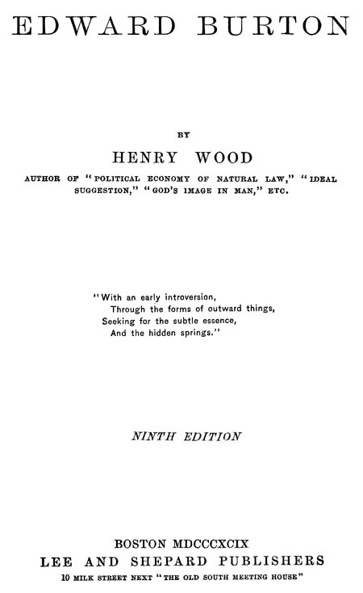

Title: Edward Burton
Author: Henry Wood
Release date: December 9, 2025 [eBook #77430]
Language: English
Original publication: Boston: Lee and Shepard Publishers, 1890
Credits: Susan E., David E. Brown, and the Online Distributed Proofreading Team at https://www.pgdp.net (This file was produced from images generously made available by The Internet Archive)
Books by Henry Wood
VICTOR SERENUS A Story of the Pauline Era
12mo Cloth $1.50
STUDIES IN THE THOUGHT WORLD
$1.25
Fifth Edition
IDEAL SUGGESTION THROUGH MENTAL PHOTOGRAPHY
Paper 50 cents; Cloth $1.25
Tenth Edition
GOD’S IMAGE IN MAN
Some Intuitive Perceptions of Truth
Cloth $1.00
Eleventh Edition
EDWARD BURTON A Novel
Cloth $1.25; Paper 50 cents
Ninth Edition
THE POLITICAL ECONOMY OF NATURAL LAW
Large 12mo Paper 50 cents; English Cloth $1.25
Any of the above sent by mail, postage paid, on receipt of price.
LEE and SHEPARD Publishers
BOSTON

BY
HENRY WOOD
AUTHOR OF “POLITICAL ECONOMY OF NATURAL LAW,” “IDEAL
SUGGESTION,” “GOD’S IMAGE IN MAN,” ETC.
NINTH EDITION
BOSTON MDCCCXCIX
LEE AND SHEPARD PUBLISHERS
10 MILK STREET NEXT “THE OLD SOUTH MEETING HOUSE”
Copyright, 1890, by Henry Wood.
All Rights Reserved.
The author of this volume believes in the wholesomeness of idealism and optimism. It is perhaps unnecessary to state that no attempt is here made to construct a novel upon conventional “realistic” lines. Systems and doctrines find their only expression in character, and distinctive personality may be regarded as the outcome of institutions. It is evident that the delicate pen-photography of the ignoble in human nature is too often the animus in current fiction. A subtle tone of unwholesome pessimism and hopelessness is thereby diffused. Idealization of character may not be regarded as “artistic,” but whether or not this attempt be successful, the writer will still believe that in that direction lies a promising field too little cultivated. It may be well to add that in this narrative no individual has served as a model for character outline.
| CHAPTER | PAGE | |
| I. | FRENCHMAN’S BAY | 7 |
| II. | THE DINNER-PARTY | 15 |
| III. | BURTON’S SCHOOL LIFE | 31 |
| IV. | BURTON’S THEOLOGICAL EDUCATION | 41 |
| V. | BURTON’S ILLNESS AND ITS RESULTS | 48 |
| VI. | THE DOWN-EAST CRUISE | 67 |
| VII. | A PLEASANT ENTERTAINMENT | 91 |
| VIII. | DR. FRUSTADT’S EXPERIENCES | 108 |
| IX. | THE ANEMONE-CAVE PICNIC | 115 |
| X. | THE SHORE-WALK | 131 |
| XI. | VAN RODEN’S PROPOSAL | 141 |
| XII. | EXCURSION TO CRYSTAL CASCADE | 161 |
| XIII. | A MUTUAL CONFESSION | 173 |
| XIV. | THE REVIVAL | 183 |
| XV. | THE TWO FRUSTADTS | 199 |
| XVI. | AN UNEXPECTED MEETING | 212 |
| XVII. | THE FRUSTADTS IN CHICAGO | 225 |
| XVIII. | MR. BONBRIGHT’S FAILURE | 235 |
| XIX. | MR. BONBRIGHT’S ILLNESS | 248 |
| XX. | HELEN BONBRIGHT’S TRIALS | 261 |
| XXI. | BAR HARBOR AGAIN | 277 |
EDWARD BURTON.
About three o’clock one sultry afternoon in August, 188-, a canoe containing two young men might have been seen slowly making its way southward upon that picturesque sheet of water on the coast of Maine known as “Frenchman’s Bay.” The paddles moved lazily, and the mirror-like surface of the water was disturbed only a short distance in the track of the light craft, which, on account of the placid transparency of its native element, seemed to be floating almost in air. That wonderful combination of sea, mountain, rock and forest, which has made this fairest gem of the coast famous, was at its best, and the atmosphere seemed quivering with light, beauty and color. The transparent azure of the sky was reflected in the crystal blue of the unruffled water, and nature was in its most serene and dreamy mood. To the southward, graceful cloud-forms were hanging over Green Mountain; but with that exception, the afternoon sun was in full dominion, and the clear-cut forms of the evergreen shores were duplicated in the waters of the bay. In the hazy distance to the northward, the graceful slopes of the Sullivan hills rose from a silvery foreground of water, backed by emerald mountains in the dim vista beyond. On either hand, down to the water’s edge, the shore was decked with dark forests, relieved occasionally by masses of irregular [8]brown rocks, whose long encounter with the waves had fringed them with clefts, coves and fissures. Here and there, among the sloping evergreen spires were glimpses of summer cottages, the variegated colors of which formed a pleasing contrast with their dark green surroundings. To the south was the fashionable and flourishing town of Bar Harbor, with its lordly villas, great hotels, busy wharves, palatial steamers, and graceful yachts; but above all, its background of noble mountains, which like giant sentinels keep guard over it, in sunshine and in storm. Out towards the ocean, whose mighty pulsations send in a graceful swell, loom up those unique islands known as the “Porcupines,” which stand like huge forts to resist the rougher surges and assaults of old Neptune. The delicious air was laden with a delicate aroma of life-giving ozone, furnishing such an environment that bare existence seemed a luxury and an inspiration. Amid such scenery, Ruskin might have found new and graceful pictures of mountain grandeur, and Wordsworth have gained inspiration for rare songs of lake beauty and sublimity. In the direction of Bar Harbor lay a fleet of yachts and various other craft, some at anchor, and some lazily sailing with scarcely enough breeze to fill their sheets, or to give them perceptible motion.
The two young men whose easy and almost mechanical strokes impelled the canoe gracefully forward were so absorbed in the charming variety of water, forest and sky, that for some time they were silent, each apparently wrapped in his own meditations. The elder of the two was a pale, intellectual-looking young man, of refined appearance, regular features, and of an easy nonchalant air, which indicated familiarity with society, and acquaintance with the gay world. His keen, dark eye, high forehead, precise expression of feature, and all external indications, pointed to a character distinguished [9]for unusual vigor and ability. He was, perhaps, twenty-two or twenty-three years of age; had been graduated the year before at Harvard, and, at present, was taking a course in the medical department of the same institution. His companion was of more sturdy and athletic build, with jet black hair and mustache, and showed a muscular development which would form a good equipment for baseball, or for pulling a strong oar. He also was a Harvard man, and the two, though not chums nor classmates, for two years past had been warm friends, and had seen much of each other. The medical student had just arrived at Bar Harbor as the guest of his friend, whose earnest invitation, seconded by that of his father, induced him to come for a part of his vacation. The elegant and spacious cottage of the Bonbrights usually was well filled with invited guests during “the season,” and a generous but informal hospitality was a family characteristic.
Silence reigned in the canoe, interrupted only by the soft, regular plash of the paddles; but at length the medical student arousing from his reverie, and turning his thoughts from natural scenery to friendly converse, observed, “Bert, who is that Miss Jenness whose arrival is expected this afternoon?”
Adelbert Bonbright, who was in the forward part of the canoe, turned partly around and with an interested expression replied: “She is a particular friend of my sisters, and a mighty clever girl. Helen was very intimate with her at Wellesley, and since that time they have exchanged visits, and I think it is ‘on the bills,’ that she is to be our guest for the next three or four weeks.”
“Where does she hail from?” asked Van Roden, his curiosity having been aroused by one or two previous references to the young lady.
[10]“From Philadelphia, Van, and she belongs to one of the best families.”
“A regular ‘blue blood’ then,” suggested Van Roden.
“Oh, yes,” replied Bonbright; “her ancestors came over with William Penn, and two of her great-grandfathers were signers of the Declaration. Her father’s mansion is located centrally within the strictly correct patrician limits of the ‘Quaker City;’ but allow me to suggest, my dear boy, that the young lady has personal merits enough without drawing upon her ancestry.”
“Pray, what are her particularly fine points?” said the medical student, who, though steadily plying his paddle, seemed suddenly to have lost interest in the surrounding scenery.
“Well,” replied Bert, who now realized that he was arousing the curiosity of his companion, “you will observe them quickly enough when you meet her, but I warn you, old fellow, that she is very independent and unimpressible. She can hold her own in almost any department, and has decided views, whether in literature, philosophy, ethics or love. She is a devoted member of a Browning Club; prominent in a Theosophical Society; a good art critic, and dabbles in poetry.”
“What a paragon!” exclaimed Van Roden; “pray, is there any thing which she cannot do?”
“A truce to the subject,” responded Bonbright; “‘the proof of the pudding is in the eating.’”
“The topic is too interesting to be so summarily dismissed,” said Van Roden. “May I inquire whether it is your well-known general admiration for the sex, which kindles your enthusiasm in the case of this single specimen; or is it an example of special selection?”
“I might as well own that it has a flavor of the latter, Van; perhaps, to quote from your favorite author, it [11]may be regarded as a case of the ‘survival of the fittest,’ she being the fittest.”
“I suppose,” retorted Van Roden, “that we may regard her as a ‘survival,’ because she is the latest of the series.”
“Well,” replied Bonbright, “there is always an improved edition—a climax to every series—and I might as well admit that Miss Jenness is the climax.”
“Until a later climax—if that is what you call a young lady—is reached, Bert.”
“Nonsense! Van; there is only one superlative among the comparatives; one Mont Blanc among the Alps. When a fellow’s ideal is fully complied with—in every detail—nothing more is possible.”
“One would conclude, my dear boy, that your neck was about ready for the matrimonial noose,” said Van Roden. “I hope that you will not be such a fool as to surrender your freedom to any woman. On the much mooted question, ‘Is marriage a failure?’ I vote, yes; that is, so far as its being a means whereby the aggregate of human happiness is increased. The average young woman of the present time knows little or nothing of love, per se; that impetuous unreasonable passion, which has been the most potent factor in all the world’s movements, in the past. She is on the lookout for jewelry, bric-à-brac, horses, an establishment, social rank and position. She is early put in training to play her cards for these things; and almost invariably carries out the programme. Her fine points are cultivated and polished, and those which are indifferent kept in the background; while she is trotted out on the matrimonial course in order to win. Her figure, hair, complexion, dress, manners, accent and dancing, are on exhibition at their best—and the fastest possible time is made towards the goal, which is a ‘good match.’ Marriage is regarded as [12]the entrée, or vestibule to luxury, position and social distinction. Matrimony in modern society is a matter of money; indeed, a regular bargain and sale.”
“You are a regular old croaker, cynic and materialist, Van; utterly destitute of all sentiment, or romance. Love is as potent, and Cupid’s arrows as sharp, as at any time since the world began. Though the age of chivalry has passed, and brave knights no longer enter the lists of the tournament and risk their lives to gain the favor of a ‘faire ladie’; and although the love songs and serenades of gay troubadours have well-nigh ceased; yet love is a sovereign which will never be dethroned. The tinsel, the accompaniments, and the establishment, upon which you wax so eloquent, are mere side-shows and surface indications. Love is the motor, and thus will it ever be. Like the silent and unseen forces of attraction and cohesion, it is imperious; and all external motives must ‘pale their ineffectual fires’ before its sway.”
“O, that’s all hifalutin, Bert: I do not wish to dampen your ardor, or spoil your enthusiasm; but my observation leads me to conclude that the marriage tie—especially within the circle of that hollow aggregation known as ‘society’—in a majority of cases, is a yoke, the galling friction of which directly tends to infelicity and gilded misery. Granted, there are many exceptions, but if the inside and suppressed history of the marriage relation could be uncovered, I believe the exhibit would be as sensational, and have as much drawing power, as any drama upon the stage. Women are exacting, both by nature and education, in the present condition of society. Marriage has become a partnership, formed from motives of expediency, fashion and social ambition. In the very nature of the case, when the ‘fair sex’ claim equal, if not superior authority in all departments—whether [13]within or outside of their peculiar province—to the traditional head of the household, you may look out for breakers. Were women content to fill the place that nature plainly designed for them, things might be different; but as a rule, they are ambitious to extend their domain, and thereby comes friction. It is often admitted that marriage is a ‘lottery,’ and it is quite as evident that lotteries should be suppressed. History is filled with examples of marital infelicity. Lend your sympathy to Socrates, Byron, Goldsmith, Carlyle, and to unnumbered other sufferers, whose experiences, unlike the examples named, have been a sealed book. Look at the rapid increase of business in the divorce courts; note the marvellous growth of Chicago, where, as a specialty, the yoke is severed with ‘neatness and despatch.’ My sentiments may be voiced in the immortal words of Patrick Henry; ‘I know not what others may choose, but as for me, give me liberty, or give me death.’”
The paddles moved with automatic regularity, but in very slow time.
“A man who can utter such a carping and pessimistic piece of oratory as you have evolved, Van, deserves—in a metaphoric sense, at the least—a cuff from every woman whom he may meet. My revenge will be complete, if in the not distant future some particular example should present itself, in which to you, that yoke will seem easy, that captivity sweet, and that matrimonial noose become an attractive way of leaving the world. Your examples of marital misery are exceptions; the counterfeit proves the existence of the genuine, and the exception, that of the rule. If among a hundred marriages there be a divorce case, it makes more noise in the world than the ninety and nine who need no divorce. It has been wisely suggested, that man and woman are [14]like two halves of a sphere—never complete until they find their counterpart; and it is, therefore, plain that you, being a hemisphere, will not roll smoothly through the world, but will go with a wabble, unfinished; and incomplete, as it were.”
“Please ‘give us a rest’ on the matrimonial business,” retorted Van Roden; “I think that you are better qualified to judge correctly of football, sparring or poker, than of the merits and demerits of marriage.”
By this time the light craft was past the headquarters of the Bar Harbor Canoe Club, and after skirting the shore of Bar Island, soon rounded the point, where the town, fringed with its busy and picturesque wharves, rose up in the immediate foreground.
“Do you not find this town stupid,” asked Van Roden, “after the lively old times and sports of Harvard?”
“Not at all, Van; one can manage to exist very well here; what with the hops, buckboard excursions, scenery, and fishing,—especially that kind of angling in which about five young ladies have a line out for each man,—it is interesting, and one would be a prig to vote it dull.”
“A prig in the clover, I suppose,”—quietly suggested Van Roden.
“An atrocious chestnut, Van; but look out for the swell of that Rockland steamer, for we are very close to her wake.”
One or two quick, skilful strokes, however, brought the sharp bow to receive the swell, and in a few moments the young men stepped upon the floating dock, and their light craft was moored alongside of its numerous companions, which constantly dance to the rhythm of the waves.
By six o’clock, on the evening of the same day, a lively group, engaged in animated conversation, were seated on the piazza of the handsome cottage of Edmund Bonbright. This imposing summer residence occupied one of those elevated, picturesque sites, which are so characteristic of the outlying portions of Bar Harbor, and commanded a prospect, at once rich, comprehensive, and varied. The cottage was of an irregular, rambling style of architecture, and its numerous gables, porches, and towers combined to give it a unique and romantic effect, even for this resort, where handsome summer residences are so numerous. A broad piazza extended around three sides of the house, but it was so broken by angles, screens, and vines, that it appeared more like a series of irregular vestibules and recesses. The gently sloping lawn was covered with a velvety green turf, relieved here and there by bright masses of color, which were made up of coleus, geraniums, and other bright flowers; while around the whole, there was a low, massive, cemented wall, covered with vining nasturtiums of plain and variegated colors. A concreted driveway turned in from the street, and describing a graceful curve through the lawn, passed under a spacious porte-cochère at the side of the house. A cosey covered lookout, upon the most elevated part of the roof, commanded a view almost unequalled on the whole Atlantic Coast. At one side, and a little to the rear of the cottage, was a tennis court, surrounded by a high netting, and still further [16]back, was a commodious stable, stocked with a variety of sleek horse-flesh; also a carriage house, containing vehicles, suitable for various uses and occasions. A variety of hammocks, settees, and easy chairs were carelessly scattered about upon the piazza, and every detail of the establishment betokened taste, luxury, and wealth. From nearly every window, as well as from the lookout, lay spread out before the observer, a panorama of mountain, water, island, and forest scenery, of magnificent proportions.
Several of the younger members of the party, a little apart from their elders, were carelessly seated upon some rugs which had been thrown down on the steps, in a partially sheltered location; for a breeze had sprung up, and the temperature had become cool. Junius Van Roden had been duly presented to Miss Jenness, and an animated conversation between them, which indicated the discussion of interesting topics, engaged the attention of the younger group.
As several members of this family party occupy prominent places in this narrative, it may be well to present them to the reader, without further delay or formality. The family of Edmund Bonbright consisted of himself, wife and four children; Adelbert, a young Harvard man already known to the reader, was the eldest; next the twin daughters, Helen and Rosamond, and Tom, the youngest, who was much the junior of the others. Mr. Bonbright, whose city residence was on Commonwealth Avenue, Boston, was a banker by profession, stately and erect in personal appearance; ostentatious and haughty in manner, but courteous in bearing and address. His hair was of a silvery gray, and his closely cropped mustache and scrupulousness in attire gave him the air of a gentleman of the old school. His general deportment indicated a rich, self-satisfied man [17]of the world; a patrician, possessing not only a family history, but also having personal energy and executive ability.
Mrs. Bonbright may be described as a person somewhat under medium size, with a form rather thin and angular, and a sharpness of line about the features, which indicated strength of purpose, and firmness in any chosen line of duty. Her facial expression might be regarded as somewhat austere, but quite conscientious, and while she was exacting and rigid in judgment, she was neither unkind nor disagreeable. She was punctilious in the performance of what she regarded as duty; a prudent housewife, scrupulous in conduct, but not over-tolerant with those from whom she differed.
The twin sisters were quite unlike in appearance, character, and temperament. Helen Bonbright was ideally beautiful, though utterly unconscious of her attractiveness. With a wealth of blond hair, large limpid blue eyes, and a pink transparent complexion, was combined a graceful and willowy figure of about the medium size. While self-reliant, true in character, full of kindness, and graceful in deportment, she was simple and unaffected. Her external loveliness was only a natural and corresponding manifestation of her inner nature. Rosamond also was exceptionally beautiful, but it was loveliness of a different type. She was a brunette, with coal-black hair, and dark, flashing eyes, arched by heavy drooping lashes. While intensely fond of society and gayety, impulsive, coquettish, and devoted to dress and display, she possessed much character and equipoise. The two sisters, while so utterly unlike, were devotedly fond of, and loyal to each other.
Tom, the youngest of the family, was a cripple and an invalid. Owing to an accident which occurred in early childhood, he was obliged to use a crutch, and at times [18]was a great sufferer. He was now about twelve years of age, simple-minded, and inclined to fun and mischief.
On that day, besides the family, Miss Jenness, Van Roden, and a few other friends were to dine at the cottage. The guests included Bishop Alban, who was a brother of Mrs. Bonbright; Senator Van Roden, father of the medical student; and Miss Sophy Porter, a Boston lady of uncertain age, who often visited the Bonbrights at their city residence. Miss Porter was well known as a reformer, lecturer, woman-suffragist, and general champion of woman’s rights. While awaiting the summons to dinner, lively manifestations from the party on the piazza gave evidence of the social enjoyment and hearty good-will which prevailed. The sound of music floating out from the drawing-room, caused a sudden toning down of the conversation. After several themes from Beethoven, which followed each other in rapid succession, the final selection was a weird Hungarian rhapsody, during the performance of which, the utmost silence prevailed among the whole party. The most ordinary amateur would have noted a perfection of rendering and divination, which indicated not only artistic finish, but a wonderful power of interpretation. Passionate and subtle voices telling the story of their loves and trials, their discords and harmonies, and gradual transitions from one to the other, could be perfectly understood, though evolved from so material a medium as a piano.
“Whom have we among us that can play so exquisitely?” asked Van Roden after a pause, for though but an indifferent musician, he recognized the hand of an artist.
“Oh, that is Helen Bonbright,” replied Miss Jenness; “no one who has ever listened to her playing can afterwards mistake it. It is very kind of her to give us such [19]a delicious prelude to dinner, although it seems like a descent from drinking in such a flow of melody, to the act of eating material food.”
“Yes, I think the feast of melody should come as the last course, to be in accord with the general law of progress,—from lower to higher,” replied Van Roden.
“I infer that you are a believer in the doctrine of evolution,” said Miss Jenness.
“I am not only a believer, but I must own to being somewhat of an enthusiast,—or at least, I may say that I am an interested student of evolutionary science.”
“Who are your favorite authors?” she asked.
“Darwin and Spencer, especially the latter, whom I regard as the most interesting and comprehensive of any of the later writers on scientific development,” replied Van Roden, “though I much enjoy Descartes, and some of the earlier investigators. There has been a process of evolution in evolutionary science itself, so that the latest modern thought is much in advance of earlier speculations.”
“Will you kindly state a few of the cardinal principles of the theory of development, as you accept them?” asked Miss Jenness.
“It would be very difficult to do so in a few words,” he replied; “but perhaps a mere outline might be given, as follows. We believe that all organisms, whether plants or animals, including man, have come into existence by the gradual growth and unfoldment of primordial germs; and that the whole physical universe, including everything organic and inorganic, is a mechanism, and as such, is to be accounted for on physical principles.”
Van Roden warmed up as he proceeded in the exposition of his favorite topic, for Miss Jenness appeared interested, and this was unlike his usual experience. [20]As a rule, his listeners had been bored whenever he had trotted out his favorite hobby.
“All structures,” he continued, “have proceeded by regular gradations from extreme simplicity to greater complexity, and each has relations with the other. There is also a close analogy between the different series of gradations presented by the various species which comprise any great group of animals or plants, and, still farther, large groups of species of widely different habits present the same fundamental plan of structure.”
Adelbert, who had drawn near, and partially grasped the line of argument, interposing, said,—
“We are ready to accept the doctrine of evolution, Van, without further proof, for we have evidence in you, that the process is going on, and that you are rapidly being unfolded into a crank.”
Van Roden, however, seeing that Miss Jenness continued interested, disregarded the interruption, and continued: “There are various structures and organs in a rudimentary and useless condition, which in the more advanced species of the same group have definite utility and perfection. It is observable, also, that the effects of varying conditions, or environment, exercise a modifying influence upon living organisms.”
“What is it that evolves itself, and how was the process brought about?” inquired Miss Jenness.
“As I before suggested,” said he, “the operation must have begun with primordial germs; and a mechanical, physical force, which is inherent in matter, caused their gradual unfoldment.”
“You can do me a great favor,” suggested Miss Jenness, with a mischievous twinkle in her eye.
“I shall be most happy,” replied the unsuspecting medical student.
“If you will be so kind as to procure for me a small [21]basket of those primordial germs; I would like to take them home, when I return to Philadelphia.”
Van Roden joined in the general laugh which followed, regardless of the fact that it was at his own expense. However, Miss Jenness seemed disposed to continue the discussion, and, putting aside her jesting mood, inquired: “What about mind and its origin?”
“Mind is but a property or manifestation of matter,” he replied, “and mental evolution is simply a more advanced, attenuated and refined phase of material unfoldment. From the earliest operation of inanimate nature, up to human mentality, reason and ethics, as they now present themselves, the process has been a purely physical and mechanical development. All phenomena may be traced from matter, and the forces which inhere in its operations.”
“What a dismal, cold, heartless machine we are a part of,” responded Miss Jenness. “I suppose we may regard ourselves as cogs in some small wheel of the vast mechanism; or as automatons, worked by springs and valves.”
Van Roden winced a little, as he detected the tinge of sarcasm in her tones, but, regardless of that, he thought her bright and entertaining. He was intolerant of dulness, but a keen opponent, especially of the weaker sex, interested him. She continued: “You appear to be not only a materialist, but a matter-worshipper.”
Van Roden prided himself upon having the former term applied to him, but the latter he thought a little severe, and replied, “As a matter of fact, Miss Jenness, I really cannot plead guilty to any kind of worship.”
“If you find all potency in matter,” she replied, “you must, unconsciously, at least, pay homage to it. In a most realistic sense, man must worship something. That faculty is inherent in his nature. He will reverence [22]whatever in his own conception is the highest or supremest power. You are aware that man unconsciously will grow like his ideal, and, with a material conception of all life and power, he will become more and more material, and progress will be earthward.”
Miss Jenness was becoming quite in earnest. “Looking backward to the utmost, to an imaginative starting-point,” she continued, “you begin with primordial germs, and from them proceed to evolve, not only the whole universe of matter, but of mind also. How could inanimate things originate such a skilful and intelligent evolutionary system? Where does the genesis of conscious mind and will make its appearance? Have you the assurance to claim that ethical and religious truth originated in primordial germs?”
Miss Jenness had piled these questions upon each other so rapidly, that Van Roden found it difficult to reply to them in detail, and became a little uneasy. He pulled himself together, however, and observed: “Spencer thinks that we must limit feeling and consciousness to those organic beings that are endowed with a nervous system. With the evolution of nerves came, gradually, feeling, and, finally, consciousness.”
“How could such marvellous tendencies and possibilities have been implanted in matter without not only infinite wisdom, but infinite forethought?” replied Miss Jenness. “As to the evolution of material nerves, they are no more spirit, will, or intelligence than is muscle. That science which places the limit of its domain at materiality is one-sided, and therefore, notwithstanding its arrogant claims, unscientific. Its boundaries embrace only that part of related truth which is lowest and least important, while it is blind to all the higher and more intrinsic domain of spirit and spiritual law. When in the dissecting-room, have you ever been able, with the [23]aid of your scalpels and microscopes, to peer into the body deeply enough to find the man himself? The mind is the man, while the material part, which from your standpoint you regard as man, is only an external manifestation of him. I believe that there are many signs already visible which indicate that the materialistic trend of the times is beginning to turn; and that true science, which is comprehensive, and which embraces all spiritual and immaterial law and progress, as well as that which is physical, will soon displace the prevailing coarse and superficial speculations, which refuse to recognize anything beyond the cognizance of the physical senses. A word more in regard to evolution, as a process. We accept the fact that the creative process may be progressive, or, if you please, evolutionary, within some yet undefined limitations; but that that fact invalidates in the slightest degree the reign of spiritual law, or the existence of an All-Wise and Supreme Creator, we most emphatically deny. A superb mechanism, whether produced suddenly or gradually, proves its previous existence in the conception of its author. Let me assure you that it is only pseudo-science, which rakes over and over the mud of materialism, while it closes its eyes and ears to spiritual verities on every hand.”
Van Roden had a sensation of being hors du combat, and this by an opponent of the weaker sex. He had become so accustomed to asserting himself, and could so easily throw up what seemed to him a strong intrenchment of materialistic argument, on short notice, buttressed with quotations and sentiments from Darwin, Spencer, and Huxley, that to find a woman able to discomfit him was a new sensation. His attention was diverted for the moment from the argument to his fair opponent, and the thought flashed through his mind that in her, Evolution was well advanced, and had accomplished some very fine work.
[24]Just then the announcement of dinner ended the discussion.
At the table, Miss Porter and Miss Jenness occupied seats respectively at the right and left of the host, and Bishop Alban and Senator Van Roden were placed in corresponding positions on either side of Mrs. Bonbright. Van Roden, who had escorted Miss Jenness to the dining-room, found an assignment which placed him next on her left; with Helen Bonbright on his left. After expressing to Miss Helen his high appreciation of her musical prelude, he again turned his attention to Miss Jenness, merely, as he persuaded himself, to indulge in a little study of character. He had never before met such a woman, for no one previously had taken sufficient interest in his theories to confute them; but here was “an opponent worthy of his steel.”
Adelbert Bonbright had been an interested observer of the discussion, not because of any special interest in the subject, but on account of Miss Jenness’s participation in it; and of the neat manner in which she had spiked Van Roden’s guns.
A license for indulgence in mind-reading is sometimes granted to the chronicler of events, and its application at that moment to Adelbert Bonbright, as he cast a bitter glance at Van Roden, would have revealed, in a mild form, the presence of the “green-eyed monster,”—but as the young man’s solid sense came to his rescue, the unwelcome spectre was quickly cast out.
The table and dining-room had been tastefully decorated with flowers by the cunning hand of Rosamond, and the pleasing odor of tempting viands, enhanced by the rich and massive service of silver and cut glass, together with the bright faces and charming costumes of the young people, formed a tableau of social life, full of interest and color.
[25]Mr. Bonbright had been spending a few days in the city, and as he had only returned the night before, his mind was much occupied with market values, stocks and bonds, but he was too well bred to introduce business topics at dinner. In political economy, ethics, social science, and the tariff, he had positive views, and while discussing a good dinner, he always enjoyed a little intellectual sparring—by way of seasoning. He was especially fond of a tilt with Miss Porter, who always posed as the embodiment of all “reforms” and “advances.” Her greatest pride consisted in the fact that she was a radical; his, in his conservatism. She had recently attended a convention in which woman-suffrage, prohibition, nationalism, socialism, and various other “isms,” had been discussed, and their merits satisfactorily proved and demonstrated.
“I suppose that the world is to be recreated, and society reconstructed on a new and improved plan, when your machinery all gets into working order,” said Mr. Bonbright, addressing her.
Miss Porter had been giving an outline of the doings of a recent gathering, where the leading spirits of “reform” had met for mutual inspiration and encouragement.
“Yes,” she replied; “a radical change and reconstruction are necessary in all departments. When woman, who always possessed the abstract right of suffrage, gets that right recognized and made operative, a grand step will have been taken toward moral, social, and economic reform. Among the objective points will be: a more equal distribution of wealth; the regulation and control of corporations; constitutional prohibition; and other needed amendments and improvements.”
“What a bore it will be, if we are obliged to study politics, attend caucuses, and go to the polls,” said [26]Rosamond. “If the rival candidates for any office were men, I should vote for the best-looking one. Whatever the office might be, I should fancy a fine-appearing official.”
“Points of that kind would not have a feather’s weight with me,” observed Miss Porter, “but other things being equal, in the interest of reform, I should vote for women for all offices. I think they would prove more efficient, and be less liable to be swayed by mercenary motives.”
“I trust that you have no inclination to do our sex the slightest injustice,” said Senator Van Roden. “I have uniformly voted for every measure of a reformatory character, and also favored a continual increase and enlargement of the functions of the State. As to woman-suffrage, I am heartily in sympathy with your views on the subject, and have uniformly labored and voted in its behalf.”
“You may rest assured, Senator, that in my general observations, nothing could have been farther from my intention than to reflect upon you. I assure you, that your efforts for the enfranchisement of woman, and for reforms in general, are highly appreciated by me, and by all true reformers.”
“I would like to know how many women exist who would be uninfluenced in their voting, and their political principles, by purely sentimental considerations,” interposed Mr. Bonbright. “It is natural and well for women to be sentimental, but sentiment does not harmonize well with politics. It would be like a mixture of oil and water, or a combination of romance and mathematics. How would a jury composed of those women who take bouquets to the cells of notorious criminals stand the pressure, when a desperado was brought before them for trial, in case he were defended by a lawyer that could [27]evolve unlimited supplies of sympathy and pathos? Where would women get that necessary experience, and knowledge of finance, tariffs, treaties, and political economy, for which they have no opportunity, owing to the duties and occupations of their domestic life? Allow me to suggest, Miss Porter, that if your sex know when they are well off, they will keep their normal place, and try to fill it, rather than attempt to spread themselves over unlimited territory.”
“I think women would do their duty more faithfully than men, so far as they understood it,” suggested Mrs. Bonbright, “but I have no desire to vote, and do not believe in it.”
Mrs. Bonbright was intensely loyal to her sex, but her ideas of woman’s province did not coincide with Miss Porter’s.
Van Roden glanced at Miss Jenness as if to divine her sentiments; but she remained provokingly silent.
“Woman has a vast field for usefulness,” said Helen, “but it appears to me, that neither by nature nor education, is she fitted to take an active part in politics and legislation. Her place in society is not boundless in extent, but it is all-important. There is work enough that she is suited for, and her ambition should be to do that peculiar work well. The highest possible occupation consists in laying moral foundations in individual character, for which service woman has especial adaptability, and when that is well done, the particular forms and methods by which that character expresses itself are of secondary importance. If Miss Porter will pardon both the sentiment and the incongruity, I will vote that women do not vote.”
“I quite agree with you, my dear niece, so far as woman-suffrage is concerned,” observed Bishop Alban, “and may I suggest to Miss Porter that all moral reform, [28]to be genuine, must be developed through divinely appointed channels. The Church is the arbiter of morals, for all morality is the direct outgrowth of religion, and religion has expression in organized and appointed institutions, doctrines, forms, and sacraments. While with us the Church and State are distinct, yet the State should receive from the Church a direct moulding and regulative influence. All ethical legislation should find its first principles from that source, and that alone.”
“With all respect,” replied Helen, “may I suggest, that while institutions—especially the Church—as a means, are indispensable, for the reason that they elevate and refine character, yet in their nature, they appear to be auxiliary, rather than ultimate.”
“When all the reforms which can be brought about by improved legislation are inaugurated,” suggested the Senator, “we will have a much nearer approach to an ideal condition of society, than has been realized. There will be a great improvement in the ways and means for the distribution of wealth, and the State will not merely regulate, but transact in its own name the business now monopolized by great corporations, and the brotherhood of man will gradually become a reality.”
“Excuse me,” said Mr. Bonbright, “but I am tired of this nonsense about the brotherhood of man that is to be brought about by reducing all sorts and conditions of men to one dead level, and a very low level at that. Must we all lose our individuality, and require a paternal government to watch over us, as would be necessary if we were all infants or imbeciles? Give me a monarchy, where there is at least some personal freedom, rather than a government which, while ostensibly democratic, would become a great tyrannical machine—cast-iron in every detail. There could be no oppression more severe [29]than that of a majority which is enforced merely for that reason. By means of the machinery of legislation, natural and fundamental rights can be trampled upon which are older than the Decalogue. As an instance take those States where, under the forms of legislative law, natural and moral law is violated by the establishment of unremunerative rates for the sale of railway service. The buyers, being the majority, force the sellers to accept a price dictated by purchasers, and this proves that stealing can be done by a State, as easily as by an individual. If this rapid progress towards paternal tyranny continues, I shall emigrate to some quarter of the globe where individual energy, ambition, and talent, have some value.”
“I quite agree with you,” said Miss Jenness, who up to this time had taken no part in the general conversation. “Anything but a dead level. Complete unity is formed of variety. Society, to be ideally perfect, and in order to form harmonious completeness, must be composed of dissimilar elements. Each member of a perfect organism must be in, and fill its peculiar place, then all will go well. As Pope well puts it,—
A brotherly spirit should permeate all the members, but as to the external ways of its manifestation, there must be individual freedom. By a wonderful inherent process, each element will find the place where it can do the most for itself, and for others, and thus the law of moral and social specific gravity will make a thousandfold finer adjustments than would be possible from the fruits of the best legislation, piled ‘Ossa on Pelion.’ There is a strong inclination at the present time, to push legislation beyond its normal limits, and when so [30]strained, it becomes artificial, impractical, and injurious. It aggravates evils which have in them the elements of self-regulation, or self-destruction.”
Van Roden cast an appreciative glance at Miss Jenness as she concluded her argument, and was pleased that she had as clearly come off victor in the contest with his senatorial parent, as she had done with him. This young woman was an enigma to him. She appeared equally ready on all subjects. Must he revise his opinions of the sex, or was this specimen a “rara avis”?
Before either the Senator or Miss Porter found opportunity to re-open their batteries, the last course had been served, and, at the motion of the hostess, the whole party adjourned to the drawing-room. The evening was occupied with social converse, music, whist, and the making of plans for excursions on the following day.
It becomes necessary to transport the reader from Bar Harbor and the events of the last chapter to a small inland town in New Hampshire, and also to turn back “the whirligig of time” twelve years.
In a quiet village, situated but a few miles from some of the higher of the White Mountain peaks, there stood a rather old-fashioned, but substantial and commodious, country-house. Its location was in the upper part of the village, fronting the green, and quite removed from the few shops and stores which were at the lower end of the main street. It was a square, brick structure, with a four-sided roof, and on the front a small veranda, over which woodbine and rose vines had crept, and were pendent over the front entrance. The windows in the rear afforded a picturesque prospect, having a foreground of forest and field, and, in the distance, a charming view of some of the loftiest mountains of the Presidential range. For several years it had been the home of the family of James Burton, and at the present time was occupied by Mrs. Burton, and her four children—Mr. Burton having died about two years previous. Just across, and on the opposite side of the green, stood the little white village meeting-house, with its spire pointing heavenward, and in its tower hung the bell, which [32]with clarion tones had called the fathers and children, for two or three generations, to worship within its hallowed walls.
On a beautiful Sunday morning in June, 187-, the old bell’s melodious invitation went out to the villagers and country folk, and the reverberations of its music chased each other over the hills and valleys through the clear morning air. No other sound was audible; and as its tones died away in a graceful diminuendo, an atmosphere of quiet rest prevailed, and even nature seemed silent and in repose.
On such a Sabbath the sun seems brighter, the mountains grander, the air softer, and the flowers sweeter, as if nature herself were in a silent exercise of gratitude and praise.
The New-England rural Sabbath of those days was ideally perfect—so far as rest from manual labor could make it so; but there was a tinge of austerity and hardness perceptible, which hindered its perfect adaptability to youthful life in view of the fact that “the Sabbath was made for man.” The Puritan, in his reaction from the Sunday pleasure and license of other countries and religions, lost in a measure that intrinsic gladness and joyousness, which is an element needed to make the day complete. That spiritual exaltation which would render the Sabbath “a delight,” seems to have given place to a literal attempt, as a duty, to pay strict regard for the sanctity of its hours. In times past, a mistaken and almost morbid conscientiousness has sometimes transformed [33]the brightest day of the week into a burden, or even a “fetish.” Such tendencies are disappearing, and the current is setting in too strongly in the opposite direction, but in the time and place with which we are dealing a hearty, youthful laugh on the first day of the week met with stern reproval; and a walk in any other direction than to or from the church, or “graveyard,” was of very doubtful propriety.
For several years before his death, James Burton had been the leading lawyer of the town, and his profession had yielded him a liberal income, which, from the local standpoint, was large. As may be inferred, Mrs. Burton found herself with ample means for her own comfort and for the maintenance and education of her children. Of the four Edward was the oldest, being at this time about twelve years of age, with one brother and two sisters younger. He was unusually intelligent, conscientious, and helpful for his age, and his mother already had come to regard him as a companion, and almost an adviser. In past years his father had expressed the desire that Edward, in due time, should follow in his footsteps, by making the law his profession; but his mother had other plans. It was her earnest intention that Edward’s education and career should be shaped for the clerical profession, rather than the bar. In her view, the clergyman’s “calling” was by far the noblest of all human occupations, and her highest ambition for her son was, that some day he might be placed upon such a pedestal as every minister of the gospel was entitled to occupy. At this time the country minister did not possess that unquestioned authority as arbiter in all matters—religious, ethical, political, and social—which was the rule a generation or two before; yet, in a rural community like this, the village pastor occupied a plane above and somewhat removed from that of any other [34]citizen. His opinions on all subjects were entitled to great respect because of his office, and they could not lightly be called in question. The sacredness of his vocation, rather than his superior judgment, made him a kind of universal “oracle.” In the older time the New-England rural pastor carried such a weight of responsibility, that a solemn awe and gravity attached themselves to his very personality. Happily this old-time rigidity and austerity are passing away, and the modern pastor is often the most genial and lovable of men. Children no longer hide from his presence, but make him their welcome and familiar friend. Such external changes and manifestations are the visible register of a growing internal warmth and progress. If written and theoretical creeds have not changed, it is certain that “practical” ones have been greatly modified. The former sternness and austerity, which gave religion the air of its being a disagreeable necessity, is yielding to a naturalness and loveliness which make it attractive in proportion as the change makes progress. It is undeniable that much of the infidelity, materialism, and atheism now prevailing are but the natural reaction from former extreme and unwarranted statements of religious dogma. It was well meant and sincere, but none the less mischievous. It savored much of “the letter which killeth,” rather than of “the spirit which giveth life.” Theological systems of the seventeenth century must be expanded and modified, else the light of the present era will discover their leanness, and put them aside as obsolete.
Mrs. Burton not only had a wholesome ambition for the success of her son, but was thrilled with an intense and kindly sympathy for that greater part of the human family, which she believed to be hopelessly lost. She anticipated with gladness of heart the service which [35]Edward might render in repairing the world-wide ruin which resulted from “the fall of man.” With the utmost conscientiousness and devotion, she improved every opportunity to sow such seed, and arouse such motives in his youthful mind, as would bring about her ideal result. All her endeavors were ably seconded by Mr. Johnson, the village pastor, who was a most kind, devoted friend, and who took great interest in her plans.
On this lovely Sabbath morning, Mrs. Burton and her children occupied their accustomed pew in the little white meeting-house. It was an occasion of unusual interest for the church, for over twenty new members were to be received to its fellowship. Mrs. Burton’s heart was overflowing with gladness and thanksgiving as she saw the long line of candidates ranged in front of the pulpit platform, and among them her son, who was the most youthful of all. She felt that the prayers of many years had been answered. This important accession to the membership of the church was the fruit of a quiet but deep spiritual movement which had taken place without any unusual instrumentality. An important part of the ceremony observed in the reception of new members, consisted of the reading of the lengthy creed, to which those who would enter the church must give their assent section by section. Its abstruse and positive statements about Decrees, Predestination, Foreordination, and Retribution, as formulated by the scholastic theologians of the seventeenth century, formed the only gateway into the fold. How such simple-minded Christian youth, who needed only spiritual nourishment, and a quiet moulding into Christ-likeness, could digest and receive sustenance from the “strong meat” of the Westminster divines, may well be questioned. The extreme sanctity with which this “system” has been regarded, and the great reluctance of the church [36]to modify or revise it, to bring it more nearly into harmony with the best thought of the present time, is unexplainable. It seems to have been regarded as the “ark of the Lord,” to which no man dare put his hand. Not until its oppressiveness as a bar to church membership is more generally realized, will it be replaced by a plain, simple statement of Christian truth. Edward Burton and his companions regarded it as their solemn duty to believe it,—to the letter,—but they could not understand it. After the impressive service was concluded, Edward and his mother wended their way homeward, freely discussing measures and plans for the future. Edward was in full accord with his mother concerning the course which she had marked out for him, and entered into the whole design with enthusiasm. The comprehensive plan to be prosecuted, included three distinct courses of study, the completion of which would require at least ten or eleven years. It comprised a preparatory course at an academy in a neighboring town; followed by a classical course at Dartmouth College, and, finally, a thorough theological training at Andover Seminary.
We shall not linger to follow in detail the history of Edward Burton during the progress of his education. With the exception of a few brief resting-places, we shall glide forward through the coming years, as rapidly as they were passed in the backward flight. Following the events of the rare June sabbath, the summer days soon sped away, bringing the time when Edward was to enter upon the first stage of the career which awaited his youthful aspirations. As the time for him to leave home drew near, he and his mother both began to realize how much the separation meant for them.
[37]Edward never had spent more than a single night away before, and now, to leave the quiet peaceful haven of home, launch his bark and put forth into unknown waters, was a severe trial. When the coach arrived that was to bear him away, as his light belongings were being hoisted upon the rack, his mother clasped him in her arms, and gave him her benediction. The struggle was severe, but brief. The pathos of the scene caused even the sturdy driver to brush aside a tear, but as Edward stepped into the stage, he uttered a few brave words of cheer, threw a kiss to his mother, and then with a crack of the whip the coach rolled away.
The first few weeks of school life seemed to him like so many months. It did not require the full and tender letters which twice a week came from his mother, to bring up visions of her and of his home-life, which were now left behind. When severe attacks of home-sickness came on, he realized that occupation was the best antidote, and vigorously plunged into his studies. A slight insight into Edward’s school life may be afforded by the quotation, verbatim, of two or three of the many letters sent to his mother.
One received two months after he left home was as follows:
Chester Academy, November —, 187-.
Dear Mother,—Your good letter came yesterday. I was so glad to hear from you and I carry each of your letters in my pocket till the next one comes, so that I can read it over many times. It seems a year since I left you gazing at the old stage coach, which carried me away. I have kept count, and this is the sixteenth letter which I have sent you. I have got pretty well acquainted with most all the boys. The principal is very kind to me, but among the three teachers that hear my lessons I like Miss Bailey the best. I have not got a single mark yet for being late at prayers since I came. They come at nine o’clock in the morning, but perhaps I have told you of that before. Miss Bailey says she thinks that I am doing well in Latin, and splendidly in Arithmetic. My [38]lessons are all through by three o’clock, and we have from that time to five, for baseball and croquet. There is only one fellow here that can beat me at croquet, Jim Brown. I like my boarding-place better than I did at first, but their pies can’t come up to yours nor their doughnuts either. Dear mother, I think over all your good advice every day, and try to keep it. I am learning to sing, with all the other things, and Prof. Meldrum says that my voice is very good. I do not forget to read my chapter every day, nor to say my prayers every morning and night. Flora, the boarding-house keeper’s little girl, that I have spoken of before, is very kind to me, and I think she is real nice. I think my room-mate, George Williams, is about as nice a fellow as I ever knew, only he is a little quick-tempered. Dear mother, I am counting the days to when my first vacation will come, and I shall see you again. But it is getting late, and I must study my history lesson to-night. Dear mother, good-night and give a good smack from me to Henry, Susy, and little Ella.
From your loving son,
Edward.
The following, taken at random from a large pile of letters, was written three and a half years later:
Chester Academy, May —, 187-.
My dear Mother,—I have had so much extra work this week, in getting ready for my final examinations, that you will receive this letter a day or two later than usual. My last term here will soon be at an end, and while I am anticipating much pleasure in being at home during the summer vacation, I shall leave here with many regrets. Our graduating class numbers sixteen, and nine, besides myself, will enter old Dartmouth next fall. This will make it very pleasant for me, for, with one exception, they are all very nice fellows. I have a piece of news for you. The principal has just informed me that I have been appointed Salutatorian, for the closing exhibition. It makes me “shake in my boots” a little to think of it, for all the leading people of the town always attend our graduation exercises. Flora says that she hopes that I will not break down. I always was a little timid, you know, but it will be so long before I get into my own pulpit, that I think I will be bravely over it before that time. I must begin on my salutatory oration very soon, and I shall take much pains with it, especially since you are going to be present. William Tapley, our valedictorian, is a splendid orator, but in other departments my reports, on [39]an average, are slightly better than his. He never has any trouble with his hands when he speaks. Some of our class had a little spree the other night, and among other antics, they unhung several of the villagers’ front gates. I did not join the party, though strongly urged to do so. I have every assurance from my teachers that I shall be well prepared for the regular college course, and I begin to think how it will seem to be a freshman within the “classic shades” of Dartmouth. In our croquet tournament of last week, I came out the champion; and in baseball and rowing I am well up in the list. Our religious society in the Academy is in a flourishing condition, and I have taken considerable interest in its meetings, and occasionally conducted them. In giving you these items regarding my success, I trust that my motive is not mere personal pride, but I have related them because I know they will gratify you. I often feel, that in a deep sense, I am your representative; and not only that, but that your encouragement and inspiration, more than all other things put together, have contributed to my advancement. I have made arrangements at our boarding-house for a good place for you, which will be all ready upon your arrival.
With love to the dear brother and sisters,
I am, ever your dutiful son,
Edward.
A little more than four years later we pause long enough to glance at a single letter.
Dartmouth College, June —, 188-.
My dear Mother,—I very much regret that you are unable to come and be with me during my last days at Dartmouth, as we both had anticipated. I am glad, however, to learn, by yours of the 24th, that you are much improved, and that in all probability your health will shortly be restored. As I expect so soon to be with you, I now will give only a few items regarding our graduating exercises; reserving details, until I see you. You will notice by a copy of the college periodical which I have just sent you, that I received the prize for General Progress (made during the college course) and also, Honorable Mention in Philosophy, Latin and Greek. I was appointed to make the “Campus address” on class day, and it was well received. Quite to my surprise, the judges of prize speaking awarded to me the second prize, William Tapley easily winning the first. The subject of my address was Compulsory [40]Morality, its thesis being the proposition: that a small amount of voluntary well-doing is worth infinitely more than all the compulsory morality which legislation can effect. I shall take pleasure in reading it to you when I get home. I hope that my religious life has been gradually developed, during my college life, and I have had special help from two of the professors, who, knowing my interest in theology, and my future plans, have kindly aided me. The special lines of study which I have most enjoyed, are Paley’s Evidences; Butler’s Analogy; Latin and Greek; and Moral Philosophy. I have invited William Tapley to spend a week with us, some time in July. I did not think it necessary to write you in regard to it, for I know that you are always glad to see my friends, and he is one of my intimates. I have taken considerable interest in athletic sports recently, and have good solid muscle, and sound health. I know that it will please you to be assured that my temperance principles remain unimpaired, and also, that when the class “farewell pipe” was smoked, my whiffs were, from necessity, very few. A majority of our class are religious men, and two others besides Tapley and myself expect to prepare for the ministry, at Andover. Our baccalaureate sermon was excellent, and must have had an inspiring influence upon every one who heard it. The text was, “The field is the world.” In the light of its masterly exposition, I am considering whether it may not lie in the line of my duty, at the proper time, to offer my services as a missionary, in some part of the foreign field. We will talk it all over when I get home. I expect to get my matters all closed up here, so as to come to you on Tuesday. “Old Dartmouth,” my Alma Mater, will always be dear to me. Regards to Mr. Johnson, and love to Henry, Susy, and Ella.
Dutifully yours,
Edward.
A few weeks subsequent to the receipt of Edward Burton’s last letter from Dartmouth, a little group—consisting of Mr. Johnson, Mrs. Burton, Edward Burton, and William Tapley—was gathered one summer evening in Mrs. Burton’s commodious parlor. In response to Edward’s earnest invitation, Tapley, for a week or two, was the guest of the Burtons. After some conversation relating to local and unimportant matters, Mr. Johnson introduced the subject which lay nearest his heart.
“My dear Edward,” he said, “there are some things concerning your future plans, in which I, as well as your mother, have taken a deep interest, and at her suggestion I would like to advise with you, and offer a little counsel, which I trust may not be unacceptable. As your father’s and mother’s pastor, and as your own early spiritual adviser, who baptized you in infancy, and who, as an under-shepherd, received you as a lamb into ‘the fold,’ I feel a deep interest in your welfare. It has been your purpose soon to enter Andover Theological Seminary, to prepare yourself, by a course of study, for the gospel ministry. Many years ago I received my own theological education there, but at that time sound doctrine and a pure scriptural religion characterized that institution. While it grieves me to express my loss of confidence in my Alma Mater, I feel that duty demands that I should acquaint you with certain erroneous and heretical theories and tendencies which are promulgated there under the present administration.”
[42]Mr. Johnson noticed a disappointed expression stealing over Edward’s face, and glanced at Mrs. Burton, as if waiting for her to indorse the sentiments which he had expressed.
“Yes, Edward,” said Mrs. Burton, “I feel that we should listen to our pastor in such an important decision; and as he is convinced that dangerous doctrines are indirectly, if not positively, taught by the Andover professors, I should not dare to subject you to their influence. I am more than ever anxious to have you prepare yourself for the Christian ministry, but we must give up the idea of Andover, and choose some other institution. I feel sure that the time will come, if not at the present, when you will see that such a change of plan is of the utmost importance. I also hope that your friend William will be guided by the same considerations, and that you can continue your studies together, where no unsound or doubtful doctrine is inculcated. It would shock me to feel that by going to Andover you might not only imbibe dangerous theories, but also become instruments for spreading them broadcast.”
Edward was both dutiful and conscientious, and seemed inclined to acquiesce in his mother’s opinions, fortified as they were by the infallible ipse dixit of his old pastor. Notwithstanding years of separation and subjection to other influences, the feeling was dominant in Edward’s mind that Mr. Johnson was “an oracle” in “spiritual things.” Tapley, unlike Edward, was independent and philosophical, though, at the same time, deeply religious and spiritual. His logical turn of mind always prompted him to question assumptions of truth, unless quite sure that they were supported by reasonable deductions from well-grounded premises. As Edward made no immediate response to the advice which had been given by Mr. Johnson, Tapley, who had [43]been included in the argument, felt warranted in joining in the discussion.
“I infer,” said he, addressing Mr. Johnson, “that what is called the ‘Andover hypothesis’ of a possible future probation is what you allude to as being a dangerous doctrine or theory. With all respect for your age and experience, may I inquire wherein it is either dangerous or unreasonable?”
“Because it is contrary to the Bible, and, also, because it removes some of the strongest motives which cause men to renounce their wicked ways and repent,” replied Mr. Johnson.
“While it may appear to conflict with the letter of a certain class of texts,” observed Tapley, “do you think that the spirit of the Bible limits the mercy of God to such a degree as to reasonably make it appear that the ‘larger hope’ is a positive error?”
“God certainly is merciful,” observed Mr. Johnson, “but if every man should interpret Scripture by his own reason, there would be no standard. The Bible is God’s Word, and it declares that the wicked shall ‘go away into everlasting punishment.’ Probation ends with this life, and any theory of a future probation would directly tend to embolden men in sin, and keep them in a state of impenitence.”
“You will pardon me,” said Tapley; “but is it not true that in the interpretation of Scripture, God not only has given us our reason, but has provided His Spirit ‘to guide us into all truth’? The revelation of God was not completed in the Bible, but is continuous. As we shut out our sensuous perceptions of the material world, with all its noise and distraction, and reverently listen to the ‘still small voice,’ truth is revealed to us. All truth is harmonious, and the truth of the Bible, if rightly interpreted, will perfectly agree with truth [44]revealed by the Spirit, and with all other truth. Is it not a fact that the various sects, in their distinctive features, have been built up by giving undue emphasis to certain classes of texts, taken literally and externally? Literalism makes the Bible an inharmonious book, but, looking beneath the letter, the golden thread of spiritual harmony runs from the beginning to the end. As to the punishment of the wicked, it is real, and if sin continues forever, punishment will have a corresponding duration. Wickedness contains within itself the seeds of its own punishment; but after the material body is laid off, with all its weaknesses and temptations, may not new light, fresh opportunities, and nobler impulses work a gradual change of character? When the ‘consuming fire’ of God’s love burns away sin and impurity, may not the human soul respond and be drawn out by a consciousness of the love of God, as manifested in the essential and eternal Christ, even if here it missed a knowledge of the historic and material Jesus? When God shall be ‘All in All,’ is it not implied that harmony and happiness shall take the place of inharmony and unhappiness? Is not the true test character rather than belief, and Christ-likeness rather than dogma?”
Tapley’s trio of listeners were all quite surprised, not only at his readiness and boldness, but at the strength of his positions; yet they were not convinced.
“My dear young friend,” replied Mr. Johnson, “I think you stand on dangerous ground. The gospel is sent to those who are lost. Mankind are totally depraved, and in a condition of sin and misery. Conversion, and an acceptance of ‘the terms of salvation’ in this life, are the only means provided by which to escape from the everlasting displeasure of an offended God. I grant you that character is important; but character is [45]shaped by belief, or what you call dogma. While I have no doubt in regard to your own Christian character, I warn you that any lax or latitudinarian doctrine, preached to the masses, would be disastrous in its results. It would also ‘cut the nerve of missions,’ and put back the great work of the salvation of the heathen world, where so much progress is now being made.”
“With great respect for your opinions,” replied Tapley, “in view of the fact that God is love, and that ‘His mercy endureth forever,’ it seems to me not only unreasonable, but presumptuous, to insist that He will vindictively punish any of His children forever; granting always, that inherent punishment will last as long as sin continues. Reverently speaking, the very character of God precludes anything vindictive or revengeful, and such a conception dishonors Him. The nature of punishment is corrective and disciplinary, working out its own cure. The whole spirit of revelation seems to prove that nothing can be eternal which is out of harmony with the character of God. If these principles be true, the world cannot be harmed by preaching them, for the very nature of truth is beneficent. It is plain that a gospel of fear does not tend to produce the fruits of the Spirit.”
The discussion continued till nearly midnight, with the result that Edward Burton’s plans were revised, while Tapley adhered to Andover, and, in due time, subjected himself to the influence and teaching of that institution. After due consideration of the subject, Mr. Johnson, a week later, gave Mrs. Burton and Edward further advice, which was afterwards followed to the letter.
“The Princeton Seminary,” he observed, “though a Presbyterian institution, promulgates a purer theology than scarcely can be found elsewhere. The influence [46]of Jonathan Edwards and his opinions is there paramount. He was the greatest of theologians, and his spiritual discernment of ‘the plan of salvation’ and of Calvinistic principles was most marvellous. Although the church polity of the Presbyterians is different from ours, that is a matter of slight importance, compared with the purity of Calvinistic theology.”
Mr. Johnson’s advice bore fruit, and in due time Edward Burton was installed among the juniors of the Princeton Seminary. His progress during the whole course of his theological education was most satisfactory, and his attainments were a matter of just pride to the faculty and to his friends. The months flew swiftly by, and at length nearly three years had passed, and the time for his graduation drew near. He was scrupulous in every detail of study, and during his senior year labored with unusual assiduity that he might have no lack of equipment for his life-work. The “foreign field” was the goal of his aspirations. The thought that millions of the human family, in heathendom, were yearly going down to a fearful doom, fired his soul with such a great longing and anxiety to put forth his best efforts in their behalf, that he was impatient for the time to come when he might begin. His essays and sample sermons—on the nature of the Trinity, Divine decrees, total depravity, the plenary inspiration of the Bible, and other themes—called out the hearty encomiums of the faculty, the admiration of his classmates and of the students in general. As the end of his senior year drew near, his devotion to study was so intense that he became quite negligent of physical exercise, and symptoms of mental over-work began to manifest themselves. About two weeks before the time for graduation, he became positively ill, being a victim of insomnia, nervous prostration, depression of spirits, and the whole train of dire maladies [47]which are the penalty of an anxious and overtaxed mentality. He kept about, however, and, by the utmost exertion of the will-power, was able to perform his part in the closing exercises, until, in the act of coming forward to receive his diploma, he fell to the floor in a fainting fit, in which he remained fully an hour after his removal to his quarters. The nearest physician had been summoned as soon as he was stricken, and it required the doctor’s utmost efforts, aided by two of Burton’s classmates, to restore him to consciousness. A despatch was at once sent to his mother informing her of his condition, and she faithfully responded by appearing upon the scene twenty-four hours later. The physician advised the patient’s removal to his quiet New Hampshire home at the earliest possible moment, and, with the aid of tonics and excellent nursing, three days afterwards, his mother started with him for the desired haven. With considerable difficulty they reached New York, and, by the assistance of kind friends, he was taken on board the Fall River boat, where he was made as comfortable as possible in one of its commodious staterooms. After a wretched night, during which he found no rest, he was carried on board the train for Boston. Before arriving at that city, he had a severe and prolonged chill, followed by intense fever and delirium. Upon their arrival in Boston, it was evident to Mrs. Burton that it would be impossible for them to proceed farther, which opinion was indorsed by a physician who had been telegraphed to meet them at the station. It was deemed impracticable to remove the patient to a hotel, and the result was that an ambulance was ordered, and, with as little delay as possible, he was taken to a hospital.
For a period of two weeks after Edward Burton’s admission to the hospital, a most intense fever scorched his body and fired his brain. By spells, his temperature became almost furnace-like, his pulse a confused flutter, and his mind a chaos of disordered fancies and morbid emotions. His nervous system was strained to its utmost tension, and his incoherent mutterings, his abnormal fears and terrors, his bloodshot eyes and piteous wails, were appalling even to the hardened and experienced hospital attendants. His mother remained with him as much as Dr. Podram, the physician in charge, would permit, but most of the time he was either unconscious of her presence, or fancied her some unfriendly stranger who was seeking to injure him. Mrs. Burton was dazed by the situation, and, like one in a dream, flitted backward and forward between the hospital and her own quarters. She wrestled night and day with the problem as to why God should so afflict her son, who had planned to give his life to His service? Why should one so conscientious, and alive to every duty, be subjected to such intense suffering? The question would constantly force itself upon her mind, How can a just God—my God—send such a trial upon us? The problem was a dark, impenetrable mystery. Has He not promised to comfort and sustain His children? Why has He hid His face from us? At times she was almost overcome by doubt and despair. Not only was her motherly heart wrung with anguish, but the promises,[49] the consolations and the supports, which she so long had rested upon, appeared to have been removed. Not that she would renounce her God or her religion, but why had they failed her in this supreme emergency?
The hospital authorities, and the casual acquaintances which she had made, were very kind, but she sorely felt the need of some near friend who could counsel and aid her. She thought of Mr. Johnson, but, as he was feeble in health, the distance made it impracticable to send for him. One day during one of Edward’s brief lucid intervals, Mrs. Burton happened to be present, and, among other requests, he greatly desired that Tapley should be informed of his condition. There had been kept up a most cordial and intimate correspondence between the young men while taking their respective courses of study. Though different in training and temperament, and unlike as representatives of dissimilar religious schools, their interest in and affection for each other was unusual. Upon being made acquainted with the situation, Tapley at once responded, and was untiring in his efforts to cheer, console, and relieve both his stricken friend and the agonized mother. Living in an immediate suburb, Tapley came in nearly every day and visited the hospital; and no son could be more kind or attentive to a mother than was he to Mrs. Burton.
At length the acute stage of Burton’s fever appeared to have run its course, but upon its subsidence he was left almost a wreck. His medical treatment had been of the “heroic” order, and, between the effects of the disease and the influence of powerful drugs and opiates which had been administered, his nervous system was shattered. He was too weak to move himself, and his brain and spinal column were in a condition of chronic irritation and congestion. About a year previous, while taking exercise in a gymnasium, he met with a spinal [50]injury from which he had never fully recovered; and this old hurt became a very serious complication. He was unable to obtain sleep or rest except by the use of powerful narcotics, and his distress of mind was even a greater trial than his physical pain. At the end of a month from the time of his admission to the hospital, it was deemed advisable to remove him to private quarters in a favorable locality, which Tapley had selected for him.
Although the acute stage of his illness was passed, the indications were that in consequence of his old spinal injury, a severe and chronic state of invalidism would continue, and that in future he could never be more than a wreck of his former self. Dr. Podram held firmly to this view, and, after a thorough and searching investigation by a brother practitioner, who was called in for a consultation, it was mutually decided that no encouragement could be given as to any future restoration to health. His daily allowance of opiates had constantly to be increased, in order that any rest might be obtained; and his gloom and depression often were so intense as to entirely overcome him. Morbid fears and visions possessed his mind, and if left alone, even for a moment, it produced a condition of great nervous excitement.
A few days after his removal he was able to be propped up in bed each day for an hour or two, and by turns Tapley and Mrs. Burton sat by and strove to divert him with conversation or light reading. Tapley also shared in the care of his friend with the regular attendant, often remaining a part of the night, and cheerfully devoting much time and strength to Burton’s welfare.
During the latter part of Tapley’s Andover life, he had become greatly interested in a course of reading and investigation which was somewhat outside of the regular [51]curriculum. Although from the conservative standpoint Andover had largely advanced from the old scholastic literalism in its teaching, Tapley, as an individual, was in some respects still in advance of Andover. He held to certain opinions which not only were not taught there, but which, perhaps, might have been interdicted, but for the prevailing large measure of individual liberty and tolerance which characterized that institution.
Tapley’s nature was essentially deep, spiritual, and mystical. In his late investigations, he had plunged deeply into metaphysics, spiritual law, and the relation of spirit to matter. He had become interested in delving among hidden and unseen forces, where, back of all external manifestations, lies the realm of causation. He was gifted, not only with a keen intellectual apprehension of truth, but his spiritual and intuitive insight was even more remarkable. He looked upon all external expressions as but the superficial register and manifestation of preceding spiritual forces. To his idealistic vision, the materialism and externalism of the present time were the great obstacles to moral and religious progress. Spirit was intrinsic and realistic, and, in contrast, matter was not only secondary, but, in the ultimate sense of the term, unreal. His clear perception of spiritual verities revealed to him the fact that logic, law, and sequence were as real and unvarying in the immaterial as in the material realm. Science, with him, did not abruptly stop at the boundary line of materiality. Love was as much a mathematical and universal force as gravitation, and no less well defined in its laws. His research and observation, also, convinced him that physical disease and discord are but the externalization of preceding inharmonious or false mental conditions.
One day, as soon as Burton had become able to collect his scattered thoughts, and express himself in coherent [52]terms, Tapley, in a simple and kindly manner, tried to communicate some of the happiness and brightness which he had gained from personal experience. Burton, while appreciating the motive, rejected the proffered aid, and received Tapley’s suggestions coldly. Although he held his friend in great esteem and affection, he feared his opinions as dangerous and heretical. “I love you,” he said to Tapley, “the best of any one outside of my own family; yet my duty to God, to my mother, and myself warns me not to listen to your liberal and, as I believe, unscriptural ideas, even though they are attractive.”
During all Burton’s Princeton life, he had faithfully kept a diary; recording in detail his experiences and observations. As soon as he had gained sufficient strength to be propped up in bed, and hold a pencil, he resumed the habit of keeping a daily journal. Perhaps no truer impression of the experiences of this eventful period of Edward Burton’s life can be conveyed than by giving a transcript of his diary; beginning at the time when he was just able to make a legible record—from day to day.
It ran as follows:
Boston, June 15, 188-.—I am not dead, and therefore must be alive! Can this trembling hand direct a pencil?—and have I will-power enough to coherently express myself? Oh! my God! why am I so afflicted? The doctor has just been in, and says no word of encouragement. I cannot think any more now, but must take a quieting potion and rest. I feel as if I never wanted to see myself again. Is this shrunken, trembling soul myself? or is it a falsity?
June 16.—What a terrible night I have passed! Oh, for a vale of oblivion, to which I might retire and hide [53]from myself! My brain seems inverted, and terrible thoughts force themselves into my mind. Oh! where is my Heavenly Father, and where is my peace? Shall I entirely lose the helm? My volition seems to have slipped away.
June 17.—Where is my manhood? Where is my Christian character? I believe that God cannot fail me, yet His face is hid. Oh, that I could find Him! My distress is doubled, in the distress of my mother. Her prayers are importunate for me. Why are they not answered? Oh, that doctor! how his drugs disgust me! My brain is confused, so that I cannot think.
June 18.—Why should an immortal soul be pent in such a disordered body as mine? It makes the soul, also, seem disordered. How can a spirit be ill? or, is it the diseased physical medium that makes it seem so? I have tried to serve God, and live a righteous life. Why should his displeasure be upon me; or was it so ordained? I can almost say with Job: “Let the day perish in which I was born;” yet I will not complain, even if I am chastised of the Lord.
June 19.—The doctor still deals out his nauseating drugs. I wonder if I shall become a victim of the opium habit. Yet, I cannot get along without a narcotic. Will my brain ever get out of this tangle? It seems as if my soul were dried up within me! My poor mother looks pale and haggard. Her son will never be a missionary to the heathen! Tapley tried to cheer me to-day. His doctrines are captivating but dangerous. I am almost afraid that he may influence me to accept some of his loose theories. I must now take my “hypodermic,” so, if possible, to obtain a little rest.
[54]June 20.—What a night of restless tossings and turnings! I dreamed of deaths and funerals. The whole world is draped in black. Am I losing my mind? I try in vain to bar out horrible images! Why should the soul be such a slave to the flesh? Is it ill because the body is disordered? Must I—a child of God—be a victim of bodily persecution?—a slave to my lower nature?
Mother has just been in to talk with me, and she quoted some beautiful scriptural selections, but I cannot grasp them.
Tapley told me to-day that a conscious reliance upon God for wholeness of body—as well as soul—actually has a healing influence. I cannot believe such a doctrine, for the age of miracles has passed, and, besides, illness and trouble are the common lot of man, and they are my lot, and I must suffer. How singular that “hypodermics” seem to affect the mind as well as the body. I wonder if God intended that they should be used.
June 21.—Another weary day! My strength seems slightly improved, but the doctor informs me that the spinal difficulty is assuming more and more a chronic character, and although he hopes to make me comfortable, he cannot permanently benefit me. How can I get any re-enforcement to my vitality from his drugs? Tapley observed to-day that in order to get more life we should consciously rely upon the Holy Spirit, or Divine Spirit of Wholeness, which is the fountain of all life. That is a new idea to me. I have always reverenced the Spirit as a very sacred influence, which visited us only on special occasions; Tapley makes it a real, practical, every-day force.
Mother is quite fearful lest Tapley may impress me with some of his peculiar views, but she loves him for [55]his beautiful character, as I cannot help doing. I know that mother and Mr. Johnson are constantly praying that if it be God’s will He will yet raise me up for the missionary work, but, if otherwise, that I may be resigned. Oh! this soul bondage to bodily ills and drug influences! In the language of Tapley, must the “image of God” be a slave to matter?
June 22.—I have experienced a sense of resignation to-day to an unusual degree. If it be God’s plan that I should be a chronic invalid, I will submit. If it be His purpose, I am willing to suffer physical pain, but why does He afflict me with such mental anguish? I suppose that it would not be, were it not for my soul’s good. Perhaps I have been self-righteous, and puffed up with spiritual pride, and therefore must be purified in the furnace of affliction.
My spine is extremely painful, but I must have patience to bear it without complaint.
June 23.—A long, long weary day, after a dismal night! The world seems like a desert. I formerly thought nature to be beautiful and restful, but now it is sombre and funereal. A black cloud hangs over me, and covers the entire horizon. Why has God thwarted all my plans, which included a life-work in His service? I cannot dismiss my faith, although it is barren. My spine distresses me more than ever before, but that is nothing compared with this nightmare of morbid consciousness. A feeling that I have committed “the unpardonable sin” crowds itself unbidden into my mind, and sticks like the garment of Nemesis. Why can I not cast it off? I know it to be false, yet I quail before it. Even my prayers bring no relief.
Tapley said some beautiful things to me, but he is so [56]visionary and optimistic. It frightens me to see my poor mother look so helpless; the doctor pronounces her really ill.
How slowly the weary days drag themselves along.
June 24.—Another night of agony, and such terrible dreams! I was brought before the judgment-seat of God and condemned. I found myself cast out with a great host on the left hand, and from every quarter the word lost! lost! lost! was echoed in my ears. It was repeated louder and louder, until its reverberations became like thunder, when I awoke in a cold perspiration. My mind is a chaos of horrible phantoms. Although so repulsive, I welcome the “hypodermic,” for it rewards me with oblivion, glorious oblivion.
My poor, weak, trembling mother! who could be better than she? Yet her prayers in my behalf avail nothing.
June 25.—Tapley was here for a long time to-day, and his presence was a benediction. While he was present I forgot all my pains and distress. It seemed as if he were a channel through which soothing influences flowed into me. It is a mystery that Tapley, with all his loose and faulty theology, possesses such an influence. Mother is apprehensive, but with his kindness she cannot give him any hint which might hurt him or keep him away. Were it possible for him to stay by me, I believe that I could dispense with opiates. Since he departed, my bad feelings have again overwhelmed me, like a flood.
I am compelled to forge another link in the chain which binds me to “the drug.”
June 26.—There is almost a rift in the black cloud which so long has covered my horizon; whatever there is [57]of it came through Tapley. Much of the time while here to-day, he sat with his head bowed apparently in silent meditation, but there came from him a mysterious stimulating influence, which I felt plainly. This influence was such as might have resulted from the use of a powerful tonic. I cannot understand it. There was a full hour of silence. Perhaps he was engaged in prayer, but there was no movement of his lips. He advised me to dispense with the “hypodermics,” and I shall make an effort to break my chain to-night. Just after he left I felt much “stirred up,” as if a conflict were going on within me, but this evening I am more tranquil than at any time during my illness.
June 27.—I slept four or five hours last night without the drug. It was almost beyond belief, but some mysterious influence helped me.
It may be foolish to make note of a dream, but the one of last night was so peculiar and real that I do not wish to forget it.
I was engaged in a most desperate conflict with malignant and fiendish enemies. Mounted on a splendid white charger, I held in my grasp a keen, glittering sword, which I could wield with great ease and dexterity. My horse, though extremely fleet and agile, was obedient to my every wish and inclination. My foes, also, were well mounted and numerous, though when I first beheld them, they were a little distance away. When they discovered me they rushed impetuously forward to the attack. With leering, fiendish faces, fiery breaths, and spears well poised to slay me, on they came. My courage was unaccountable. I faced them with a calm disdain. As they furiously charged upon me in quick succession, I found that the lightest touch of my sword caused them to collapse, and, one by one, they fell in [58]a heap at my feet. They, who had looked so fierce and formidable, turned out to be only—blown-up skins. After the last one had dropped, I looked down to see the heap, but found that it had dissolved to dust.
What can be the significance?
June 28.—Tapley was here for two hours. His conversation soothes me, which seems reasonable; but the strange thing is, that during his periods of silent meditation, or prayer, or whatever it is, his influence is vastly greater. It is so real that I cannot be mistaken. After each visit I feel a distinct mental conflict. It is as if two antagonists were crossing swords, and while it continues I am very uncomfortable. It subsides in an hour or two, and tranquillity ensues. It is now possible that I can emancipate myself from all drugs and “hypodermics.” Mother looks a little brighter, but can hardly credit my apparent improvement. Dr. Podram is also at a loss to account for the change. I did not tell him that for three days past I had pitched all his drugs out of the window.
June 29.—The best day I have experienced since my illness began. My mind has been strangely exercised. Intervals of great depression and of happiness and exaltation have alternated.
I told Tapley that he appeared to be like an incarnation of the spirit of Christ, but he denied all personal credit. In answer to my earnest queries he disclaimed any power, in his own personality, to help me. I suggested that perhaps he had learned to make a beneficial use of mesmeric influence. He seemed hurt at such a suggestion, and said that he regarded all hypnotic exercises as belonging only to the lower or animal nature; that in their very essence they are opposed to spirituality [59]and to everything most divine in man. Tapley is so full of love that it overflows like water from a fountain. How can his theology bring forth such fruit if it be erroneous or dangerous?
June 30.—Sweet, refreshing rest was mine last night; free from troublesome fancies, except to a slight extent towards morning. How good to enjoy natural sleep as contrasted with the false rest which came from opiates! I do not blame the doctor; from his standpoint as well as my own belief, anodynes were indispensable. But I have become independent of such aid. I was up for two hours in an easy-chair. Dr. Podram was nonplussed, and mother was happy. Tapley sat with me, and, besides his long, silent, meditative spell, we had a most interesting conversation. He is my “good angel;” I thank God for him!
He predicts that I shall be able to go out within a week or two. I, the chronic, nerveless invalid! Can it be possible? Have I grasped the helm? Am I no longer drifting?
July 1.—Last evening by following Tapley’s suggestions I had a peculiar experience. During the quiet of evening, while alone, I barred the material world and all its belongings out of my mentality, and, for the time being, tenaciously held the thought in my consciousness that “in Him we live, and move, and have our being.” I relaxed every nerve, and as far as possible made my whole being passive and receptive. I invited spiritual influences, and they flowed in and filled me as naturally as air inclines to a vacuum. What a glorious exercise! I intently listened for the “still small voice,” and it was audible to my spiritual hearing.
Can we have the “Holy Spirit” upon such easy terms [60]every day? I have always thought it necessary to beg for it, and expected its presence only upon rare and special occasions. A tranquil and happy night.
July 2.—Last evening my leading thought was “God is love.” By a quiet, reverent effort, I abstracted myself from material things, and unbarred the doors and windows of my spiritual nature; then the divine sunshine illuminated every apartment. I was linked to the living Christ—“He in me and I in Him,”—and such a tie was most natural. I was “in God;” he was not “afar off.” There was communion between us. I felt a Presence! The Divine touched the human!
Both mind and body are daily gaining strength. If the spinal irritation continues, as Dr. Podram predicted, I am not conscious of it except at occasional intervals. To-day we dismiss the doctor, and to-morrow we shall dispense with the services of my attendant. Mother has lost her distrust of Tapley, and loves him as much as I do.
July 3.—“Ye are complete in Him.”
This profound expression of St. Paul has occupied my thought. How concise and exact! Not “shall be,” but “are.” Completeness in God; incompleteness apart from Him. We are apart when we do not hold Him in our consciousness. When physically diseased man is not complete. The body, being but the outward expression of the mind, reflects its quality. To clarify the stream we must begin at the fountain. How natural, and even scientific, these principles; yet I was blind to them. I have almost had a sixth sense added: spiritual intuition. Those who have only a material consciousness are “color-blind” to it. I am inclined to give Tapley the credit for my cure, but he insists that he was nothing more than a “finger-board.”
[61]My spiritual perception was not sufficiently deep to recognize the oneness of life.
July 4.—The booming of guns signals the anniversary of our national independence.
Have we freedom in reality? Political freedom exists, but spiritual bondage is the rule. The human family are slaves to material things. Why should the higher be in subjection to the lower? The reverse condition is denominated “supernatural.” That term is superfluous: for the spiritual to rule is normal, logical, and scientific.
As long as our mental abiding-place is in the pleasures and pains of the body and its surroundings, we are prisoners.
“As a man thinketh in his heart, so is he.”
Whatever permanently occupies our subjectivity becomes the real and ruling to us. To emancipate ourselves from material bondage we must hold God in our consciousness, until materiality is dethroned and displaced. Even matter when subordinated grows beautiful, because it assumes its normal position as below and at the service of spirit.
How puny and unreal “the seen,” when compared with “the unseen;” yet we fill ourselves with the former, and thus practically worship it. Is not that idolatry?
The last must become first, and the material immaterial.
“The Spirit shall lead you into all truth,” and “the truth shall make you free.”
I have been up all day, and quite free from pain. Independence Day, indeed!
July 5.—Tapley came with a carriage and took mother and myself out for a drive. We went to one of [62]the parks, and my sense of enjoyment was very keen. Since my spiritual vision has become more acute, added beauty manifests itself in all things. The change is in my consciousness, and not in the things. I behold God in nature: I see him in the unfolding of the leaves; in every tree and plant; in the clouds, the sunshine, the air, the sea. All are gilded and beautified. I am led to the One Great and Universal Life, which comprehends all other life. This is not the Pantheistic god, but the very opposite, the Spiritual God, of which material things are but a faint external manifestation. Matter is beautiful only as it becomes transparent, so that through it we may see the radiant effulgence of Spirit.
Becoming centred in God, our standpoint is changed, and we no longer revolve on our own axis. This change adjusts and rectifies things which before were inverted.
My appetite is excellent, and my ride has occasioned no fatigue.
July 6.—Mother will return home to-morrow, and I shall follow in a few days. Tapley has pressed me to pay him a visit, and to go with them on a cruise in his father’s yacht, and I shall do so after spending a little time at home. I am delighted at the prospect of again being with my dear brother and sisters, from whom I have so long been separated. The dears! Mother says they have changed and improved very much.
Some important problems will soon present themselves for solution. How can I most benefit the world? How best aid in leading it out from the bondage of materialism which now prevails? I find myself somewhat out of harmony with the ruling “systems of truth,” and there is even doubt whether or not my own church would tolerate me as a religious teacher. I am conscious of a spiritual certitude that I have lost nothing which is good [63]that formerly was mine, and also that I have gained much. I shall be obliged to choose my own ways and methods of labor, for the reason that existing “institutions” would misunderstand me. There will be abundant opportunity to confer with Tapley in regard to these questions while I am his guest, a few weeks later.
July 7.—I took a long walk with Tapley, and, as opportunity offered, I asked him to explain one or two points which were not plain. I said: “Why is it that when restoration from disease is possible by means of compliance with spiritual law, many most exemplary and pure Christians remain chronic invalids for years, in bondage to pain and discords of the flesh?” He replied: “Such persons have been theologically taught that pain and suffering are normal conditions; that they are directly sent by God, and therefore their duty is to accept them. Such a radical misunderstanding of the nature of God fastens those conditions upon them. Still farther: instead of cultivating a consciousness of their wholeness in God, they show their allegiance to matter by turning from the Source of all Life, to drugs and other material means, which can add no vitality.”
I cited the cases of young children, and others who have no opportunity nor capacity to form erroneous opinions. He replied: “The aggregate race beliefs have given a terrible reality to disease, because it has been viewed only from a material standpoint, and they have bound us as in a strong net, which even few adults are able to break. As we are all ‘bound in one bundle,’ such an aggregation is doubly powerful in its effect upon the sensitive and impressionable natures of children, and thus they suffer and die as a sacrifice to surrounding and hereditary materiality.”
When the spiritual blossoming-out, of which already [64]there are indications, appears, deliverance from material bondage will come, and the consciousness of disease, sin, and sorrow will fade out in proportion as spiritual understanding brightens.
July 8.—To-morrow I shall leave here, and go to my dear old New Hampshire home. What an eventful experience during the last few weeks! My terrible illness turned out to be a blessing in disguise. I am thankful for the experience, and now realize that Pain, rightly considered, is an “Angel of Mercy,” to turn us back from our lower, false, sensuous selves, to our real heritage; from the “strange land” of external phantoms to the “Father’s house,” which is “the secret place of the Most High.” The mud of materiality is washed off, as from an excavated antique marble statue, and lineaments, white, sharp, and beautiful, are disclosed. Pain, rightly interpreted, is a beneficent teacher. Such a view does away with it as pain, for it is transformed into blessing. A different standpoint changes everything. The tempest is no tempest to us unless we so view it. The beauty of the sunset is in our consciousness: not in the declining orb.
July 9.—After certain intervals, the merchant takes an account of stock. In view of recent events an inventory seems proper before leaving this place. What have I gained? Has anything been lost?
Truth never changes, but our recognition of it may become fuller.
My former theology was scholastic, dogmatic, historic; I reverently trust that it is now more definitely spiritual.
God was an anthropomorphous God, infinite in power, but in some sense possessed of human characteristics; changeableness, passions, emotions, and having a local habitation: now, He is “All in All,” the only Real—the [65]only Life; in the language of Scripture: “He is Love,” not merely lovely. “He is Spirit.”
Christ: is more than the personal, historic Jesus: He is the ever-living Divine manifestation of love to man; “the Way, the Truth, and the Life.”
Heaven: is not a place, but a condition. It is, harmony with God. It “cometh not with observation.” “Behold, the Kingdom of Heaven is within you.”
The Church: is not an end, but a means; it is useful in just the degree that it awakens in man spiritual consciousness, which is “the mind of Christ.”
Faith: is the practical exercise of the spiritual eyes.
Spirit: is the only true substance. The spiritual body is the real man. The material man, except as an external expression, is false, and in a deep sense unreal.
The Bible: is not a fetich, but a progressive revelation of God to man. Truth is eternal, but our understanding of it is progressive, which was also true of the Bible writers. Revelation was not closed with them, but is continuous: “Howbeit when He, the Spirit of Truth, is come, He shall guide you into all the truth.”
Miracles: are real, that is, the occurrences so denominated are true; the miraculous quality, however, belongs to the material standpoint. They are in full accord with unvarying spiritual law, which is superior to material law. They are peculiar to no age, for God does not withdraw any blessing, once conferred. “He is without variableness or shadow of turning.”
Inspiration: is spiritual, not verbal. “The letter killeth, but the Spirit giveth life.”
Prayer: is more than verbal petition; it is communion, oneness of Spirit. “Pray without ceasing.”
Scholastic Theology: is a burden to the church so far as it substitutes rituals, dogmas, systems, and their intellectual acceptance, for spiritual Christianity, which is, Christ incarnated.
[66]Religion: is normal, manly, attractive, joyful; not an unpleasant necessity, but a glorious possession. Its essence is spiritual harmony with God.
The Fall: is the descent from spiritual consciousness, and the acceptance of material conditions as the real and ruling.
Sin: consists in various forms of idolatry; a worship of material things as real forces, instead of God. Turning our faces towards Him, sin disappears, because its seat is in the carnal nature which is put off. “That which is born of God cannot sin.”
Love: is the law of the spiritual, as gravitation is of the material universe. The opposite of this law, selfishness in its thousand forms, controls the material man.
Physical Disease: is a deviation from spiritual harmony externalized. When the centre is brought back to God, the circumference adjusts itself. Knowledge is subjective. The mental quality and tone gradually find corresponding expression in the physical man.
Supernaturalism: nothing is supernatural, for natural law pervades the spiritual as fully as it does the material realm.
The New Birth: is the human incarnation of the Christ, a substitution of His mind for the mind of the flesh.
Retribution: is inherent; what we make for ourselves, not vindictive.
I close the inventory, for it is time to go to the train. My two months in Boston have been an epoch.
Two weeks after Burton’s arrival at home, he received the following letter:
Boston, July 22, 188-.
My dear Edward,—I was pleased to learn by yours of the 16th, that you are having a delightful visit at home, and are “all so well and happy.” How I would like to join in some of your mountain rambles and fishing excursions. Natural scenery, such as you describe, is an inspiration. “Who can paint like nature?” However, mon cher ami, I want to ask that, if possible, you leave it all, and come to us a few days sooner than we planned. My father’s yacht will be in readiness for a cruise, by August 1, and we will be prepared to leave by that time, provided it suits your convenience. We shall run along the Maine coast, and stop awhile at Bar Harbor, which is delightful in August. Our party will be somewhat unique in its composition, which will, perhaps, make it more interesting. Besides our own family and yourself, we shall have Doctor Frustadt, a German scientist, and Lord Percival, an English nobleman. For certain reasons my father wished to show these gentlemen some attention, and invited them to be our guests during this cruise. I am glad they accepted his invitation.
I thank your dear mother for her kind messages.
With my best love to the whole household,
I am, ever yours,
William Tapley.
Burton’s three weeks at home passed very quickly, but he responded to Tapley’s invitation in time, so that the cruise would not be delayed on his account. His rustication among the mountains had produced a marked improvement in his appearance, all paleness and feebleness having been replaced by a nut-brown complexion and a robust, muscular development. His friend received [68]him most cordially, and the warm, genial hospitality of the whole household soon made him feel like one of the family.
Colonel Rufus Tapley was a gentleman of large fortune, and distinguished for his cultivated tastes and philanthropic impulses. He had retired from active business ten years previous, since which time many charitable and educational institutions had received from him not only important pecuniary aid, but also personal interest and valuable service in their guidance and management. Most of his vacation each summer was spent on his yacht, and no other recreation was so enjoyable as a “down-East” cruise. The Sea-Foam was a craft, not only of fine sailing qualities, but of comfortable and even luxurious appointments. She was ninety feet in length, carried a large spread of canvas, and the heavy brass mountings about her deck and stairways gave her a rich and attractive appearance. Captain Brown, with six stalwart sailors in becoming costumes, constituted the crew, and the commissary department also was well organized and complete. Preparations were finished, and promptly on the morning of the day appointed, the Sea-Foam set sail, with bright skies and a favoring breeze.
Burton was duly presented to Lord Percival and to Dr. Frustadt, and the whole party formed an interested group, as Tapley pointed out the various objects of interest which were passed in sailing down the harbor.
Lord Percival was a fine specimen of the typical Englishman of the aristocratic class, and had but recently arrived in America on his first visit. With a fine physique and personal presence he combined agreeable manners and an easy, cosmopolitan air, such as characterizes the best of his class.
Dr. Frustadt, who formerly had been a Heidelberg [69]professor, was short of stature, with black hair, long mustache, and rather florid complexion. He had two long scars on his right cheek, the result of class duels in early life, while a student in the University. His devotion to pipe and beer was unremitting. He was somewhat accomplished as a violinist, and possessed a powerful baritone voice. His long hair, green glasses, and large meerschaum pipe, which was his constant companion, gave him a marked appearance.
The graceful yacht cut her way through the green waves like “a thing of life,” and the whole party sat in the shade of the mainsail, drinking in the delicious, bracing air, and enjoying the passing panorama. The shimmering waves reflected back in endless repetition the golden rays of the morning sun, and the spirits and anticipations of the party were correspondingly bright, as the cruise began so auspiciously.
The beaches, towns, and headlands on the “North shore” presented a varying and picturesque series of views, as the yacht gracefully glided on, till at length dinner was announced, and with keen appetites the party descended to the dining-saloon. Percival and the doctor, who were seated respectively on the right and left of Colonel Tapley, resumed a discussion regarding American institutions which had been begun on deck.
“I think,” remarked the doctor, “that State Socialism is the only remedy for the present monopolies, oppressions, and wrongs which prevail, and that the government should take the initiative by radical measures of reform. The labor organizations of America are our schools for the dissemination of socialistic principles, and in a few years, when we become a majority, there [70]will be important changes. Although I am a German, we are international in our aims and principles.”
“May I suggest,” observed Colonel Tapley, “that I think you take an unwarranted pessimistic view of our institutions and their needs. As Americans, we are not conscious that any such severe remedies are required as many of your writers seem to think necessary. Evils certainly exist, but we have full confidence in the inherent self-regulative power of moral and patriotic forces.”
“In my opinion,” said Lord Percival, addressing Colonel Tapley, “your danger lies in the enormous extension of suffrage among the ignorant and vicious. Your political leaders, in their anxiety to catch the vote of these people, outbid each other in demagogic inducements, and you quite lack any hereditary conservative element to act as a regulator. Education and a property qualification should be requisites for suffrage. Our hereditary sovereign and nobility constitute a framework by the solidity of which governmental institutions are rendered strong and permanent. Republicanism in America lacks such a framework, and for that reason is structurally weak. Under a centralized system, abuses can be reached much more quickly and efficiently. Even the evils of despotism can be definitely measured and understood, and, in any case, relief from them is not hopeless and not always difficult. But in putting democracy on the throne, we have a possible monster, but yet so intangible that it cannot be successfully attacked. Who can curb such a giant when he fully realizes his strength? and where will his resistless march be stayed? A successful republic can only be permanently assured by a condition of universal intelligence and morality, such as are found wanting even in America.”
Dr. Frustadt showed symptoms of being an impatient listener, and replied rather positively, “I beg your lordship’s [71]pardon, but there are evidences of an irresistible drift which will sweep away kings, dynasties, and even republics,—as at present organized,—and the outcome will be a new social order. When all monopolies have been absorbed by the State, all privileged classes levelled, all land nationalized, and all private accumulations of wealth made impossible, then poverty will be a thing of the past, and the ‘Golden Age’ will be ushered in. The hours of labor will be reduced to three or even less per day, and those who reach the age of forty-five will not labor at all. People then will have leisure to cultivate their minds, enjoy their recreations, and get the most out of life. How does that strike you, Mr. Burton?”
“Some might regard it as an attractive picture, as you paint it,” replied Burton, “but I fail to see any logical connection between your premises and conclusions, and I think that your remedy would be immeasurably worse than the disease. In the first place, labor, in the sense of work or occupation, is a blessing; not a curse. Without necessity for work, human genius, skill, talent, energy, and capacity would wither and fail of development. With no work there would be no recreation, and, finally, no amusement.
“The State, which you assume to be so perfect and omnipresent, would be as corrupt as the elements of which it is composed. Its natural functions only embrace that which is necessarily beyond the scope of individual enterprise. I can imagine no worse slavery than would result from the crushing out of individual ambition, energy, and enterprise. Socialism, even on a small scale, and with choice and selected voluntary elements, has never been successful; but the results of a compulsory, universal communism would be most fitly illustrated by turning loose a great menagerie. A practical object-lesson [72]is furnished by a review of the condition of Paris while ruled by the Commune at the time of the French Revolution. As Byron expresses it,—
“‘In hope to merit heaven by making earth a hell.’”
“I fancy you are quite right,” observed his lordship. “The devotees of socialism utterly ignore the natural constitution of man; but, somehow, they expect to find men to fit their abstractions. Making over an institution does not make over human nature.”
It was evident to all that Dr. Frustadt was angry, but he strove to remain outwardly calm. The long scars on his right cheek were of a deep scarlet hue, but he pulled himself together and retorted with some show of deliberation: “The world is filled with injustice and oppression. Ill-gotten wealth rides rough-shod over suffering humanity, and class distinctions and favoritism rob the masses of their just rights and privileges. The ‘bitter cry’ of the outcast millions of East London falls on the deaf ears of lordly aristocrats who own all the land and nearly all the buildings of Old England. Such are the fruits of your boasted system of Church and State, of your combination of aristocracy and ecclesiasticism.”
Lord Percival looked bored, and Colonel Tapley, seeing that the argument was getting warm, especially on the part of his German guest, wisely planned a diversion. He gave Burton a slight nod, which the young man understood, and to which he promptly responded.
“It may be well,” suggested Burton, “to make an effort to find some common ground, so that, if possible, the truth may be evolved free from bias or prejudice. I think,” he continued, “that we all have the same aim, but we see different aspects of social and economic problems because they are colored by the various mediums through which we view them. Even error is truth distorted [73]by a false standpoint. Let us take a brief survey, which, superficially observed, will seem pessimistic. Pessimism is unwholesome and abnormal, but it is inseparable from a low point of observation. As we leave the valley and climb the mountain-side, the fogs and mists which enveloped us, and covered our whole horizon, are left behind, and the clear, sharp mountain-peaks of truth stand out in bold relief. The peaks were always there, but our plane of observation was too low. Taking the standpoint of the valley, we see that although the developments of science, invention, and improvement have been so marvellous, they have not lightened the load of human woe. Science may add much to man’s physical accomplishments, but nothing to his real happiness. The cravings of his spirit are no better satisfied when he travels in the limited express than when ten miles an hour was the maximum. The gigantic armies and navies of the world, all in readiness to ‘let slip the dogs of war’ at a moment’s notice, show that all the developments of science have not diminished the animalism of the race. The daily press, with its thousandfold multiplied issues, pours forth a flood of mental pabulum which, in the main, is unwholesome and corrupting. We have a literature which, under a plea of ‘realism’ and ‘devotion to art,’ panders and appeals to all the baser passions of the lower nature. The love of country is displaced by the greed for office; devotion to the general good, by self-seeking and pecuniary advantage. Realism! low realism, everywhere! Nothing idealistic in the whole horizon.
“A greatly broadened scale of material comforts only increases and intensifies man’s sullen discontent with his lot. Remedial legislation piled mountain high complicates the relations, and increases the frictions of classes and ranks artificially held apart. Even education, [74]in the ordinary sense, is powerless to lift men from the sensuous or animal plane. The intellect is cultivated and the tastes refined to the utmost without, in the least, quickening the moral pulse, or lifting man, as a spiritual being, into a higher and more harmonious environment. Natural and ethical laws, older than the Decalogue, are declared faulty or obsolete, and the prevailing current is towards a chaos of Artificialism. Men close their eyes to dangers in front and stop their ears to the noise of the breakers before them. The spectres of Anarchism and Communism, with their barbaric hopelessness and despair, loom up in the perspective. The mental horizon of the vast majority is practically limited by the boundary of the sensuous, seen, and the material. The rush for power, place, wealth, fashion, display, position, is impetuous and almost universal. All these form but a partial catalogue of the shadows which darken the horizon as seen from the materialistic or valley standpoint. What can dispel the gloom and roll away the heavy threatening clouds?
“No development of science, aërial navigation, perfected phonographs, nor telephones, technical education, improved legislation, sanitation, medication, nor all combined, can enhance human happiness or produce harmony. No changes in external forms of government, from monarchy to republic, or republic to monarchy, can cure the ills of society, which, on the contrary, multiply with the successive developments of material, scientific progress. The world is full of discords, its instruments are out of tune.
“As Shakespeare observes,—
[75]“All the forces so implicitly relied upon, and all the instrumentalities that are visible to material sense, are utterly powerless to vitalize and purify the tainted life-currents of human society.
“Now let us turn our backs upon that view, and climb the mountain-side for a new standpoint. We have left the sweat, and grind, and rage for material gains, and the horizon of fog and mist which seemed so solid, and now, around and above, stand out the veritable bold headlands of spiritual achievement, glistening in the sunlight of truth. The things in the valley which were so permanent and valuable, and for which we so earnestly strove, were but toys, or at most panoramic views, already passed. The whole realm of truth, above and below, in itself is unchanged; but to us, with a new point of view, it has been transformed. Who shall teach mankind that the material is immaterial, and the immaterial material? The individual must be lifted to the recognition of the divine qualities of love, truth, life, purity, harmony, and joy, as real, natural, logical, scientific, and attainable verities. A corresponding cognition of sensuous and material things as shadowy and unreal, causes them to fall into line where they normally belong. As one writer well expresses it,—‘Matter is never in its right place till it vanishes, leaving only the sweet odors of spirit.’
“All this because man is primarily a spiritual being; he is material only in a secondary and external sense. A correction of this inverted, this wrong-side-up life of humanity, would bring harmony out of discord, order out of chaos, and would transform the chilly, diseased, morgue-like atmosphere of the world into the warm aroma of a perennial flower-garden.”
The attention of all had been fixed upon Burton during his argument. Dr. Frustadt seemed to have been [76]listening to a dialect which to him was hardly intelligible. His crimson scars had lost their fiery glow, and his defiant gaze, which before had been riveted upon Lord Percival, was downcast and tame. His lordship seemed thoughtful, and all the rest much interested. Tapley was delighted that his friend had so exactly expressed his own views, even better than he himself could have done.
At length, Lord Percival resumed,—
“Perhaps I do not perfectly comprehend the drift of your argument, but I infer that you turn to religion as the only remedy for the social, economic, and moral wrongs of society. Have we not had the Church, with all its services, ordinances, sacraments, and institutions, in full operation for centuries? Its ecclesiastics are able and conscientious men, its missionary, charitable, benevolent, and remedial institutions were never so active and numerous as now, yet the tide of wretchedness, crime, and discord appears stronger than ever before. If religion is the antidote, why, with its full and long application, do disorders increase?”
“Religion, if defined as a recognition of God, as the object of love and worship, is the sovereign remedy,” said Burton; “but even the very significance of the word has become modified. The Church is a good institution; and it is practically useful in just the degree that it spiritualizes mankind. Unfortunately, with some, religion means the conscientious observance of a ritual; with others, the intellectual acceptance of a particular creed or system, or the observance of certain ordinances; in other cases, the external regard, as a duty, of the moral code. All these, in various combinations, mainly make up the religious ideal of mankind. Religion is usually presented as something supernatural or unnatural, in the light of an abnormal necessity or duty, and [77]for these reasons it is unattractive to the human family, who really are suffering for it. What is needed is more emphasis upon its spirituality, less upon its history; more upon its union with an immanent God, less of doctrine and scholasticism; more of a consciousness of the Holy Spirit as a practical force and continuous revelation, and less institutionalism, literalism, and dogmatism; more naturalness and attractiveness, and less of the speculative and supernatural. With such a religion, its enemies would be disarmed, and the world would seek it as a thirsty traveller craves a cooling draught. Systems of theology have placed God at a distance, and have delineated Him in such a light that the affections of men have not responded. It is just to admit that, in general, Church theory regarding spiritual verities is correct; but, practically, to the vast majority, religion means the things before enumerated. The clergy are earnest, honest, and conscientious, but, by the very nature of their education, they are moulded in fixed systems. Their standpoint has been already provided, and they cannot erect an independent one without making great sacrifices and breaking strong ties. Scholastic and artificial accretions have overlaid and obscured the simple abounding love, faith, and hope of the primitive Church, when men lived in the Unseen, face to face with God.
“You will pardon me for drifting into what you may call theology, while discussing social and political economy, but all Truth is one.
“Dryden well observes,—
“Science, falsely so called, has shut out of view all but the lower or material part of truth. Such a view has given it an incomplete and distorted appearance. [78]A materialistic theology has also partitioned off a supposed supernatural realm, putting it beyond the reign of orderly law and sequence. Truth, being a unit, cannot be divided by any hard and sharp lines. Natural law, which is only another name for divine method, pervades and unifies the entire cosmos, spiritual and material. The general recognition of the spiritual nature of man, and the growth of a spiritual consciousness in him, is the sovereign and only remedy for human ills, whether moral, political, social, or physical.”
Burton completed his argument just as dinner was finished, and all arose from the table and went outside to enjoy the delicious air and views. Colonel Tapley and Lord Percival lighted their cigars, and Frustadt filled his meerschaum, and poured forth such clouds of smoke that Tapley quietly suggested that the Sea-Foam might be mistaken for a steamer.
“What city is that?” inquired Lord Percival, as he glanced along the North shore, and pointed to a place of evident importance.
“That is Salem,” replied Tapley. “It is a quaint and interesting old town.”
“Ah! I fancy that I have somewhere read that they burned witches there,” observed his lordship. “Beastly, cruel business! If I am not mistaken, it has not been practised during the present century. Am I correct?”
“Quite so,” replied Tapley. “Whatever there was of Salem witchcraft occurred long before the present century.”
“I am not well up in American history,” replied his lordship. “Can you tell me what there was in it? How do you account for the manifestations, and what was their nature?”
“Undoubtedly, they were the result of some form of animal magnetism,” said Tapley. “The natural laws [79]relating to hypnotic influences were not then understood, and the peculiar phenomena were at once attributed to demoniacal dictation and possession. In the past, when any unusual or strange manifestations have appeared, instead of any search for the laws which govern them, they were at once attributed to special, supernatural agency. Any general idea of the universality of law is a conception of recent times.”
“Do you think animal magnetism harmful if properly employed?” said Percival.
“I think its name is significant,” replied Tapley; “its province is in the lower nature, and its animus is antagonistic to spirituality. Its manifestations all belong to the sensuous realm. Its forces are all contained in the ‘mind of the flesh,’ and therefore are ephemeral, among the things that perish. It is not strange that in times when all malign influences were directly attributed to a personal Devil, he was credited with these demonstrations.”
“They were all linked in with religious superstitions,” said Frustadt. “Wherever you find churches, there you find bigotry and superstition. From the number of spires that I notice along your ‘North shore,’ I am not surprised at a prevailing belief in witchcraft, or any other delusion.”
“The Church, with all its deficiencies, is infinitely to be preferred to a coarse, desolate materialism,” replied Tapley. “Your ideal man at most would be but a highly refined animal.”
“Well, I should even then be satisfied with him, provided he had no strain of ‘blue blood’ or ecclesiasticism in his veins,” replied Frustadt in an undertone, glancing at Lord Percival.
Tapley wisely planned a diversion, and, turning to Captain Brown, said: “Are we not on good fishing-ground, [80]Captain? Let us have a little sport! A prize for the first fish.”
Captain Brown said that the chances for “a catch” were fair, and the tackle was put in order, and the sails adjusted so that the yacht would slowly drift while they were fishing.
Lord Percival got the first line out, and before it had reached the bottom the bait was seized by a good-sized fish. He gave a vigorous pull, and hauled in, hand over hand, finally landing a fifteen-pound cod on deck. “’Pon my word, that’s a beauty,” said Percival: “I fancy the beast will weigh thirty or forty pounds.”
“Not an ounce over ten,” said Frustadt. “The fish looks rather slippery, and evidently belongs to the higher class.”
Though there was a perceptible bit of sarcasm in the tones, Percival smiled at the hit and retorted,—
“Well, Doctor, if my fish is slippery, your first catch will have, pardon me, a very scaly character.”
“I will presently show you what fishing is,” confidently replied Frustadt; whereupon he dropped in his line and awaited developments. He did not wait long for a bite, and pulled away with all his might. He landed his fish, which proved to be a sculpin, which perhaps would weigh ten ounces. This caused some amusement, in which he joined with a forced laugh, but a close observer would have noticed that the scars in his face flamed out, as had been the case before. During the next half-hour several cod and haddock of good size were caught by the party, all of whom took a hand at the sport, except Colonel Tapley, who remained below to finish some correspondence. At length, Burton felt a tug on his line, so heavy that he fancied that his hook must have caught upon the bottom. In a moment more, as the line began to slip through his hands, he became aware that a big fish had been hooked.
[81]“I’ve got a whale, or a sea-monster of some sort,” exclaimed Burton.
“Hang on to him,” cried Tapley, who hastily pulled in his own line, to be free to render any assistance possible. In spite of a strong though not unyielding resistance which Burton made, the line was taken out with great rapidity.
“I think that same fish bit my hook a few moments ago, but did not hang on,” said Frustadt.
“It must be the sea-serpent,” observed Tapley; “it’s just Burton’s luck, his bait bears a charm.”
Burton kept a steady pressure on the fish, and at length resistance ceased, and the line began to slacken; but steady pulling kept it taut, so that the fish did not get the advantage; but soon again it went out with a rush. After a series of struggles the captive was brought to the surface.
“A halibut! A halibut!” cried Captain Brown. The great fish gave a flop, and again shot away with lightning speed, having plenty of line under a steady but yielding pressure. After several desperate attempts to escape, it was evident that the contest was nearly over, and that the halibut must succumb. A small dory was lowered, and Captain Brown and Tapley, each with gaff in hand, jumped in, with Burton between them, who kept an increasing pressure on the now tired and yielding fish. At length he was brought alongside, and, by the aid of the gaffs, was rolled into the dory. He doubled himself up and gave a vigorous flop, which landed Tapley on the seat at the stern, and which came near sending Burton overboard. By the quick turn of an oar, Captain Brown gave the fish a sharp blow upon the head, which put a quietus to his flopping.
“A two-hundred-pounder, and not an ounce less,” exclaimed Captain Brown.
[82]The fish was hoisted on board the Sea-Foam, and Burton received the congratulations of the whole party. Lord Percival suggested that Burton’s skill in handling a big fish was only equalled by his ability to discuss ethics and sociology. The whole party gathered around the halibut, as it lay on deck, to make a thorough inspection. Frustadt engaged in a critical examination of the mouth, when with a final gasp the fish closed his jaws, and one finger received a severe nip.
“How very awkward,” exclaimed Percival. “An example of muscular contraction, doctor.”
The scars were very red, but Frustadt made no reply.
The fishing was ended, the sails again were set, and, under the influence of a free, southerly breeze, the Sea-Foam sped eastward. While the gentlemen were engaged in reading and light games on the deck, Miss Tapley sent up a succession of melodies from the piano in the cabin below. Late in the afternoon the breeze slackened, and at length became so light that they were nearly becalmed; but, as the yacht was not far off Gloucester, they slowly came in to the harbor and anchored for the night. After tea, as the evening was pleasant, the whole party remained outside, and, by invitation, Dr. Frustadt sang quite a number of solos, playing an accompaniment on the mandolin. The air was balmy and tranquil, the moon full and clear, and the scattered lights of the old fishing town lent their aid in making the whole scene full of romance and beauty. Robust baritone melodies reverberated over the waves, so that groups of skippers and fishermen lingered on the wharves to catch the music which floated out from the Sea-Foam. Percival suggested to Captain Brown that in case a fog should be encountered, could he induce Frustadt to sing solos on deck, horns would be quite unnecessary. At length the evening wore away, [83]and all retired except Colonel Tapley and the young men, who lingered, reluctant to lose the inspiration of the moonlit waves.
“Father,” said Tapley, “what is your opinion of your German guest?”
“I confess I cannot quite make him out,” replied the colonel; “he is somewhat of an enigma. My friend Radbourne, when in Switzerland, gave him a very cordial letter of introduction, and I thought we could show him pleasant attention by inviting him to join us on this cruise.”
“Have you carefully examined the letter, and are you quite sure of its genuineness?” asked the young man.
“I have been perfectly familiar with my friend’s writing for years, William, and do not think I can be deceived in that respect.”
“Well, father, if Frustadt is not a ‘black sheep,’ Burton and I are greatly at fault. We can feel him. We have a mutual and positive conviction that there is a hidden mystery about him, and that he is playing a part.”
“I will re-examine carefully Radbourne’s letter, William, and also will write him for fuller particulars; but, meanwhile, we shall be obliged to assume that Frustadt is Frustadt,” said the colonel.
“Certainly, we will treat him kindly,” replied the son. “There is no difficulty about that, but how about introducing him to our friends and to society? There is where we shall feel embarrassment.”
“I would send Radbourne a ‘cable’ for particulars,” observed the colonel, “but unfortunately I do not know his present address.”
“Well, there is no way but for Dr. Mystery to remain our guest for the present,” replied the young man; “but [84]I believe some unpleasant development is liable to come. Have you noticed his sullen manner towards Percival?”
“To some extent,” replied the father, “but I attributed it to his socialistic crankiness. In Percival he sees an embodiment of the aristocratic idea, which is his bête-noir. While I have great confidence in your judgment, especially when supplemented by Burton’s, I am forced to believe that in this matter you may be mistaken.”
Thus ended the first day of the cruise.
Three days passed quickly. The winds generally were favorable, and the weather continued fine, with the exception of a single foggy forenoon. Stops were made at Portland and Rockland, for the foreign guests, as they went along, wished to see something of the country and the native population. Discussions of social and political economy were tabooed, and, with reading, music, story-telling, fishing, and the enjoyment of the scenery, the time was fully occupied.
On the fourth day of leisurely sailing, they approached the south end of Mount Desert Island. As they came near, its beautiful mountains gradually rose out of the water, and exclamations of surprise and delight broke forth from every one. Beautiful! Grand! Delightful! were among the exclamations which were heard on every hand. As the Sea-Foam glided past the Cranberry Islands, and neared the shore, picturesque details began to unfold themselves, and the mountain-range resolved itself into distinct peaks of varying shapes and profiles. Though very diminutive in bulk, when compared with the Alps, the Rockies, and even many of the White Mountains, they have a unique and ravishing beauty peculiar in its variety. Mere bigness is but one of the more unimportant elements of beauty. Variety, color, [85]pose, proximity to the sea—these are among the qualities that are combined to a remarkable degree in this famed locality.
The great green waves in vain hurl themselves against the perpendicular wall of Otter Cliff, but the caves, the crevices, the ragged indentations, and the débris are evidences that, in the long combat, the more solid element has gradually yielded, thus illustrating the power of persistent energy in spite of unequal conditions. The warning tones of the Otter Cliff bell-buoy, and the rumble and roar of Thunder Cave soon are left behind, and the Sea-Foam glides successively by Great Head, Anemone Cave, Schooner Head, and Spouting Horn, when those unique and precipitous islands known as the “Porcupines” rise up as sentinels to guard the approach to Frenchman’s Bay.
The wind freshened as the Sea-Foam sped on towards the bay, its course lying near the “Thrumbcap” on the left, with Egg Rock to the right, and presently some of the fair and stately cottages of Bar Harbor gradually came into view. All were delighted with the shifting panorama, and in a half-hour they would be at anchor in the harbor, the outward part of the cruise at an end.
[86]As they reached a point a little to the west of “Round” Porcupine, Captain Brown noticed a neat little schooner-rigged yacht, apparently about thirty feet long, and not far away, lying directly in his course. As he drew nearer, it was evident from the actions of those on board that something had occurred to produce the most intense excitement. Screams of terror, cries of “Help! help!” female figures flitting to and fro, a waving of arms, and general dire confusion were observable from the deck of the Sea-Foam. Captain Brown steered directly for the little yacht, anxious to render any assistance that might be possible. Every one upon the Sea-Foam was straining eyes and ears to catch the significance of the distress. The minutes seemed like hours to Burton and Tapley until they might get near enough to unravel the mystery, and render such aid as might be within their power.
“Oh, help! help! he’s drowned! he’s drowned!” were now among the exclamations distinctly audible. Wild gestures were seen, and incoherent wails and moans filled the air.
“Oh, my God! my God! he’s gone! he’s gone!” rang out distinctly in feminine tones as they drew near.
“What’s the matter? who is drowned? and where did it happen?” asked Captain Brown, all in the same breath.
“Our Tom! Oh, he’s gone down! he’s gone down! help! help!”
By this time the Sea-Foam was close alongside of the demoralized yacht. Three young ladies, in gay yachting costumes, were visible. Two of them were pacing the deck, wringing their hands and uttering almost hysterical cries for help, while the third, much more self-possessed, at once responded to Captain Brown’s inquiries. Two young men were seen, one just climbing on board [87]the yacht, and the other, perhaps ten rods away, swimming towards it, both evidently much exhausted from their unsuccessful search after the missing person. They were unable to utter a word, and so could give no information.
“Oh! sir, my brother Tom was knocked overboard by the boom and has gone down, and we have drifted away from him.”
“Quick, tell me where he went under,” said Captain Brown.
“About twenty rods just in that direction,” she replied, pointing to the windward, to a place from which the yacht evidently had drifted.
While this conversation was taking place, Burton and Tapley had instantly divined the situation, and, with the assistance of two sailors, already had lowered the dory, into which they jumped, followed by Captain Brown, in readiness to act the moment the information was complete. By this time the second young man was climbing on board the yacht, and as no one at hand seemed to need immediate assistance, Captain Brown at once ordered two sailors to row to the windward, keeping his eye as nearly as possible on the spot before pointed out.
“Are you young gentlemen accustomed to diving?” asked Captain Brown. “The water cannot be very deep here, probably not more than fifteen feet.”
“We are quite at home in the water,” replied Tapley, “and will do our best to get hold of him.”
“This is about the spot,” said the captain.
Meanwhile, Burton and Tapley had hastily divested themselves of coats, hats, vests, and shoes, and they instantly dived, one on each side of the dory. After remaining on the bottom as long as possible, both came up, but they had met with no success. The dory had slightly changed position, and after a few moments of [88]rest and recovery of breath, they again plunged in, but with the same result as before. This was continued with a little change of position each time, when, during the seventh descent, Burton saw a dark object, and made a grasp to get it, but failed. Again he went down, and, getting a slight hold, he slowly rose to the surface bringing it with him. The dark object proved to be the body of a lad, apparently ten or twelve years of age, whose jacket Burton had grasped with his left hand. It was the work of but two or three minutes to tenderly raise the body into the dory, and row back to the Sea-Foam.
“We have found the darling boy and think he can be resuscitated, so keep up good courage,” said Burton to the stricken party.
“How long since he went down?” asked Captain Brown.
“Oh, I don’t know! It must be as much as ten minutes, and, besides, he received a blow in his back from the main boom,” replied the young lady who before had given all the information.
“Oh, sir, can you save him? He is the darling and pet of our family.”
Without waiting a moment, Burton and Tapley carefully bore him below and went to work vigorously to coax the spirit to remain in him if it had not already taken its final departure. First they held him up, face downwards, to drain the water from his lungs, and then, while Burton tried to produce artificial respiration, Tapley chafed the limbs, and made an effort to again start into action the suspended circulation. Mrs. Tapley and her daughter, also, were untiring in their efforts, bringing out stimulants, warm blankets, and every appliance which could be of possible service. The lad’s short curly locks were but slightly disarranged, his face was bright and handsome, and a winning smile played [89]around his mouth, and, from appearances, he might have been taking a nap. His body, however, was puny, his spine seemed not quite regular, and one leg a trifle shorter than its companion. While Burton and Tapley were devoting their best energies to the restoration of the boy, Colonel Tapley and Captain Brown were doing everything possible for the rest of the party. They were all taken on board the Sea-Foam, and Colonel Tapley directed Captain Brown to take the little yacht in tow while they came up to the harbor. The stricken party at once went below to see how it was with the dear boy. Was it possible to bring him back? and what means should be used? When they saw what vigorous and systematic efforts the young men were already putting forth, they began to have some hope. Colonel Tapley furnished the strangers with dry clothing, and was untiring in his efforts to promote their comfort. Percival performed many kind offices, and even Frustadt seemed anxious to make himself useful. Mrs. Tapley, in her sweet, motherly way, did all that was possible to calm and relieve the young ladies, and to inspire them with hope and courage.
Some fifteen minutes had elapsed since the recovery of the body, when Burton, who had closely watched every indication, detected a slight gasp.
In five minutes more signs of life became quite pronounced, and natural though feeble respiration and heart-action had begun. Soon consciousness returned. The lad opened his eyes, and seemed greatly surprised at the surroundings. He said that he had had a beautiful dream, but that they had rudely interrupted it.
The grief of stricken hearts, which had found expression in moans and sighs, at once gave place to demonstrations of gladness. The young lady who all along had been the medium of communication now noticed [90]that Burton and Tapley were still in their dripping clothing, though they had forgotten the fact.
“Please let me watch my brother while you change your clothing,” said she.
Neither, however, would leave the boy until he was fully restored, beyond all question.
“God bless you both!” she exclaimed; “we can never reward you.”
“We are already many times rewarded,” said Burton. “The privilege of being on this spot, and of serving you in this emergency, is in itself happiness.”
The excitement was past, and the strange young lady desired to know her benefactors. Addressing Colonel Tapley, she said,—
“May I inquire to whom we owe such thanks that we can never hope to give them expression?”
“My name is Tapley,” replied the colonel, “and these young men are Mr. Burton and my son; and to whom has it been our privilege to render this service?”
“I am Miss Bonbright,” she replied, “and the saved boy is my young brother Tom. This is my sister Miss Rosamond, and Miss Jenness, and Mr. Van Roden, and my brother Adelbert,” said she, presenting each in turn.
“Is your father Edmund Bonbright of Boston?”
“He is.”
“I know him well,” observed the colonel, who then presented his wife, daughter, and the foreign guests to each of the relieved party.
“I think we may well call this ‘a surprise party,’” said the colonel, and while greetings and congratulations were going on, the Sea-Foam sped on towards her anchorage in the harbor.
It is doubtless unnecessary to remind the reader that on a certain evening a social after-dinner gathering took place in the drawing-room of the Bonbright cottage at Bar Harbor. We deemed it advisable to take our leave for a time of the people there assembled and revert to other and distant scenes already passed, because of their vital connection with the lives of these persons in whose history we are interested.
How our pathways touch and cross those of other pedestrians on the highway of life; and how each contact colors, modifies, deflects, and even transforms our careers and their outcome. How small the world really is!
Mrs. Smith of San Francisco, and Mrs. Brown of Chicago, have opposite apartments at a hotel on the summit of the Rigi, and both are called up to witness the sunrise. Mrs. Smith, as she takes in the view, soliloquizes, though unconsciously, in audible tones, “Not much finer than our Sierras.”
Mrs. Brown, near by, has overheard the soliloquy and quietly observes, “Beg pardon, but I infer that you may be from San Francisco.”
“You are quite right,” replies Mrs. Smith. “My husband, Mr. Smith, is of the banking firm of Smith, Simpkins & Co. of that city.”
“Excuse me, Mrs. Smith, but is Mr. Simpkins the Mr. William J. Simpkins formerly of Albany?”
[92]“The very same person. Were you acquainted with him?”
“I should rather think so,” replied Mrs. Brown. “But for a slight accident, the loss of a letter, I should have become his wife.”
“Indeed! That fact reminds me that I often have heard him speak of you. You, then, must be Mrs. Brown of Chicago, and your maiden name was Perkins.”
“You are quite correct,” replied Mrs. Brown. “Isn’t the view glorious?”
“Perfectly gorgeous! My uncle, Dr. Hitchcock, who is here, says that it is worth coming to Europe to see.”
“What Dr. Hitchcock is he, may I inquire? It can’t be possible that he is Dr. G. W. Hitchcock, of Portland, Maine?”
“The very same,” replied Mrs. Smith.
“No other than my old physician and Sunday-school teacher,” said Mrs. Brown.
“By the way, did you happen to know any of the Joneses, when you lived in Albany?” said Mrs. Smith.
“Yes, indeed. Mr. Abram V. Jones was an intimate friend of mine.”
“You astound me,” said Mrs. Smith. “He is my twin brother.”
Just then the breakfast gong interrupted the evolutionary process.
People who “want the earth” should remember that it is a limited affair.
The younger members of the company on the evening of the dinner-party had arranged for a sail on the following day, which took place with the result narrated in the preceding chapter.
On the morning following the rescue, Mr. Bonbright called upon Colonel Tapley to express his thanks, and also to invite the Sea-Foam party to dine with him on [93]the same evening. “My dear colonel,” said Mr. Bonbright, “we can never discharge the debt of gratitude we owe to you and your party, especially to your son and Mr. Burton. We hope that you will do us the honor to dine with us to-night, and we wish to see you all very often during your stay at Bar Harbor. We should be gratified if the young gentlemen would become our guests. Our young people will be delighted to entertain them, and will do all in their power to make their stay agreeable.”
Colonel Tapley thanked Mr. Bonbright, and in behalf of himself and party accepted the invitation to dinner, and also said he would make known Mr. Bonbright’s wishes to the young gentlemen.
Colonel Tapley selected a convenient hotel for the headquarters of his party during their stay at Bar Harbor. With the Sea-Foam at hand, they could make short excursions in the bay, and along the near-by coast, and thus enjoy the scenery to the best advantage.
The Tapley party were most warmly received upon their arrival at the Bonbright cottage, in response to the invitation of the morning. Such a welcome was theirs as usually would be accorded only to old and dear friends. Before the events of the previous day, with the exception of a casual business acquaintance between Colonel Tapley and Mr. Bonbright, these families were strangers to each other. Now they were not only friends, but there existed between them a tie the formation of which, under ordinary circumstances, would have required a long process of growth.
It is significant how any deep though often short experience, perhaps a mutual danger safely passed, a common emergency survived, or an episode like the rescue of the previous day, will draw hearts together. Such experiences unseal the deepest fountains of human [94]sympathy, so that their waters mingle together; formalities become mere cobwebs, and the intrinsic brotherhood of man is thereby revealed. How the conventionalities of society and social intercourse chill human affection, and build artificial walls and barriers between human souls! We touch the merest surface of those around us, and know nothing of their life-currents. A code of formal precedents, rules, and maxims becomes the unwritten though inviolable law of society, which in the main has its foundation in selfishness and self-seeking. People mingle with each other, each wearing an invisible armor, perhaps polished with external brilliancy and even attractiveness, but as impenetrable as tempered steel. Any deep mutual experience melts away the armor, and divine human qualities shine out, and heart responds to heart.
A carload of human freight plunges over a precipice. All may escape injury; but what a shattering of armors and crumbling of partition walls! A mutual kinship, embracing every soul in that car, has grown up with marvellous quickness, and has made itself felt and real.
More than a score of years ago, the steamer Lady Elgin was sunk in Lake Michigan as the result of a collision. The event was tragic, and the experience of the survivors thrilling and pathetic. The resulting kinship has since expressed itself in annual gatherings, which will probably continue until the diminishing ranks have faded away.
Why should it require a great emergency to soften and melt human frigidity? Mutual love should exist, not merely on account of the intrinsic worth of each, but because it is the fulfilment of the highest law of our being.
The dinner-party was much larger than the one of two nights previous. In the commodious drawing-room [95]little Tom was the central attraction, and, notwithstanding his recent experience, appeared as “bright as a dollar.” He still insisted that he had been rudely awakened from the most beautiful dream imaginable; but yet he at once took a great fancy to Burton, which was reciprocated with interest.
“Do you know any good ghost stories?” he asked, as Burton drew him upon his knee.
“Perhaps I can think of one some time when we are by ourselves,” said Burton. “Are you fond of them?”
“Oh, I just dote on ghost stories.”
“How do you like fairy tales?”
“Oh, I dote on fairy tales, too. I like anything that is strange and misty, and a little bit mischievous.”
“I have known some larger boys, even some that had gray heads, just like you, Tom.”
A more general conversation prevented a fuller discussion of Tom’s favorite topic.
Dinner was soon announced. Mr. Bonbright escorted Mrs. Tapley to the dining-room, followed by Colonel Tapley with Mrs. Bonbright, Lord Percival with Miss Rosamond, Burton with Miss Helen, Van Roden with Miss Jenness, Adelbert with Miss Tapley, and then the surplus gentlemen, the ladies in this case—unlike most summer-resort dinner-parties—being in the minority. Colonel Tapley and Lord Percival were seated respectively on the right and left of Mrs. Bonbright, and Mrs. and Miss Tapley occupied corresponding positions at Mr. Bonbright’s end of the table. Burton was seated between Helen and Miss Jenness, with Van Roden next, and Miss Tapley on his right. Tapley was on the opposite side, between Bishop Alban and Miss Rosamond.
A great floral pyramid of rare beauty occupied the centre of the table. The size of the company made general conversation rather difficult; the sociability therefore [96]was mainly confined to groups, embracing those in immediate proximity.
Helen Bonbright appeared in a simple costume of white muslin, without ornament of any kind; her wealth of blond hair gathered in a great knot behind, which, with her exquisitely chiselled features and delicate complexion, made a picture of feminine beauty which would fill the ideal of an artist. Her unaffected manner and low, musical voice gave a peculiar charm to her conversation, while as a listener she was no less attractive. Miss Rosamond, with her lustrous black eyes, graceful, volatile, and almost coquettish bearing, heightened by an elaborate costume, could not fail to dazzle and captivate. Miss Jenness, tall, queenly, and with pronounced independence, was an excellent example of another type of beauty. Miss Tapley was quite petite, with rather unattractive features, but very intellectual in character and appearance.
The loud hum of conversation gave evidence that a “feast of reason and flow of soul” was in progress.
“I hope,” said Helen to Burton, “that you and Mr. Tapley have felt no serious ill effects from your diving, and from the enforced delay in the change of your dripping clothing. I have been anxious all day to hear of your welfare, and to learn that you have not suffered from your self-sacrificing exposure.”
“I assure you, Miss Bonbright, that we are both in perfect health. The opportunity to serve, when improved, is such a moral tonic that I think it even penetrates through and invigorates the physical man. Within any reasonable limits, nothing is more wholesome than the privilege—improved—of doing one’s duty.”
“Do you think that hardship experienced in the performance of an act of mercy would be less harmful than [97]equal exposure incurred in the ordinary course of events?”
“Undoubtedly,” said Burton; “though not because of any special interposition of Providence in that particular case, but because such an act is in accord with spiritual law, which is higher and ruling in its bearing upon physical manifestations.”
“Would it not be in the nature of the ‘miraculous,’ if two equal cases of physical exposure should have quite different results?” asked Miss Bonbright, much interested.
“Quite so,” replied Burton; “the miraculous, in the true sense, is normal. To the observer from a purely material standpoint, the unlike results would be a wonder; in fact, miraculous. He would conclude that physical laws had been either suspended or violated.”
“How would you otherwise explain it, Mr. Burton?”
“In the simplest way possible, Miss Bonbright. Nature, revelation, and analogy teach that the higher should rule the lower; but it does not suspend nor repeal it. No natural law, either in the material or spiritual realm, is capricious or changeable. It is to be relied upon. I lift a pebble from the ground. The quality of gravity in the pebble has not been suspended nor lessened, but a higher and superior force has come in and ruled and overcome it. The moral and spiritual forces involved in the two supposed cases are unequal, and therefore the visible, manifested results are unlike. The age of miracles has not passed, but they are all in accordance with orderly law. Miraculous works are real, but not abnormal. The beneficent result is veritable, but the miraculous tinge, which colors the process, fades out when viewed in the white light of spiritual force and causation.”
“That view hardly accords with the current estimate,” [98]said Miss Bonbright, “but certainly it appears logical, and I see no reason why it is not reverent and scriptural.”
“Yes,” responded Burton, “to regard miracles as the orderly action of ruling, unseen forces, bringing into subjection those tendencies which are seen and material, does more honor to the Creator than to consider them as special, irregular, or spasmodic. The realm of causation is located within the confines of the Unseen. The seen is the external sequence. Half the confusion in the world arises from mistaking visible effects for primary causes.”
“You undoubtedly recognize necessary limitations in the present application of higher or spiritual law,” suggested Helen.
“Most assuredly. In the present materialistic age, each one is curbed and held back by inherited and prevailing race belief, or rather unbelief. Even Jesus declared of certain places that in them he ‘could not do many mighty works,’ because of prevailing unbelief. There must be, not only willingness, but desire. Principles, though complete in themselves, can have but partial application amidst crude and imperfect conditions. In the not distant future, when there will be a more general ‘living in spirit,’ and thorough appreciation of unseen forces, their practical working sphere will be greatly enlarged, and demonstrations will be common which now would be classed as miraculous. As the race becomes familiar with divinely ordained spiritual forces, a dexterous use will be made of them. Both physical and mental ills will be eliminated to an extent now unimagined. It is our privilege to be pioneers in this advance, and by steadily holding up these ideals to hasten forward their realization.”
“I suppose that you recognize all spiritual aids as divinely bestowed,” said Helen.
[99]“Certainly. There is a Presence with each one of us, of which, in the din of the world, we are unconscious; but, when recognized and dwelt with, there follows an at-one-ment, which is most wholesome and inspiring. The Divine Spirit, as a force and as a teacher, reveals itself to our perception in proportion as we hold it steadily in our consciousness.”
“I infer that you regard the degree of such consciousness to be a matter of cultivation,” observed Helen.
“Upon that point there can be no doubt,” replied Burton. “But I must beg your pardon for so much moralizing, in the midst of such surroundings. I fear that you regard it as inopportune.”
“On the contrary, Mr. Burton, I am very fond of metaphysics, and delight in the consideration of spiritual topics. I have been greatly interested in your views, and they are in close accord with my own.”
Often it is not easy for one to find an appreciative listener, when topics out of the common order are introduced.
The fashions, the latest gossip, the weather, the markets, current amusements, the races, baseball, the last defalcation, are interesting to the majority; but, if the conversation chances to shade into subjects more vital, many listen with one ear, or by their manner say, “Please excuse me.” Social usage places a quiet but effectual “taboo” upon higher topics. People are ready to talk about the pleasures and the pains of their bodies, or the experience of their physical senses, but are reticent regarding their higher nature and deeper experiences.
Helen did not belong to “the majority.” She had been keenly impressed with Burton’s spirit, because the chords of her own being intuitively responded to the same ideals. Her words had been few, but mere words are rubbish. The two souls were like two musical [100]instruments attuned to the same key, and responsive to the same melodies. Across the table, and partly hid by the great floral pyramid, Tapley and Miss Rosamond were chatting in a lively manner, but a close observer might have detected in Tapley an absence of mental pose and concentration, which usually were well marked in him. As Miss Rosamond made some bright suggestion, or flashed out some witty repartee, his attention was variable and some of his responses rather mechanical and not entirely lucid. His gaze appeared to be directed towards the mass of floral beauty before him. Had he taken a new interest in floriculture, or was he deeply abstracted upon some metaphysical problem? A closer inspection would have revealed the fact that his glances went beyond the flowers, and rested for intermittent periods upon beauty of a higher genus.
Tapley was not the man to be captivated by mere external loveliness, but that personality beyond the pyramid, unconscious and unaffected, who was drinking in Burton’s rounded sentences, was more than beautiful. Even at their very first meeting on board the Sea-Foam, Tapley had experienced a kind of mental shock, which he did not understand. Her perfection of form and feature made no unusual impression upon him, except as it was a mirror-like reflection of a real figure behind. There seemed to be an indefinable mist or halo surrounding her personality; intangible, yet perceptible.
Did he wish that chance had placed her at his side rather than by Burton? No! emphatically no! Not a shade of envy entered his mind. His devotion was only a worthily bestowed homage paid to a pure shrine because of an intuitive recognition of its quality.
[101]Rosamond devoted herself mainly to Lord Percival, who occupied the seat on her right, though she had tried to be agreeable to Tapley, regardless of his abstraction. She thought Lord Percival charming. True, he manifested an “indefinable air of condescension,” when discussing American manners and institutions, but she reflected similar sentiments by an attitude of apology regarding everything in her own country.
“I fancy that you have often visited England and the Continent?” said Lord Percival as soon as they were fairly seated.
“Oh, yes, my lord. I should be sorry to have always lived in America. We have passed considerable time abroad, and hope soon to make another European tour. I am perfectly delighted with English manners and society, and also fancy your form of government, and institutions generally. With us there is such a dearth of art, antiquity, and romance, and even our best society has no well-defined limits. It shades off beyond even the slightest artificial distinctions. In observing our social conditions, Lord Percival, you will find it necessary to make great allowances, for this is a democratic nation. I dislike the very name.”
“Your discriminating sense of social distinctions does you honor, Miss Rosamond. I fancy that your own family has a history, and that not so very far back the roots of your ancestral tree may have been nourished in the soil of good old England.”
“Yes,” replied Rosamond, “our genealogy has been traced back, and it is found that our paternal ancestor, who came to this country in 1690, was the youngest son of the Duke of Penzance.”
“By Jove! what a coincidence! The eldest son of that same Duke, who lived from 1640 to 1694, was my ancestor. A paltry two hundred years ago, and our [102]ancestors were brothers. It is evident that we really are cousins, a few times removed, to be sure, but the removals are of small account. Blood will tell, Miss Rosamond. Please regard it, not as flattery, but as sound discrimination, when your—cousin, shall I say?—avers that in you the quality of the good old English stock has been perfectly maintained.”
“You are rather free with your cousinly compliments,” she replied, but by a rather fascinating toss of her head it was evident that her reproof was not deeply serious.
“’Pon my word,” he resumed, “there are no visible signs to show that you are a native of America. You have no nasal tone, no American accent, and you make no use of such beastly terms as, guess and calculate, don’t you know. Were I to see you in a West-End drawing-room, I should—aw—aw—beg pardon, regard it as an honor to gain an introduction, which here I have been so fortunate as to obtain under less formal conditions.”
“You do me too much honor, Lord Percival,” she replied with a bewitching smile. “The last time that we were in England I had the honor of being presented to the Queen, and several of the best people were very kind to me, and made me quite at home. The Queen’s reception that I refer to was held June 18, 188-.”
“Another coincidence, by Jove! I happened to be present on that very occasion. I remember the date for the reason that my only sister was married the day before. I fancy that I must have seen you. I vividly recall the fact that there were present some unusual specimens of feminine beauty. You will pardon such a slight reminiscence for relation’s sake.”
A merry laugh, and a blossoming rose on each cheek, gave evidence that she was not deeply offended.
“With all our crudity, I am glad that your worst [103]anticipations of American life, so far, have not been realized, Lord Percival.”
“Really, Miss Rosamond, I must admit that the intolerable things which I have observed since landing on this side are remarkably few. A certain familiar vulgarity is noticeable, but so far I have been rather agreeably disappointed.”
“How delightful it must be to live all one’s life in dear old England,” said Rosamond. “Everything here is so commonplace and practical. I hate practicality. I like to live for the poetry there is in life. Our American gentlemen, as a rule, are completely enveloped in an atmosphere redolent with business and profits. Such an everlasting grind tends toward vulgarity, and renders life hardly worth the trouble. We have a surplus of mere bigness when looked at on the map, but that quality is coarse. Big things are always ordinary and unrefined. A country without any old castles or ruins, with no dim history, no mellow romance of a feudal period, no cathedrals, court, kings, queens, nor lords, is perfectly insipid.”
“I fancy that I quite agree with you, my dear Miss Rosamond, though I would hesitate to express my sentiments, except to you, don’t you know,” said Lord Percival, while toying with his single eyeglass. “Really, it would be quite awkward, you observe, to manifest a spirit of criticism while one was a guest. But I do give Americans credit for being more like English people than I had fancied. I imagine that when I go farther west, where the natives are more removed from English influences, I shall find the genuine American characteristics. I came over, you know, to indulge in a little study of specimens.”
“Somewhat with the spirit of an enthusiastic entomologist, when he is on the track of a rare spider [104]or an uncommon bug, I suppose,” replied Rosamond, laughing.
“Yes, aw—aw—quite fancy character study; but to make it interesting, one must have unique specimens, you know, which so far are a little rare,” said Lord Percival, while caressing his mutton-chop whiskers.
“As you cannot pin them up and dry them, how will you take them along for exhibition?” inquired Rosamond, with a quizzing little smile.
“That is not in the least awkward,” replied his lordship. “I shall take them in the shape of pen-photographs, and on my return put into book-form my impressions of American institutions and people, don’t you know.”
“I trust that you will honor me with a copy,” said Rosamond.
“My dear cousin—slightly removed—it will give me the greatest pleasure.”
Lord Percival had seen America through the medium of current fiction, of the realistic variety, and this view, supplemented by a few days of visiting, made him feel quite competent to write the proposed treatise.
In Mr. Lowell’s sketch “Regarding a Certain Condescension in Foreigners,” he intimates that in some degree it may be due to our aping foreign manners, or, in other words, to our efforts to become second-hand Englishmen. He says, “There are not wanting those who give their whole genius to reproducing here the original Bull, whether by gaiters, the cut of their whiskers, by factitious brutality in their tone, or by an accent that is forever tripping and falling flat over the tangled roots of our common tongue. The average Briton meets with so many bad imitators as to conclude himself the only real thing in a wilderness of shams.”
We may have a Great West, but we have no West [105]End. When we have occasion to make a business call upon an Englishman in his castle, we must ring at the area-bell, and not disturb the slumbers of the venerable knocker. Our manners are not of the aristocratic stamp, and we are awkward in interpreting the delicate expressions of caste. Let us, then, have our own standard, and not try to appropriate or counterfeit that of the Briton, even if it be perfection.
Frustadt seemed uneasy in his seat, which was between Bishop Alban and Mrs. Tapley. He exchanged a few commonplaces with the latter, and talked a little of life in the Heidelberg University with the bishop. He cast keen, fiery glances towards Lord Percival, who, to him, was an ever-present embodiment of the genus aristocrat. His discomfiture was further intensified by the fact that the Englishman monopolized the attention of the pretty Miss Rosamond. To a close observer, the scars, as plainly as an audible voice, exclaimed, “You robber! you want the earth, and that pretty girl besides.”
Van Roden, who by chance—how much chance is responsible for—had handed Miss Jenness into the dining-room, continued his “study of character” during the several courses, and in the intervals between. Like Lord Percival, he enjoyed a kind of professional dissection of specimens. Perhaps his experience as a medical student had sharpened this propensity. He only wanted to make a sort of scientific analysis of this unique female personality, that he first had met only forty-eight hours before. As a disciple of Huxley, he wanted to find out by what process of evolution or natural selection this “subject” had arrived at a point where she could successfully cope with him in intellectual sparring. His only motive was scientific curiosity. Any one, however, with both eyes open, might have noticed that when Burton, from the other side, was attentive to Miss [106]Jenness, Van Roden improved the first pause to continue his monopoly of the “investigation.”
For the number and intensity of flirtations the average summer-resort bears off the palm. Released from the ordinary duties and occupations of life, and with nothing better to do, people flirt who never flirted before, and who never expect to again. They make it a temporary vocation, and then attend strictly to business. Not merely the young and giddy, but the old, the staid, the sedate, all “go in” to make conquests. By some mysterious power of natural selection, “affinities” are discovered as surely and quickly as an underground spring is located by the witch-hazel divining-rod in the hands of an expert. Married and unmarried, widows and widowers, D.D.’s as well as M.D.’s, in all their little games manage to throw doublets. Shake them up as you may, and despite the law of general average, they drop out together; they ride together, they walk together. Together they admire mountains, adore waterfalls, enjoy autumnal tints, and glorify sunsets.
On an ocular test, the average summer visitor sees double. Three days before, the affinities never had met, and three days later they will part forever. No difference. During this short companionship they become more intimately acquainted than would be possible if they merely moved in the same circle of metropolitan society for ten years. Friendships quickly become cemented, and congenial spirits rapidly become more congenial. Uncongenialities also become pronounced. A polarization of positive and negative influences produces groups and cliques defined by mutual attraction and repulsion.
The dinner proved an exceedingly pleasant entertainment in every respect. Lord Percival appreciatively remarked on the way to his hotel that it almost took [107]him back to England, and called upon Jove to witness that there was not a single intolerable detail about the whole affair. As the Tapley party took their leave, the Bonbrights pressed them to waive all formality, and visit them very often while they remained at Bar Harbor. “But for the timely arrival of your ‘Angels of Mercy,’” said Mr. Bonbright, as he grasped Colonel Tapley’s hand when they parted, “our household to-night would be plunged into the depths of sorrow and mourning.”
As they filed out to their carriages, Lord Percival made a very profound bow to Rosamond, and Tapley’s abstraction was not diminished as he bade adieu to the mystic, lovable Helen Bonbright.
The next morning Dr. Frustadt remained in his own apartments for two or three hours, excusing himself on account of important correspondence. As those who chronicle events often are accorded the prerogative of ubiquity, we will peep over his shoulder, and translate a German letter which he indited to a friend in Geneva, Switzerland.
Bar Harbor, August —, 188-.
Dear Comrade,—I find myself among capitalistic society at a fashionable summer-resort. The location is a beautiful one, on the Atlantic coast, and I must commend the taste of the American bourgeois in the selection of this spot for an aristocratic resting-place.
That letter of introduction “worked like a charm.” When we found it, I had no idea that it would prove an “open sesame” to such royal entertainment as I am enjoying. Here I am: no Max V. Stellmacher—but the veritable Dr. Frustadt, formerly of Heidelberg University. On the strength of that letter from George Radbourne to Colonel Tapley, I am—as Dr. Frustadt—much honored. The colonel invited me to be his guest on a cruise from Boston to this place, and I accepted in order to enjoy his hospitality, and, at the same time, to make a little study of our capitalistic enemies in America. I cannot but admire Colonel Tapley personally, but duty demands that I hate him, because he belongs to the detestable class—our enemies. Personal tastes must give way to principle. He is my adversary, because he stands in the way of the “Coming Order.” Whatever obstructs the progress of our propaganda must get out of the way, or fall. His son and another young man, who came on the cruise with us, are peculiar, and I instinctively feel their power of penetration. I think they mistrust that I am a bogus “Dr. Frustadt;” at any rate, their presence makes me uncomfortable. We also have with us a detestable English aristocrat. I hate the very ground that he treads upon. One evening, while on the cruise, I nearly decided to shove him overboard, but had a timely conviction that the theory that [109]it was an accident possibly might not be accepted. I think, however, that but for a mysterious restraining influence from those young men, the English sprig would have been disposed of—accidentally, of course.
I know that you are anxious to learn how our brothers of the “Red International” are progressing in this country. You can say to our comrades, who are refugees in Switzerland, that societies are being formed, from picked material, in all the large cities, and that scientific anarchism is making much progress. There are several “Black Hand” inner circles, the members of which have been initiated from the most advanced of the lower societies. They are bound by our most deadly secret oaths, and are being trained in the use and manufacture of explosives. When the hour arrives, they will give a good account of themselves. There is a prospect that some gigantic strikes may soon occur, in which case the time may be favorable for a beginning. Some of our ablest comrades manage to get inside of the labor organizations, and become their leaders. Weaker dilutions of our principles are numerous. There are several shades of socialists, who expect to usher in the “Coming Order” by peaceful means. Even the labor organizations are excellent as preparatory schools in arousing class hatred, which must be fanned into a flame as a means to the end. Our comrades here make good use of the numerous monopolies as object-lessons against the Existing Order. We also have some unique allies of the sentimental and philanthropic varieties, who condemn existing forms of government. They unconsciously, but effectually, fan the embers of discontent, and also form a kind of respectable screen, behind which we can lay the foundations of Anarchy. They have become weary of ordinary reforms, as applied to individual character, and now boldly advocate the wiping-out of the present political institutions. We are also aided by new departures in economic legislation, which tend to break down the old heresies about the “sacred rights of property.” Thus we have auxiliary influences of various sorts and shades. Many of them are yet mild, but they all tend towards our focal point. Henry George’s land theories, which have gained some currency through their philanthropic aspects, in their essence are anarchic, and only need “boiling down” to meet our views. From the theory that land-ownership is robbery, it will be but a short step to the general application of the same principle.
Our comrades of the “Black Hand” inner circle are on the alert, especially in Chicago, New York, and a few other cities, and the [110]circulation of our literature is pushed vigorously. The number of anarchic tracts, papers, and pamphlets which are circulated in the Polish, Bohemian, and German languages is immense. A vast number of the population of these nationalities cannot read the English language, which fact of itself gives us a grand opportunity.
Our greatest obstacle is a sort of sentimental patriotism and reverence for the flag, which, of course, symbolizes the present government. The Stars and Stripes (the American flag) is still rather popular, but it must go down, for the Red flag is coming—coming. There is already much progress in drilling, discipline, and the scientific use of explosives. Our leaders in Chicago are so well organized, that they say they can “remove” any “obstacle” with impunity.
The price put upon my head on account of the little capers cut up in Vienna matters nothing to me. My appearance has changed so much since I left you in Geneva, that even a twin brother would hardly recognize me but for the detestable scars. I could tear them out.
My missionary work in America will not permit me to remain much longer as the guest of Colonel Tapley; besides, it would be awkward if the genuine Frustadt should turn up with another copy of the letter which he lost. Before many months there probably will be a blow struck for Anarchy, and it now seems likely that Chicago will be the place where the ball will open.
This information I have given to you for the benefit and encouragement of the inner circles that you may visit. From what I have seen, I am satisfied that our comrades in America will not be behind when things are ripe for the crisis. In my present environment I have posed as a mild socialist. When I am through with this farce of “Dr. Frustadt,” I will write you more fully of downright business.
I need not remind you, comrade, to destroy this letter, as usual, as soon as you are familiar with its contents.
Yours, for the Revolution and Anarchy,
Max V. Stellmacher.
Of what vagaries is the human mind capable! This Stellmacher has idealized himself to himself as a reformer, perhaps even a philanthropist. As a means to bring about the end in view, he was ready to commit any crime whatsoever. Even murder, to him, would become a [111]duty when in the interest of his imagined reform. The world is full of pseudo-reformers, similar in kind but milder in degree.
Touching this subject, Frederic Harrison well says,—“Communists and Socialists imagine that if they could get hold of the machinery of the State, they could suppress poverty, annihilate misery, and reward merit. Their error consists in ignorance of the infinitesimal power of government to suppress the individual wills of the citizens, and the nullity of any authority that runs counter to the opinion around it. It is more and more true that political conditions ultimately spring from anterior intellectual convictions, and the attempt to raise the former without a base of the latter becomes more and more preposterous. The despotic and the Communistic theory of society spring from exactly the same sophism: that of attributing to government a function which, in modern societies, it is utterly powerless to fulfil.”
Stellmacher, alias Frustadt, by a peculiar process of reasoning, concluded that he had a “mission” to perform in rescuing society from its present condition, and in promoting Anarchy, which he believed would be “Utopia itself.” He held to this view subjectively, until it became ruling to him, and no obstacles were too great, no crimes too dark, to obstruct his path.
“As a man thinketh in his heart, so is he.” He becomes what he dwells upon. By holding almost any theory persistently in consciousness, one will make it realistic, especially if he surround himself with an environment of the same quality.
When mankind learn to discipline and elevate their thinking, society will be renovated. The regulation and government of external manifestations deal only with effects.
[112]Stellmacher and all his hosts of milder and more amiable imitators, who have patent schemes for reforming society, as by governmental changes, a new social system, new legislation upon land or labor, ignore causation, and touch only effects.
All institutions and structures are but material duplicates of previous mental plans and specifications. Reform must have its basis in improved individual character, which results only from higher thinking.
When the mighty sweep of the law that men become what they dwell upon, is more generally understood, mentality will be more carefully guarded and disciplined. The casting will inevitably exhibit the features of the mould.
The sensualist dwells in a sensual world, and to him everything has a sensual hue. External law has no power to improve man’s moral or mental quality, because it does not raise his thinking. If one’s mental abiding-place be below a proper spiritual level, no matter what his theories, creeds, or professions may be, he degrades himself and society.
The human Ego should deny its animalism and materialism, and fit up its living-room in a higher altitude. The man who does this for himself does it in some measure for his neighbors and his race. Whenever such a condition generally prevails, institutions, laws, and governments may be left to shape themselves. All schemes, therefore, which aim merely at the improvement of external manifestations are futile, because they deal with results rather than causes.
Milton well says,—
[113]On the day after the dinner-party, Mr. Bonbright returned to the city. He was interested in many great financial schemes which required his constant attention. Even in midsummer, he was in his office early and late. As his town house was closed during the absence of the family, he was domiciled at a leading hotel. He could hardly content himself to prolong his visits to Bar Harbor beyond two or three days, on account of his impatience to again plunge into the currents of business. During his brief vacations, he was in constant receipt of advices, reports, and telegrams. Files of letters, despatches and quotations were piled upon his desk, until the library at his summer cottage had the appearance of a counting-room.
Though naturally fond of society, affectionate to his family, and of generous impulses, his absorption in business had increased until vacations had become dull and recreation insipid. The enjoyment of anything outside of finance had well-nigh become a “lost art.” The world that he lived in was a world of stocks and bonds, and these were with him by day and by night. When he scanned his daily paper, any item bearing upon values and markets at once caught his eye.
A cyclone in Texas, a drought in Dakota, a short crop in Russia, an international complication, a foreign war, prospective legislation, were all viewed with special reference to their effect upon his investments and securities.
Mr. Bonbright, however, was not mercenary, much less penurious. He entertained hospitably and lavishly, both in Commonwealth Avenue and at Bar Harbor. A devoted husband and kind father, he was also charitably inclined towards the poor and needy. He was esteemed both in society and in business circles. Although intensely devoted to finance, it was not so much for [114]mere accumulation as for power, standing, and success. Business to him was a legitimate game, and his interest and delight were more in winning victories than in securing stakes. As the world counts honesty he was honest, but at the same time shrewd, far-reaching, and ambitious.
He prided himself upon his sound judgment and expertness in forecasting results. As a matter of preference he would rather lose a few thousands than have his predictions unfulfilled. Mentally, he was like a busy mill, filled with machinery, running at full speed day and night.
The “Divine Architect” is the only creator of realities; but, in a deep sense, men also are creators. They form the particular world in which they dwell.
Bar Harbor in midsummer is a little social world in itself.
Unlike some other fashionable resorts, dancing is not the chief occupation. With all the manners of the gay world, and the cosmopolitanism which distinguishes the crême de la crême, life at Bar Harbor is unconventional. While perhaps as pretentious and exclusive in its social characteristics as Newport or Lenox, there is an abandon which is lacking elsewhere. A sort of negligé or “go-as-you-please” air is noticeable about the place, which is refreshing. Young ladies noted elsewhere for elaborate dressing appear in boating or lawn-tennis costumes almost everywhere, except perhaps at dinner or for evening.
Young gentlemen are met in striped costumes, with jockey caps to match, which display nearly all the colors of the rainbow. Outdoor exercises and amusements being the chief occupation, costumes are made to correspond.
There is no end to excursions: across the bay, up the mountain, to caves, to “ovens;” by canoe, by rowing, by [116]sailing, by buckboard. The last named is an institution of the place. Varying in capacity from two persons to fifteen, and often most luxuriously fitted up, they are seen in “shoals” about the hotels and docks. A stranger, upon landing at the wharf, might imagine that the town was mainly composed of buckboards. Out-of-door activity has been mentioned as the chief occupation; but flirting is so intermingled with it that it might be difficult to say which is entitled to priority. Girls are in the majority, and form the controlling element in society. The average young man is highly appreciated, because there is “not enough of him to go around.” He unquestionably has an opportunity to make the most of himself. The chaperons of Bar Harbor have the reputation of being very accommodating, and the suggestion has been made that the chaperons be chaperoned.
There is one climatic peculiarity about the “Harbor,” in the shape of its “dry fogs.” It is barely possible that the dryness is mainly in the mind of the Bar-Harborite, as the phenomenon is not elsewhere observed on the Atlantic Coast. These fogs, however, are useful as draperies, to hide, at intervals, the unequalled scenery, which any habitué would assure you might be overwhelming, were it “turned on” all the time.
Although the Tapleys were guests at a leading hotel, the colonel’s wide acquaintance, together with the intimacy of his party with the Bonbrights, at once gave them an abundant entrée to the choicest circle of cottagers. The Bonbrights were devoted in their attention, and among their especial friends a continuous round of dinners, teas, and receptions were given in honor of the Sea-Foam party. Colonel Tapley reciprocated by giving two entertainments on board his yacht, and by several short excursions to near-by ports. Burton and Tapley were considerably lionized, the particulars of the rescue [117]of little Tom having leaked out, notwithstanding they had especially requested that it should not be mentioned.
For the first three or four days, Dr. Frustadt mingled somewhat in the social round of festivities, although a part of the time he excused himself, and seemed rather bored. His fine baritone voice, conversational gifts, and rather distinguished foreign air would have served him well, had he taken any interest in society. But, regardless of the kind exertions of his host for his entertainment, he seemed troubled with ennui, and ill at ease. On the fifth day after their arrival, he announced to Colonel Tapley that he had received a despatch from a German friend, who was quite ill in New-York City, requesting his presence.
“I think it my duty to go at once,” said Frustadt, “though I hope to pay my respects to you again, soon after your return to Boston.” With hasty thanks and adieus, he took leave of his entertainer, and left by the night boat that same evening. As he formally took the Englishman by the hand, his “scars” flamed out, his jaws were firmly set and lips compressed, indicating internal excitement. When he took leave of the young men the “scars” were pale, the lips a bluish white and partly open, and hands flabby and moist.
Was there a lower, malignant self that had possession of Frustadt, and which instinctively felt and recognized something in the young men which cowed and rebuked it?
On the other hand, was there some intuitive perception in them, which penetrated his hollowness, of which they had no outward proof?
There are soul recognitions, attractions, and antipathies, which make themselves felt without external cause, and which can be accounted for only by the existence of an inner perception which has eyes, immaterial though [118]real. Intellectually, Frustadt posed to himself as a “reformer,” but the base quality which controlled him quaked in the presence of intrinsic spiritual force and fibre.
The next morning after Frustadt’s departure, the weather was like an importation from the torrid zone.
“We never have any hot days here,” says the habitué, but that morning proved that “hardly ever” would have been more exact.
“I think,” exclaimed Van Roden, “that such a morning as this is enough to make one, in the language of Sydney Smith, wish that he could ‘take off his flesh, and sit in his bones.’” Turning to Adelbert, as he wiped the perspiration from his brow, he said, “Bert, is there a cool spot on this island?”
“I fancy it would be comfortable in the dense shade of the spruces and firs,” replied Adelbert. “Let’s go and have a picnic.”
“I have a scheme worth two of that,” observed Rosamond. “I know of a spot which is positively cool. Let’s have a picnic in Anemone Cave.”
“Would it not be damp and disagreeable?” inquired Miss Jenness.
“Oh, no,” replied Rosamond. “We can take some thick rugs to sit upon, and it will be delicious on a day like this. I will order the large hamper filled with provisions, and we will take along the little alcohol heater, and make some coffee. I will send an invitation to the Tapleys, and at least the young people will join us.”
“Are you quite sure that the tide will be low enough?” said Helen. “It must be well down for that excursion.”
“Oh, yes, I noticed how it was by the bar yesterday,” replied Rosamond. “The tide will be on the ebb all [119]the forenoon, and by half-past eleven it will be all right. We can go into the cave and have as much time as we wish. The very thought makes me cool. Bertie, please order a large buckboard that will take us all, and be sure and have them put in, extra, three or four thick carriage-rugs. Order it for eleven o’clock.”
A messenger was despatched to the hotel inviting the Tapleys to join the proposed excursion, and all the arrangements were made for a comfortable trip and entertainment. An elaborate luncheon was provided, which, with the materials and appliances for coffee-making, was carefully stowed away under the driver’s seat, and soon after eleven they started for the hotel to take in the rest of the party. There were four seats besides that of the driver, with a capacity of three persons each. Miss Jenness was handed into the back seat by Van Roden, who made himself at home beside her. Bert and his sisters distributed themselves, one each on the remaining seats, so that their guests would have an opportunity to most conveniently and agreeably mingle with them. Arriving at the hotel, they found their friends in readiness and gathered upon the piazza.
Nearly an acre of ground is required for the average buckboard to turn upon, but the space was liberal, and the vehicle, drawn by four spirited horses, gracefully curved up to the steps. Adelbert, from the front seat, called out, “All aboard for the Cave!” and all came forward to take their places. Colonel Tapley had a previous engagement, and Mrs. Tapley at first declined to go, but Helen suggested the propriety of a chaperon, and she consented.
Buckboard seats with a capacity of three are awkward, if the old adage is true, that “two are a company and three a crowd.” Here the total seating capacity, or as an economist might say, the supply, was twelve, demand [120]only ten. Mathematical problem: how should the two threes and the two twos be composed? Van Roden visibly broadened himself, so that upon a casual glance the rear seat seemed to be fairly well filled by Miss Jenness and himself. He was still improving opportunities for character study. Burton gave his hand to Mrs. Tapley, who stepped in and occupied a part of the front seat with Adelbert, and motioned to her daughter to follow her. By this time Lord Percival had slipped in by the side of Rosamond, leaving Burton and Tapley still to be provided for. Immediately upon taking his seat, the Englishman grew stout enough to fill two seats, while his gaze momentarily seemed to be fixed upon some distant object. Burton and Tapley visibly hesitated, but Helen motioned them both to her seat, which they occupied, one on either side. Van Roden chuckled to himself as he saw that the trios and duets, as far as he was concerned, were in accord with the law of “natural selection.”
“All ready,” was the word, and with a crack of the whip the four horses dashed away to the music of two horns, provided by Rosamond, and which, as they moved along, were tooted by Adelbert and Van Roden. The heat of the sun was intense, but, with the exception of Lord Percival, they did not mind it, being sheltered by sun-umbrellas of various sizes and colors.
“Do you often have such beastly hot days as this?” inquired his lordship of Rosamond.
“No, my lord; such days are really quite rare.”
“Beg pardon, but I should call them well done,” he observed, wiping the perspiration from his rubicund features.
“We shall all be cool enough when we reach the cave,” said Rosamond. “I can assure you of that.”
“I—I trust that you will not be cool towards me,” [121]remarked his lordship, “for you must not forget that we are cousins, even if slightly removed.”
Rosamond uttered a quick, ringing laugh, and made some insinuation regarding a chestnutty flavor. The noble lord, although very fond of jokes,—for an Englishman,—was not conversant with American slang, and an explanation was necessary.
“Here is the Indian encampment,” exclaimed Rosamond, as the buckboard passed near some huts in the outskirts of the town.
“Do I understand that some of the real aborigines are encamped here?” said he.
“Yes, indeed! We sometimes call them, in a poetic way, you know, ‘the noble red men.’”
“I fancied they were black,” replied Lord Percival. “Noble red men! I feel like a noble red man myself. My face must be crimson from this beastly heat. But I really can’t be an aborigine, for am I not your cousin—slightly—.” Again a ringing laugh, for Rosamond enjoyed jokes, even of an ordinary quality, when perpetrated by an English lord.
“I will take you to the encampment some day,” said she. “It is within easy walking distance.”
Before Anemone Cave was reached, a little thought had stolen into Rosamond’s mind, to the effect that English cousins were very agreeable company, especially when they belonged to the nobility.
On his part, the impression that the professional study of American “specimens” was an agreeable pastime, was deepened by the excursion.
On the back seat, Van Roden made an effort to entertain Miss Jenness with small talk, but she seemed in a rather reserved mood. Whenever on previous occasions he had introduced science, or evolution, or theosophy, she had responded with evident interest. Now he avoided [122]these topics, hoping to evolve the woman instead of the philosopher. He met with little success. His theory regarding women could not be mistaken, so here must be an unexpected exception. He believed that the measure of the female sex did not extend beyond trivial topics. If this were an exceptional case, it only merited a closer inspection. Before, he had greatly enjoyed an intellectual combat with the scholar; now, he would like more of a revelation of the woman. His increased interest and curiosity were unaccountable even to himself, for nothing was expected of feminine character but giddiness and superficiality.
The fact must not be overlooked that trios as well as duets were included in the buckboard party, as it rolled southward along the narrow road through the forest.
Helen Bonbright was happy at all times, and she could not be otherwise under the present felicitous circumstances. Her enjoyment was not of so demonstrative and explosive a quality as that of her sister, although it was broader and deeper. Her love of nature was intense, and this drive was through the most charming scenery. It was delightful for her to be in communion with trees, flowers, rocks, and mountains, and she practically realized their elevating and harmonizing influence upon the human mind. She thought of them not merely as beautiful forms of matter, but, looking through their external loveliness, she saw them as manifestations. She loved them not only for what they were, but for what they represented. To her they were transparent, and in them she saw the infinite pulsations of loving, pervading, universal life. Could such a young girl be regarded as visionary or impractical? It is rather the materialistic and external mind which has become impractical; which has gravitated from the normal towards the abnormal; from the real towards the unreal and temporary.
[123]With so much in common, Helen and her companions, one upon either side, could hardly be otherwise than responsive to each other. They were delighted with the exuberant vitality of the thick green forest through which they were speeding; with the sublimity and grandeur of Newport Mountain, by whose base they wound their way; with air, earth, and sky. With the refreshment and occupation of the higher nature, the oppressiveness of the temperature had been forgotten.
At length the road emerged into an open space, the driver reined up his horses, and the party alighted to take the path to the cave. Adelbert and Van Roden carried the hamper, and Burton and Tapley piled the heavy rugs upon their shoulders, leaving Lord Percival free to render any necessary assistance to the ladies. A walk of a few minutes brought them to the shore in the vicinity of the cave. Here old Neptune, in his assaults upon terra firma, is confronted by great, brown, rocky barriers through whose jagged openings and crevices his waves surge and foam. The endless titanic contest between these contending forces gives a chaotic aspect to this shore, the rocks being cleft, scarred, and overturned, as if they had been hurled one upon another. The party picked their way to the entrance of the cave, and found the tide at a level, which permitted them to go inside without difficulty. There were some high steps among damp and slippery rocks, but, with a little assistance rendered to the ladies, all soon made their way over them, and disappeared within the recesses of Anemone Cave.
“Isn’t it delicious?” said Rosamond.
“Cool as a cucumber!” suggested Van Roden.
“By Jove, this is refreshing!” responded the Englishman.
While the rocks about the entrance were slimy with [124]seaweed, when they had penetrated farther up into the cavern, there was but a slight cool dampness, which was agreeable by contrast with the temperature outside. The day being bright, and the mouth of the cave quite broad, there was abundant light, but its quality was weird and peculiar. The provisions and rugs were deposited in a suitable place, and all proceeded to explore the rocky apartment. The walls were cleft and crannied, far beyond where the height permitted the visitors to walk upright, giving evidence of the tremendous power of the waves when they surge in, during easterly gales and winter storms. In places, the rocks were literally frosted with barnacles and other crustacea, which abound in remarkable profusion along this shore. Upon the irregular floor of the cavern were several shining pools, which were replenished by each returning tide. The opalescent light which was shed upon the brilliant-tinted forms of marine, animal, and vegetable life, which thrive in these miniature ponds, made them like mirrors, whose depths were formed of rainbows in liquid form. To an enthusiastic naturalist, a place with such features would be like a diminutive garden of Eden.
“Please show me some specimens of the Anemone,” said Lord Percival, with notebook in hand, addressing Rosamond.
“My sister is more familiar with them than I am,” replied Rosamond. “Helen, will you be so kind as to ‘show up’ an Anemone to Lord Percival?”
“In this pool are some very good specimens,” said Helen, upon which all gathered around.
“Please tell us whether they are ‘fish, flesh, or fowl,’” exclaimed Bert. “Let’s take one out.”
“I would like a good, well-developed specimen to dissect,” said Van Roden; “but perhaps it is best to wait till after luncheon is served, and then one can be secured in a dish.”
[125]“There is a notice outside the cave, to the effect that the anemones must not be disturbed,” suggested Miss Jenness.
“Oh, pshaw!” said Bert, “I am going to stir up the animals.” He, however, desisted, upon a protest being made by the young ladies.
“But, Miss Bonbright, I thought that you were going to define the animal, and I am waiting to take notes,” said his lordship.
“Oh, I have never given them much attention,” replied Helen. “I am aware that they belong to a very low order of animal life, being almost a vegetable. Perhaps they may be regarded as a blossoming animal. Miss Jenness, probably, can give you more information, and—by the way—I have heard that Miss Tapley is a devoted naturalist.”
Miss Tapley disclaimed any special knowledge of anemones, but recalled the fact that they were a Polyp of the Zoöphyte order. “There are several species of this graceful animal-flower,” continued she, “and they vary widely in color and form. They anchor themselves securely to the rocks by a flexible tube, which ends in a kind of sucker and adheres to the rocks quite firmly. The anemone is a sort of natural barometer, for it blossoms out or expands itself upon the advent of fair weather.”
“I remember another fact about them,” said Miss Jenness. “If they are cut in two, perpendicularly, or across, each cutting will give origin to a new animal.”
“Very convenient arrangement, don’t you know,” said Lord Percival, taking notes.
“That being so, I do not think they would mind being stirred up,” said Adelbert, but, finding no stick, he did not stir them.
“What an infinite variety and profusion of life! vastly [126]greater in the sea than on the land,” said Burton. “The Divine Source of All Life continually manifests the creative principle in an endless profusion of forms. The different orders of crustacea alone are so numerous that a lifetime might be given to their study, without exhausting them.”
“By ‘natural selection’ and the ‘survival of the fittest,’” said Van Roden, “these low forms—almost on the boundary line of the vegetable kingdom—in time will evolve themselves into more highly organized and perfect conditions.”
“Please spare us a lecture on evolution,” responded Bert. “I think some luncheon would now aid in the ‘survival of the fittest.’”
Rosamond, also, thought it time to spread the repast.
“Bert, please open the rugs,” said she, “so that we can comfortably sit down, and I will put things in order for making the coffee.”
The rugs were spread upon the rocks in the upper part of the cavern, and, with the assistance of Helen and Miss Jenness, the repast was soon in readiness, and the delicious aroma of coffee filled the cave. The luncheon was discussed in a leisurely way, and by the time it was disposed of an hour and a half had passed since they entered the cool retreat. One by one they arose to take a final survey, while Bert and Rosamond packed up the utensils and dishes. Burton strolled down towards the entrance, and, to his amazement, saw good-sized waves rolling in over the place where they had entered on bare rocks.
“The tide! the tide is coming in!” he exclaimed, in tones that attracted the attention of all. Rosamond had been mistaken in her calculation, and, instead of an ebb-tide, the water had been rising rapidly during their stay inside.
[127]Between the “specimens,” the refreshments, and mutual attraction, their attention had been so occupied that the change had been unnoticed. Rosamond felt confident that she could not have been mistaken; but the surging waters at that moment were giving testimony against her. All relied upon her positive knowledge, and no one else had in any degree investigated the subject.
“Isn’t it romantic?” she exclaimed, as all gathered at the water’s edge, to take in the situation.
“I am unable to view it quite in that light,” replied Miss Jenness.
“’Pon my word we are in a dilemma,” observed Lord Percival.
“Oh, no, we are in Anemone Cave,” retorted Rosamond, not in the least dismayed.
“I should say that we are in a box,” said Bert.
“Or, rather, a pickle,” chimed in Van Roden.
“Never mind, a sea-bath will not be disagreeable on a day like this,” said Rosamond.
A wave higher than any which had preceded, and which broke at their feet, warned them that the situation was not improving.
“There is no difficulty whatever,” said Tapley. “The water is not more than two feet in depth, the day is warm, and I do not in the least mind a little salt water. I will carry you all out one by one, the ladies first, and then the gentlemen.”
Burton signified his willingness to do likewise. Bert followed his example, as also did Van Roden. The Englishman, not to be outdone, made the same proposal.
Time was passing, and Tapley thought it wise to make a beginning; so, deftly taking his mother in his arms, he carried her out, while the rest stood hesitating and watching the result. After landing her on a dry rock [128]outside, he returned and offered his services to Helen, who at once replied,—
“Please take your sister next, Mr. Tapley.”
Tapley stood irresolute for an instant, then turned, and, dexterously lifting his sister, carried her out without difficulty.
While the water was not more than two feet in depth, the waves rolled in with considerable force, and the seaweed upon the rocks made the footing exceedingly slippery. Just as Tapley was landing his sister, a still larger wave surged in and broke with much force.
Burton turned to Helen, and, with a gesture of invitation, said, “Miss Bonbright, shall I take you?”
She replied with a smile,—
“Thanks, Mr. Burton, my brother will take me.” Adelbert at once took her up and followed by the same path which Tapley had taken. Just before reaching the dry rock with his burden, his foot slipped on the treacherous seaweed, and he fell forward with Helen underneath, both for the moment nearly disappearing beneath the waves.
Burton plunged in, and quickly lifted Bert to his feet, and then raised Helen from her prostrate position and lightly deposited her upon the dry rock.
“I hope you are not bruised, Miss Bonbright.”
Upon regaining her breath, she assured him that she was uninjured, and, after thanking him, suggested that he give his attention to the others.
While this was taking place, Tapley had returned, and by a coincidence offered his services to Miss Jenness at the same moment that Van Roden was tendering his aid, each, in the excitement of the occasion, being unaware of the action of the other. Either by chance or intention, Miss Jenness resigned herself to Tapley, who bore her safely through the waves to the rock.
[129]Rosamond cast an imploring glance at the Englishman, but, before he had responded, Van Roden turned from where Miss Jenness had stood, and, feeling that he was warranted in dispensing with formality, took her up and went through the waves, landing her without difficulty. In the mean time, Burton and Tapley had made their way back, where no one remained but Lord Percival, who was about to plunge in.
“It is quite unnecessary for you to get wet,” said Tapley, and, suiting the action to the word, he lifted the unresisting lord and took him to the other side.
Burton hastily gathered up the rugs, and, flinging them upon his shoulder, followed, thus completing the transfer. With the exception of the wetting, none of the party were the worse for the adventure. The weather was still very sultry, and the discomfort but slight. Helen gathered up her long blond tresses, which had fallen down while she was struggling in the water, and signified her readiness to return to the buckboard. Tapley insisted that she should wrap herself in a rug, but she protested that, with the prevailing temperature, the walk would not be uncomfortable.
“This party can be traced by their drip,” said Bert, who before starting poured the water from his boots. The buckboard was soon regained, and, with exuberant hilarity, all took their seats for the return. The episode of the peculiar exit from the cave added spice to the excursion, which all voted a great success.
With peals of laughter echoing through the woods as the various incidents of the transfer were reviewed, the vehicle made its way rapidly homeward. “Sea-bathing,” “gallant rescue,” “graceful posing,” “instantaneous photograph,” and various other expressions, might have been overheard by any one in the vicinity as they passed along. The duets and trios were composed as before. [130]Helen was obliged to submit to a wrapping of two large rugs, and if they were not well tucked in, it was no fault of a kind friend on either side.
Rosamond declared that she believed there was something out of order with the tide, although she had enjoyed the “adventure,” and was glad it had happened.
“We needed a diversion,” said she.
“My dear cousin—slightly removed,” responded his lordship, “I believe that all this entertainment was on your programme from the beginning.”
“I will neither say yes nor no,” declared Rosamond, with melodious hilarity.
Van Roden regretted only the loss of the proposed subject for dissection. Helen consoled herself with the theory that “wet packs” were wholesome.
“See! we are again passing the camp of the noble red man,” observed Rosamond.
“And don’t you forget the promised walk, cousin,” replied his lordship, in an undertone.
The party were quickly distributed, and the “Anemone-Cave” picnic belonged to the annals of the past.
Life is like a kaleidoscope: every turn brings new forms, colors, and combinations. A slight movement of the rudder turns the vessel into another course, and at length into a different port; so a paltry choice or circumstance, in itself the merest trifle, alters, colors, and determines the whole destiny. Several personal careers in which we are interested were entirely changed by the experiences of the summer under review. The choice of that particular vacation-plan was the outcome of a whole chain of trivial occurrences, in which, if even the weakest link had been severed, several lives would have been turned into different channels. Each would then have appeared in a different tableau, with other and different accessories, foreground and perspective. That turn of the kaleidoscope which had defined the present combination was a happy and eventful one. Under its influence, days at Bar Harbor sped rapidly away. The length of time is more relative than absolute. It is not merely so many days of twenty-four hours each, but rather how those hours are filled, that makes them long or short. The number of impressions, pleasant or otherwise, determine the conscious length of time.
The month of August, in the early part of which the events of the last few chapters took place, was drawing to a close. The intervening time had been passed in excursions, drives, walks, sails, dinners, and receptions, and mystic cords of attraction and affection had been growing and strengthening, as they entangled and held this or that one in their silken meshes. There were indefinable [132]purposes and cross-purposes, designs and counter-designs, in various stages of development—some rapidly maturing, others hardly begun.
Bar Harbor has one never-failing resource in what is known as the Shore-Walk. Rarely on the whole Atlantic coast can there be found a mile of footpath which contains so many attractive and unique features. In its windings, the lover of nature can find almost every desirable feature, and the sloping velvety lawns and beautiful cottages furnish enough of art for a pleasing combination. When longer excursions become tiresome, this resort right at hand is always refreshing. Thither repair scholars, with text-book in hand; business men, with daily paper; maidens, with the latest novel; and there are found lovers, in pairs for sweet converse; clergymen for inspiration; tired people for rest; nurses and children for freedom and air; all for that substantial help which comes from communion with nature.
When jaded and worn with the multitudinous details of life, which is made artificial by our strained and highly organized civilization, mankind turn face to face with nature for refreshment, as instinctively as an infant seeks the maternal font. As may be inferred, the Shore-Walk was a favorite resort for our coterie. Singly, in pairs, in groups, they might be seen almost any pleasant day, occupying the cosey nooks, the shady moss-covered seats and clean-washed rocks, which abound along that delightful pathway.
So many chance meetings!
Perhaps Miss Jenness would start out for a “constitutional.” Van Roden would happen to feel the need of exercise about the same hour. If she sat down to read a book, or look out upon the “Porcupines,” he would almost rise up out of the ground, and quietly put in an appearance. Similar coincidences often happened with [133]the others. Chance—poor innocent thing—had all these happenings thrust upon her.
Helen Bonbright often frequented this pathway and its quiet nooks by herself, to enjoy delightful reading or meditation, or for silent communion with trees, rocks, and sea. Hers was a mystical nature. When alone, she was not really alone. She had such a keen spiritual consciousness, that nature to her was but an external symbol of the operations of the loving, all-pervading Spirit whose presence thrilled her soul. The world and its beauties were but the printed page upon which she read the love and perfection of the All-Embracer, the All-Sustainer, the Immanent God.
One day, while Helen was sitting on one of the great rocks at whose base the waves were chanting a soft melody, Tapley chanced that way and joined her. It was a beautiful morning, and the ripples of the bay glistened in the golden sunlight, and the softened outline of the hills on the opposite shore was aglow with a bright halo.
“Good-morning, Miss Bonbright,” said Tapley, as he approached. “You are out in good time to make the most of this charming day. Pardon me if I interrupt your meditations.”
She bade him welcome, and motioned him to a seat beside her. In her manner, there was neither coquettishness on the one hand, nor false delicacy on the other, but only transparency, naturalness. Her morning walk had given a glow to her features, such as any artist would despair of catching, and the charmed atmosphere of purity and grace which surrounded her gave Tapley a sensation of being on hallowed ground. He took no especial note of her external beauty, but how could he help loving such a beautiful soul? Tapley was an idealist. Here was “realism” of the most idealistic quality.
[134]“You were much occupied as I approached,” he observed. “May I share in the benefit of your deductions?”
“I am quite free from abstract logic this morning, Mr. Tapley. I was only indulging in a little retrospection. Occasionally I think such an exercise quite profitable. I have been contrasting some of the early impressions and beliefs which I have left behind, with those of my present consciousness.”
“In what department have you been making a review, Miss Bonbright?”
“My past and present theology, and their differences, was the topic which occupied my mind. I have been reviewing my early impressions of the nature of the Deity, and our relations to Him, and noting the change in my views. My recent conversations with Mr. Burton and yourself have given me additional light, although I had made much progress before.”
“I had also a peculiar youthful experience,” responded Tapley. “I have told you of my present status, but nothing of my early beliefs. Why may we not compare notes? Please delineate some of your early impressions, so that I may see how they correspond with my own.”
“Some of them were so grotesque,” replied Helen, “that it seems almost irreverent to express them; but yet they were real to me. I used to think of God as an immense person in human form, seated on a throne located in some distant part of the universe. On the right of the throne, and on a lower seat, sat the Christ, much smaller in size, and with benignity and mercy in his look. Around the throne were troops of angels, worshipping in long white robes. God wore a crown upon his head, and, with solemn and awful majesty in his appearance, looked down with stern and terrible severity upon the deeds of men. On account of Adam’s [135]sin, we were under His displeasure and curse. Christ pleaded with Him in our behalf, and, by consenting to suffer, partially placated His wrath towards us. I was a sensitive child, and such a view cast a shadow upon my whole life. I feared God with a slavish fear. I wanted to love Him, but how was it possible as He was presented? I became morbid because I found it impossible to do that which I felt was my solemn duty. My life was dwarfed, and I was deprived of all that was normal, joyful, and harmonious, on account of the nightmare that was upon me. Things were not much improved when I came into the church and subscribed to its regular statements of doctrine, and was formally enrolled among its members. I sought with prayers and bitter tears to become reconciled to God, but my nature would but feebly respond to the God that had been delineated to me. Religion was gloomy, austere, and unattractive. I wanted to be religious, and had but little love for the world, in its lower sense; but I was in impenetrable gloom. My health suffered, and not until I came into a new and broader recognition of truth, did I find that wholeness which fills every desire, and heals and harmonizes soul and body.”
She paused and looked up to Tapley as if waiting for his narrative.
“My experience corresponds to a remarkable degree,” said he. “My early impressions of God were somewhat as He is represented by the ‘old masters.’ A form like that of a man, of vast size, with round cheeks covered with beard, of stern and relentless mien, sitting in an armed chair and surveying the world from afar. I gathered that there was an irreconcilable difference of nature between God and Christ, and that the former was the more powerful. My sense of justice was shocked by what appeared to be a bargain, or a compromise, to the [136]effect that Christ should suffer, and that His agony should appease the demands of the Superior Person of the Trinity. These conceptions now seem almost too irreverent to express, but they were a terrible reality to me then. They were childish impressions, but when somewhat refined they have furnished the warp and woof of much of the world’s theology. That childish conception roughly outlines what theologians have discussed, poets have sung, and what has been formulated into creeds and ‘standards.’
“But the saddest part of all is, that from such unlovable and materialistic ideas men’s minds have reacted, and through their influence infidels, sceptics, and materialists have been multiplied by the thousand. When the soul revolts from such a picture of God as was drawn by Jonathan Edwards, in his famous sermon ‘Sinners in the Hands of an Angry God,’ it is inclined to plunge into the depths of atheism. The spirit of dogmatism so long prevailed, that men outlined with great positiveness the opinions, feelings, parts, and passions of the Deity. The outline was so sharp, and the form so distinct, that it amounted to an idolatrous concept. Young says,—
‘A God alone can comprehend a God.’
“The anthropomorphous God is the result of a presumptuous and materialistic view of the Divine nature.
‘Fools rush in, where angels fear to tread.’
“How refreshing to turn from material assumptions, which shock a sensitive youthful nature, to a few clear-cut definitions of God found in Holy Writ: First, ‘God is Love;’ second, ‘God is Spirit’ (not a spirit, as incorrectly translated); third, ‘In Him we live and move and have our being.’
“Towards such a God the human heart warms and [137]thrills. It is drawn towards Him as naturally as a flower turns towards the sun. The law that love begets love is deeply implanted in man’s nature. The whole spirit of revelation teaches that ‘Our Father’ is not a person like unto us, with parts and passions, localized, limited and changeable, but He is One, filling immensity: All-Love, All-Life, All-Spirit, All in All. With such a God, religion becomes divinely natural, not special or supernatural. The Spirit is the living and universal Christ to guide us into all truth. In the din of the world, the ‘still small voice’ is unheard, and men are inclined to turn either to material ‘husks,’ or to an external and creedal religion which has lost a consciousness of the Spirit as an ever-present, practical, every-day force.
“It cannot be denied that ceremonial religion and the letter, though not the spirit, of the Bible, to some extent, have come in between God and the soul. Incidentals are magnified until they divert attention from the goal to be sought.
“An eminent Christian lady has well observed,—
“‘Let the church make more of the spiritualities of its faith, less of its history; more of its meaning, less of its doctrine; more of its union with God, less of its rules; more of its life, less of its scholasticism; and come back to a practical recognition of the Holy Spirit, which will, if followed, guide us into all truth.’”
The conversation continued for an hour or two on account of the interest felt by both in metaphysical and spiritual topics.
“I am glad to hear you express your views so fully,” [138]said Helen, “and thank you very much for the light you have given me. How an enlarged view of God, as being our life and dwelling-place, smoothes out the trial and inharmony of life, when compared with former impressions. How sweet to dwell in the thought that ‘in Him we live, and move, and have our being.’ I am glad that there is progress in the church, and that it is slowly breaking away from the extreme dogmatism of the seventeenth century.”
“Yes,” replied Tapley, “we are now in a transition state. When the average human mind becomes imbued with a ruling consciousness that God is Love, that He is our Life, that He is not a distant, but an ever-present God, then sin, selfishness, and even bodily infirmity, which hold the world in bondage, will be overcome. Fénelon observes that,—
“‘The realization of God’s presence is the one sovereign remedy against temptation.’”
“A beautiful and true sentiment,” said Helen.
“Yes,” replied Tapley, “and there is another consideration of great importance. Man’s concept of God is his working model or ideal, hence the importance of a correct appreciation of Him. Men become what they mentally dwell upon. The vindictive man worships a vindictive God. Such a worship is as truly idolatrous as homage paid to a graven image. Every man, even if he be an avowed atheist, unconsciously has some supreme ideal after which he is striving, and such an aspiration amounts to worship. By a vast number, material advantage is regarded as the supremest good, and therefore most to be sought. Idolatry is the great and comprehensive sin. A material or distorted conception of God is responsible for much of the world’s woe. If men recognized their life as in God, instead of conceiving it to be self-centred and dependent upon external [139]conditions, how naturally they would turn to Him for additional vitality and refreshment. As it is, for spiritual nourishment, they depend upon systems, creeds, ordinances, sacraments, rules, external morality, and sectarian loyalty. For physical restoration and vitality, their reliance is upon rules, systems, drugs, and dead matter in its multiform combinations.
“The link that binds us directly to God, while not really broken, has been practically severed in human consciousness, and institutions and material forces have been enthroned and set up between God and the soul. God is everywhere, but we cannot see him face to face, because we have involved ourselves in the dust of material externalism. The light and warmth of the great Central Sun is obstructed by clouds of our own raising.”
While this conversation was in progress, Burton started out for his favorite stroll along the Shore-Walk. As he came near to the place where Tapley and Helen Bonbright were seated, he was thunderstruck to observe that they were in close proximity, with her hand apparently in his, and engaged in earnest conversation. They were sitting upon a large rock a few rods from the path, looking towards the sea, with faces steadfastly inclined to each other. While he plainly observed them, they had no knowledge of his presence. They were so absorbed in each other, or in the subject they were discussing, that there was little probability of their turning so as to become aware of his approach. He quickly passed on until he reached a spot where there was a friendly interposition of trees and bushes, and sat down upon a mossy knoll to collect his wandering thoughts. Edward Burton was not more than human. The sight which he had just witnessed at first gave him the sensation of being stunned, and then he made an effort to calm himself and seek a solution of the mystery. But little more [140]than three weeks had passed since he first met Helen Bonbright, and during that time he had scarcely stopped to analyze his feelings. For the first time, he now realized that her image had been constantly before him since their first meeting. They had been interested in the same subjects, and had thought the same thoughts. He had been having a beautiful dream, and was now jostled and rudely awakened. For a few moments the pangs of jealousy tortured and tore his soul, and a deadly hand-to-hand conflict was waged within him. His heart throbbed, his lips and features became bloodless, and beads of perspiration oozed from his forehead. For fully fifteen minutes he sat with his face buried in his hands, utterly oblivious of the world around. Then he arose and stamped his foot, as if to crush something under it. The victory was won. He turned and, with a quiet smile and placid features, folded his arms and looked out upon the peaceful shining bay. He had become as calm as the unruffled, mirror-like water before him.
“Tapley, my dear friend,” said he, talking to himself, in audible tones, “I congratulate you! I love you, and you are almost my spiritual father! I have a glimpse, even now, of an ideal condition, when an all-embracing and spiritual love will submerge all lower forms of affection, even as the ocean absorbs and envelopes its tributaries.”
He turned, and slowly retraced his steps. The pair remained, and were as deeply engrossed as before.
As he made his way along the path, the shimmer of the waves was not dimmed; the glow of the sunlight was warm and bright, and the face of nature never seemed more smiling to him than when he came to the end of the Shore-Walk.
The day upon which the incident at the Shore-Walk occurred closed in an eventful manner at the Bonbright cottage. It was nearly midnight when the noise of carriage wheels and loud voices aroused the family from their peaceful slumbers. The commotion was so unusual that Mrs. Bonbright, Helen, and Rosamond hastily robed themselves and hurried from their apartments to make an investigation. By the dim light of the hall lamp, they saw two young men standing over a prostrate form, which was stretched at full length upon a sofa. A glance showed that Van Roden—who had effected an entrance with his latch-key—was one of the two, and that the other was a stranger; and, further, that the robust figure upon the sofa was—Adelbert. Notwithstanding their utmost efforts to quiet him, he was giving utterance to incoherent nonsense, and his maudlin condition was at once apparent. Van Roden was deeply embarrassed, but immediately proceeded to offer an explanation.
“This is a very unfortunate experience,” he observed. “We were invited to spend the evening at a young men’s club, and, unexpectedly to me, wines and liquors were profusely served, and urged upon us. I observed that Adelbert was indulging freely, and suggested that he restrain himself; but he continued, with this unfortunate result. I hoped that we might convey him to his room without disturbing any one, but he became boisterous, and we found it impossible to quiet him. I regret it exceedingly. Please all retire, and I will take him to his room, and care for him.”
[142]Adelbert soon became utterly unconscious of his surroundings, ceased his loud muttering, and sank into a torpid stupor. Van Roden thanked the young man who had rendered assistance, and assured him that his services were no longer necessary, upon which he returned to the carriage and was driven away. While Van Roden was explaining matters, Helen had kneeled beside the sofa, and was stroking her brother’s head, and kissing his forehead.
“Dear Bertie,” said she, “how did it happen? By God’s aid you shall yet crush the monster. Your false and lower self will be brought under control, and you shall yet be free.”
Mrs. Bonbright paced the room, wringing her hands, and bewailing the calamity.
“Why should he be ruined?” she exclaimed. “I was very careful in his training, and gave him many warnings. Oh! you ungrateful boy! But I cannot reprimand him until to-morrow.”
Rosamond was distressed for the reputation of the family.
“What a disgrace!” she exclaimed, “that Bert should forget that he is a gentleman, and so lower himself. It will be the gossip of the whole town.”
“Mother dear,” said Helen, “will you and Rosamond please retire, and you also, Mr. Van Roden, and kindly leave Bert with me? I will stay by him until he is able to go to his room.”
Van Roden urged the acceptance of further service, but Helen’s quiet yet firm persistence prevailed, and she was left as the sole guardian of her unconscious brother. She sat by him for two or three hours before he was restored, and when she finally kissed him good-night at the door of his chamber, the gray of early dawn was apparent.
[143]Adelbert Bonbright belonged to that small and not well-defined class known as the “fast set” at Harvard. He was intensely fond of athletic sports, and was social, generous, and popular. At the club and convivial gatherings he had occasionally been overcome by indulgence in drinking, but had been quietly cared for by fellow-students, so that the family was entirely unaware of the facts. His warm, social, and exceedingly generous impulses were his source of weakness. In his club he was distinguished for prodigality, and at champagne suppers was at the front. At times he had serious misgivings; indeed, he had repeatedly made some very definite resolutions, but under the spell of his social circle they were as flimsy as cobwebs. He, however, persuaded himself that the habit was not strong, and that he could break it at any time by a serious effort. It was a trivial matter, and there need be no haste. Men now gray and sedate, when young, had sown a few wild oats; why not he? Otherwise life would be dull and insipid.
The last person who really suspects that he is a slave to the cup is the man himself. So gradually, stealthily, and softly does the monster coil itself around the human will, that, like a fish in a net, he is a captive before he sees the snare. The poor dupe fancies himself only a temperate and self-controlled drinker, until a crash comes, which reveals his slavery. Each one regards himself as an exception to inevitable tendencies, laws, and logical results. Resting in fancied security, he suddenly awakes to find himself bound hand and foot, and “cast into outer darkness.”
Adelbert Bonbright was young, and, notwithstanding a few falls, the appetite was not confirmed. It was rather the social influence which was too strong for him.
His chains were being forged by the tyrannous American fashion of social importunity and “treating.” [144]Possessed of unbounded physical courage, its moral counterpart was lacking. If his own honor, or that of his family, college, or country required vindication, there was none braver, but he was a slave to social tyranny.
With all our boasted liberty, bondage of some kind is almost universal. How rare that measure of truth which makes men free! Negro servitude has been abolished, yet slaves abound everywhere. The clanking of chains is heard in drawing-rooms, in churches, in places of amusement, in societies, in colleges, at home and abroad. Though an unconscious captivity, it is none the less real. There are slaves to appetite, to passion, to business, to custom, to fashion, to creed, to the opinions of “sets,” clubs, and societies, to politics, to religious externals, and to the animal nature. These are intangible masters, but often they are more cruel and exacting than those of flesh and blood. How little freedom! What a boon would be involved in general emancipation! Perhaps there is no more beautiful delineation of freedom than that given by the gifted Channing.
“I call that mind free,” said this eminent man, “which masters the senses, which protects itself against animal appetites, which contemns pleasure and pain in comparison with its own energy, which penetrates beneath the body and recognizes its own reality and greatness, which passes life, not in asking what it shall eat or drink, but in hungering, thirsting, and seeking after righteousness.
“I call that mind free which escapes the bondage of matter, which, instead of stopping at the material universe and making it a prison wall, passes beyond it to its Author, and finds in the radiant signatures which it everywhere bears of the Infinite Spirit helps to its own spiritual enlargement.
“I call that mind free which does not content itself with a passive or hereditary faith, which opens itself to [145]light whencesoever it may come, which receives new truth as an angel from heaven, which, whilst consulting others, inquires still more of the oracle within itself and uses instructions from abroad not to supersede but to quicken and exalt its own energies.
“I call that mind free which is not passively framed by outward circumstances, which is not swept away by the torrent of events, which is not the creature of accidental impulse, but which bends events to its own improvement, and acts from an inward spring, from immutable principles which it has deliberately espoused.”
Slavery is not the normal condition of man. God made him free, and in His own image. The human Ego must vacate the damp, morgue-like, sensuous basement of mental materialism, and domesticate itself in more stately apartments, where the windows are open to receive spiritual light, air, and liberty.
Early on the morning after Adelbert’s escapade, Mr. Bonbright arrived for another short vacation. He was troubled and careworn. His cheek was paler and his form less erect than was wont. Things had gone wrong. A financial depression had caused some of his favorite schemes and enterprises to miscarry. The Great Consolidated Eastern and Western Railroad Company, in which he had a large interest, had passed its dividend, and a crop failure had caused a great decline in its stock and bonds. Two large manufacturing corporations, in one of which he occupied the position of president, and in the other that of managing director, had been compelled to stop production. Other misfortunes super-added to these formed an apt illustration of the old adage that “it never rains but it pours.” Mr. Bonbright found it necessary to escape the pressure by a retreat almost precipitous. His losses were severe, but his [146]greatest humiliation was caused by the conviction that his conspicuous foresight, keenness, and business judgment, upon which he had always prided himself, had proved notably faulty. He was depressed in mind, body, and estate.
Mrs. Bonbright lost no time in informing him of Adelbert’s disgrace. The young man had not made his appearance when his father arrived, and Helen, fatigued by the labors of the previous night, was still in her room.
“The young scapegrace!” exclaimed Mr. Bonbright. “I’ll find out if he is going to play such a rôle. Fine use of his advantages.”
“Yes,” said Mrs. Bonbright, “our strict early training for his advantage is all forgotten the moment he is beyond home influences. All efforts to reform him will doubtless prove unavailing, for I fear that he has become confirmed in his habits.”
Under Helen’s sisterly love and influence, Adelbert had become very penitent, and solemnly promised that he would abandon the “fast set,” and in future avoid all social temptation. He was softened and melted by her tender solicitude, and shed bitter tears of repentance.
After an interview with his father and mother, full of reproach and threatenings, his condition of repentance and hope was changed into one of defiance and anger. However, the whole matter was hushed up, and nothing was heard of it outside the family. While the stormy interview that morning cast a general gloom inside the cottage, outside, nature was radiant and serene.
An excursion to the top of Green Mountain had been arranged by the young people to take place on the first clear day. That morning the sun rose with unwonted clearness, and a gentle northwesterly breeze and warm temperature betokened perfect conditions for a good [147]view. Adelbert declined to join the party, on account of a “bad headache.”
The large buckboard was again called into requisition to convey the party to Eagle Lake, across which a small steamer made trips to the foot of the mountain railway. The winding, picturesque highway leading to the lake followed gracefully around the flank of the mountains, here and there affording unexpected vistas and surprises. Eagle Lake is a gem of the first water fastened in a setting of horseshoe-shaped mountain background. On its right are two bold, rocky protuberances called the “Bubbles,” in front Pemetic Mountain, and ranged on the left are Great Hill, White Cap, and, towering above all, Green Mountain. The railroad was operated by a cog-wheel appliance modelled after the Mount-Washington road, but on a diminished scale.
As the party neared the summit and more distant views were spread out before them, their enthusiasm was quite beyond expression.
No other point on the eastern shore of America affords such a prospect. In front was the limitless expanse of the Atlantic Ocean, whose glistening waves were unbroken until they mingled with the heavens in the far-away, misty horizon. Eastward, long tongues of shining water and variegated land alternated, as if each had made bold advances and retreats in a mighty contest. Blue shimmering ribbons of water wound themselves around islands, capes, promontories, rocks and villages, in charming confusion, as if to melt them in their warm embrace. Irregular masses of land seemed floating in a network of molten silver. Northward, the notched outline between earth and sky was hazy and mystical with a softened mellowness; and faintly, like a dim shadow, in the most distant background, rose up Katahdin, the great northern monarch of unbroken forests.
[148]Almost at their feet lay the houses and streets of Bar Harbor, on the scale of a toy village. Within its confines, black specks were moving to and fro. The great hotels were like small boxes, around which swarmed human midgets passing in and out. How tiny they were, and yet how much of the world they filled, as estimated by their self-consciousness.
There is something about high altitudes that rebukes everything that is petty. They inspire great thoughts, lofty purposes, noble resolves. The human soul responds to the influence of a grand environment.
For a little while the party were so lost in contemplation that silence prevailed. At length, Van Roden, glancing at the ranges of peaks to the westward, observed,—
“What a wrinkling and crowding-up of the earth’s crust happened here during the final cooling-down.”
The remark seemed to be a sort of soliloquy, hardly addressed to any one, but Miss Jenness replied,—
“The term happened, which you made use of, seems hardly appropriate in that connection. To happen is defined to come by chance, or accident; and as these mountains are the result of unvarying law, your remark is perhaps inaccurate.”
“Oh, I admit that it all happened in accordance with law,” said Van Roden, “but our definitions of law might not coincide. Law, to me, defines and classifies tendencies which are inherent in matter. As these tendencies unfold themselves, they operate in an orderly and uniform manner, and the method of this operation we call law.”
“Do you regard material law as the only and ruling force?” inquired Tapley.
“Most assuredly. Nothing else is scientific, and only this can be measured and proved. Science takes nothing [149]on trust. Like mathematics, its conclusions must be capable of demonstration.”
“How about inherent spiritual laws, and laws of mind?” observed Burton.
“There is no proof or demonstration that mind lies beyond the realm of highly refined and attenuated matter,” replied the medical student. “Science has no relations with sentiment or imagination.”
“Allow me to observe that I regard your assumption that science is purely material as fallacious, indeed as extreme dogmatism,” exclaimed Burton.
“Permit me to demur,” replied Van Roden. “The province of science is within solid, tangible premises, and deductions from them. Fancy, and even what you call intuition, lie beyond its domain.”
“You remarked upon the uniformity of law,” said Burton, “but you limit law, and also science, which is its application, to the seen and material. Truth is like a complete and well-rounded globe, but materialism recognizes only the lower and least important hemisphere. In your estimation what is the most important discovery of modern times?”
“As to that, opinions would probably differ,” replied Van Roden. “Some might say the art of printing, others steam and its applications, and still others applied electricity. Please answer your own question, Burton.”
“Willingly. The greatest discovery of modern times is the universality of law. That truth will revolutionize the world. Take an illustration. Imagine an infinite number of parallel lines projected into space. Let these represent laws—spiritual, moral, mental, and physical. They are of relative importance, in primary causation, in the order enumerated. They represent the direct working methods of the All-embracing Spirit, the Immanent [150]God. The term God originally meant good. There is a beneficent purpose in every one of these millions of lines or laws, and all progress, parallel and in unison with them, involves harmony, happiness, naturalness, and wholeness. All crossing of these lines, or deflection from the same direction, inevitably produces friction, evil, abnormity, and pain. Even the suffering caused by such a deflection is beneficent, if rightly understood; for it places obstacles in the wrong pathway to induce us to turn our faces about, and regain harmony by moving with the lines and not across them. Spiritual law is no less scientific than that which is material. The higher lines of law are as regular and unswerving in their course as the lower, and they have a superior and ruling potency. That love responds to love; that virtue leads to happiness; that spirit has eyes and ears as truly as body, are propositions as exact and scientific in their nature as is a definite presentation of the law of gravitation or cohesion. The spiritual domain has been denominated as supernatural. If this term be used merely to signify that which is higher than the material, it is well. It, however, has often been understood to describe something special, abnormal, exceptional, not always the same under like conditions, which definitions are misleading and erroneous. Pseudo-science claims that the physical senses are the only sources of knowledge, and refuses to accept any other testimony. True and comprehensive science finds that the physical senses are no part of the real man. He is spirit. His material organs are only temporary and often misleading instruments for external convenience. The mind hears, and the ear is only a natural trumpet. The teacher tells the child that five and five make ten. The child replies, ‘I see it,’ but the seeing is with the eye of the mind. The outer eye testifies that the sun sets, and only when looked at by the [151]mind’s eye is the error corrected. The intrinsic man has spiritual ears, eyes, tastes, and feelings, which if properly exercised, and thereby rendered robust and vigorous, are infinitely more useful than the organs of sense. Under the teachings of materialistic science we have so long looked at these dust bodies as being ourselves, that the spiritual eyesight is only rudimentary, or, at the best, incipient.”
“Your reasoning has a plausible appearance,” replied Van Roden, “but I still insist that it is not scientific to magnify subjective certitude at the expense of objective proof. I find no room for that quality called faith when it submerges and drowns reason. We should rely upon the logical faculty, and our conclusions must rest upon evidence. A poem may have a kind of poetic truth, but that is quite different from exact or scientific truth. To me, the existence of logic in spirituality or religion is as visionary and baseless as the proof of magic, or the science of witchcraft. They have a subjective and poetic vitality, but are beyond the domain of evidence and demonstration.”
“You make much of logic,” observed Burton. “May I ask, is it logical to deny the existence of that which others plainly see, but which you persistently put beyond the range of your own vision, by adherence to a material standpoint? A blind man might visit a picture-gallery, and deny not only the beauty of art, but its very existence. The trend, analogy, and inter-relation of all law point to God as the Universal Spirit and Lawgiver, and to man as his thought and reflection. Such a universal trend and analogy are proof of infinite wisdom and design. The physical senses are no more a part of man than is the pot of earth a part of the blooming rose. Spirit is substance; matter is shadow. Matter is utterly incapable, and is nothingness, except as it is acted upon by [152]forces higher than itself. It is the external expression of what is behind it. Spirit is self-existent and eternal, while its external shadow gains its only reality from the unreliable testimony of the sensuous nature. The higher and controlling of the parallel lines before mentioned are life, love, truth, goodness, and purity. Their application, laws, conditions, and consequences are orderly and uniform; therefore, exact and scientific.”
While the discussion was in progress, Lord Percival and Rosamond had strolled away, and by themselves were enjoying other views, and conversing upon topics more mundane.
After a hearty luncheon at the Summit House, the party separated as they felt inclined, and dispersed to different vantage-points of observation. It was noticeable that the zigzag wanderings of Miss Jenness did not hinder Van Roden from being as constant as her shadow.
Was this the same young man who less than four weeks before had ridiculed women, and love, and everything pertaining thereto as silly and frivolous, and matrimony as slavery? His curiosity of the first few days had been succeeded successively by interest, friendship, admiration, and finally love. The transition between these various stages had been so easy and rapid that a review made him dizzy. It was an example of “rapid evolution.”
It now had been a full week since he capitulated and passed a unanimous resolution within himself to the effect that positive, unequivocal love was on the throne, and he its willing vassal. Under these conditions, to his logical mind, there was but one proper course of development, which successively included a declaration, an offer, its acceptance, an engagement, and, in due time, matrimony. Van Roden prided himself upon being logical, [153]but it gave him no uneasiness that the concrete logic of recent events had upset the abstract logic of previous years.
True, Miss Jenness had never showed any marked partiality towards him, but that circumstance gave him not the slightest disquietude. She had been polite, friendly, ready to converse, and willing to listen, but nothing more. No matter for that. All women wanted to marry, and, after a little finessing, were ready to accept an offer from any respectable source. Matrimony was the chief aim of woman, and upon any favorable opportunity she would slide into it as gracefully as a vessel glides down the well-oiled ways into her native element. To a man like himself, of good prospects, attractive personality, fine education and family, an offer naturally involved acceptance.
For the last week he had become assiduous in all those little special attentions which admirers bestow so bountifully. She had accepted them as a matter of course, but had not returned the slightest sign or intimation that she regarded them as unusual. All this did not trouble him, for he knew that women were instinctively shy. They were a kind of game which expected pursuit. Like a wary trout, they enjoyed dallying with the bait before swallowing it. “This,” said he to himself, without doubting the final result, “makes the chase more interesting. I am more fond of her than if, like an over-ripe apple, she dropped at the first shake of the tree.”
The most propitious time and form for a declaration of his love, were subjects upon which he had bestowed some thought during the past few days and nights, without coming to any settled decision. The main question, however, was decided.
Love’s flood-tide had left him stranded and helpless, and all his former cynical philosophy had been swept [154]away by its surging currents. He had analyzed and dissected every phase of the subject, and the declaration only awaited favorable conditions.
At length the air began to grow crisp, and the lengthening shadows admonished the party that they must descend, and again become pygmies of the plain. All were reluctant to turn their backs upon the broad panorama, and again occupy themselves with the petty pleasures and pursuits of life below, but “the inaudible and noiseless foot of time” bade them hasten.
They had planned to walk down from the summit by the bridle-path to a point on the main road where the buckboard was to meet them. This would not be fatiguing, and would furnish additional diversion. The path wound along the slope of White Cap, by the side of Great Hill, till it joined the “Eagle Lake drive.” It was built as a wagon-road away back in the “fifties,” but had become much overgrown, and in places entirely washed away.[1] At this time it was only in occasional use by pedestrians. About half-past five all were invited to “fall in” for the descent.
Burton took the lead, and, in company with Miss Tapley, started in advance upon the downward march.
Since the episode at the Shore-Walk, Burton had experienced some embarrassment. He had been careful to afford Tapley and Helen every opportunity for the enjoyment of each other’s society without interruption on his part. While hallowing the very ground Helen walked upon, he delicately avoided special intimacy on one hand, or coolness on the other. He showed friendly cordiality—nothing more, nothing less. Helen Bonbright belonged to his friend, and his love for him would permit of no shade of disloyalty. Tapley was his [155]“Jonathan,” and their mutual affection and esteem were more than brotherly.
It must not, however, be assumed that Burton’s tranquillity of mind remained perfect and unbroken, as was the case for a little time immediately after his supreme effort at the Shore-Walk. At times his affection for Helen would so sweep away his unselfish resolutions that he was utterly desolate and humiliated. His soul would become thrilled with her presence, while externally he preserved his usual calm and cheerful bearing. A period would follow when his peace, resignation, and serenity would become so perfect that they shone through his face like a benediction. These extreme conditions alternated. No one outside suspected his intense conflict of mind. Fierce charges and repulses, victories and defeats, successively swept over his inmost being. But there was no jealousy towards Tapley. She loved Tapley—Burton accepted the situation.
Van Roden was exerting himself to entertain Miss Jenness when the start was made, and they brought up the rear of the procession. All soon made their way down from the bald, rocky summit of Green Mountain, and struck into the dense forest which skirts the flanks of White Cap.
Of late Van Roden had avoided the discussion of his favorite topic when in company with Miss Jenness, and exerted himself to be agreeable. There was no surplus of poetry in his nature. To a great degree, he was destitute of that indefinable charm and mystic sentimentality which characterize the ideal lover. The influence of his pet theories had made him heavy, apathetic, and cynical. With such a character, love-making was business-like and ungraceful.
As the party left behind them the slopes of White Cap, and plunged into the deeper forests of Great Hill, [156]Van Roden and Miss Jenness had fallen somewhat in the rear. The voices of their companions in front had died away, but the pair kept steadily along, thinking soon to overtake them. At length the path grew dimmer, and finally faded out. Van Roden realized too late that he had become somewhat oblivious to surroundings, and, now, what was to be done?
“As sure as fate we have lost the path,” he exclaimed. “We must have left it where some wood-roads crossed about half a mile back. Confound my carelessness! I hope you are not much fatigued,” he continued in rather tender tones.
“Oh, not at all,” responded Miss Jenness; “but shall we not hasten back, or can we strike across and find the path farther down?”
The sun was already low in the horizon, and in a dense forest, with but a vague idea of the direction of the missing path, Van Roden suddenly realized that the situation was awkward. After a little calculation, he concluded that the distance across to the path could not be long, and, while he carefully guarded Miss Jenness from collision with projecting branches, they made their way as rapidly as circumstances would permit. Crossing one or two overgrown wood-roads of indefinite destination, they pressed on, but the desired path did not appear. It was now becoming quite dark. At length Van Roden decided to abandon the search, and to follow the descending ground, hoping to strike some point on the carriage-road. The way seemed endless, and the darkness made it necessary to proceed with great caution. At length the moon arose, and about the same time they caught a glimpse of distant lights in the valley below. Hurrying forward, they finally came upon the highway at some undetermined point. It was about eight o’clock, and Miss Jenness had become much fatigued, and also uneasy [157]in contemplating the probable anxiety of friends in Bar Harbor.
“Here is a great rock by the roadside,” said Van Roden. “Please be seated and rest yourself. Our friends, after a long wait, have probably returned to the ‘Harbor’ to leave the ladies, and then they will come back with lanterns, provisions, and re-enforcements to look for us. I think they must soon be here.”
This theory seemed reasonable, and as the air was soft and the moon bright, the two sat down side by side, to await the return of friends, or the advent of some other possible conveyance. Miss Jenness had much force of character, was not easily discomposed, and did not regard the situation as in any way serious. Now that all danger of a night in the forest was past, she was inclined to view the adventure in a ludicrous aspect.
“If you are going to play the part of conductor or pilot, it would be profitable for you to study the chart,” she observed in a jocose manner.
“I will study the chart, and do want to play the part of conductor on a much longer tour than this has been,” he responded in a serious tone.
He had “broken the ice,” and was about to take a plunge. His heart gave several intense thumps until it seemed as if it would choke him.
“Do you refer to the trip back to Harvard? and whom are you going to conduct?” said she with assumed nonchalance, although a well-defined suspicion for the first time flashed through her mind.
“A longer trip—a life trip—with you. I want to be your conductor, my dear Miss Jenness.”
An ominous black cloud at that moment sped along, and obscured the light of the moon.
He was “in for it” now, and continued: “May I not [158]call you my—my—dear Eva? I love you! I had rather tell you so at once than by degrees.”
He tried to take her hand in his own, but found it gently withdrawn. Realizing that he had precipitated matters with startling suddenness, he continued,—
“You must pardon my abruptness, Miss Jenness. You are aware that I am matter-of-fact in manner, but my heart is yours. I am your slave! Love’s chains hold me captive. My affection for you has been growing daily since the first time we met. True, we differ in regard to some matters of theory, but they are of no importance. My dear Miss Jen—Eva, will you not give me a ray of hope?”
The hooting of an owl from a tree-top across the road was the only momentary response. The brief period of silence which followed was construed by Van Roden as a sign of capitulation.
At length she replied: “Mr. Van Roden, you are my friend, but I think the fatigue and excitement of the evening have thrown you off your guard. When you have taken time to examine yourself more carefully, you will doubtless find that the feeling you express is but a passing sentiment. You are soon to go back to your profession; let us drop the subject, and you will shortly remember me only as a friend, whose pathway in life chanced to meet yours.”
“Miss Jenness, if you will not yet allow me to address you less formally, I am not mistaken. My affection is genuine, and will be lasting. I admit that I have been cynical, and ridiculed love and matrimony, and spoken of your sex as shallow and flippant; but all that is past, and happened before my eyes ever rested upon your dear self. I was mistaken. My recent experience has been a new revelation! I am a suppliant at your feet. Will you not—can you not grant my affection some consideration?”
[159]“Mr. Van Roden, I must be honest with you. It is best that we should understand each other perfectly. I will be your friend, but more is impossible.”
“That last word is a hard one, and has a definite meaning, Miss Jenness. Why decide so hastily, and leave no loop-hole for a possible retreat? Take a little time. I will be devoted, and perhaps after a while, if not at present, you may learn to respond to my affection.”
“It is not in the nature of things, Mr. Van Roden. There is one barrier which is insurmountable, even if all others were removed. But let us drop the subject, and make no allusion to it again. Our friends must soon be here.”
“I cannot drop the subject, Miss Jenness. I must know what that ‘insurmountable barrier’ is.”
“You must excuse me, Mr. Van Roden, from being more definite. You have my answer; I implore you to dismiss the subject.”
“I cannot dismiss it, Miss Jenness. I am of respectable character, family, and education, and have good professional prospects. I must press you to define the ‘barrier.’”
As these words dropped from his lips, the thought flashed upon him that his impetuous demand was quite foreign to the gentle cooing of an ideal lover. But before he had time to soften his demand and sue for pardon, she had begun her unwilling response.
“As you insist upon it, I will make answer. I implored you to drop the subject, but you refuse and demand my explanation. The absence of response by the heart is enough in the case of any woman, but, aside from that, you insist upon the definition of the ‘barrier’ of which I inadvertently made mention. You are welcome to it.”
The heavy black cloud had spread itself over the face [160]of the sky, the darkness had become dense, and, after a flash, a peal of deep thunder reverberated among the mountains. As its echoes died away, she continued,—“You are a materialist. Materialism shrivels all the activities of the spiritual and emotional nature, and develops only those faculties which are shared by the brute. With you there is no God, and nature is but an aggregation of blind forces moved by natural selection. The dust belief takes no account of the great entities of love, goodness, spirituality, harmony; and, including all, Divinity. Assuming to be scientific, it delves only in the mud beneath our feet. By its downward gaze, it becomes blind to the jewels hanging within its reach, but above the range of its distorted vision. My explanation shall be complete. You fancy that you love me, but it is impossible. You are incapable of affection in any true sense. You can love only my body. That is not me. No real love is possible except between soul and soul. All else is its counterfeit, passion. You have driven me to speak earnestly. You have my definition of the ‘barrier.’”
As the last sentence fell from her lips, she arose, and with a rapid and majestic movement started down the road. Van Roden was dumb. At that moment a blinding flash filled the horizon, and the thunder shook the very foundation of the mountains, and heavy raindrops as advance skirmishers of the great storm struck like bullets among the leaves.
Another flash!—that of lanterns!
Another rumble!—that of wheels, which, with the music of voices, announced a friendly rescue.
“Ho for Glen Ellis Falls and the Crystal Cascade!”
Amidst the confused din of other voices, these words rang out in the clear morning air. This exuberant hilarity proceeded from a party of excursionists who had seated themselves in a mountain wagon for an all-day picnic. The scene was in front of a hotel at Jackson, in the heart of the White Mountains; and the time about the middle of September. Four spirited horses that were attached to the vehicle champed their bits, as if impatient for a start. The voice which in lively tones had announced their destination was that of Rosamond Bonbright. A group of tourists were standing on the front piazza, and as the driver drew up his reins the restless steeds started away at a brisk pace.
The peculiar staccato cheer distinctive of that hotel burst forth from the lips of the gathered throng, giving the departing guests a hearty “send-off;” to which the excursionists responded, by nearly cracking their throats to emphasize the special “sis—boom—bah” which was the rallying cry of their favorite hostelry.
The Bonbrights had closed their Bar-Harbor cottage, and were visiting the mountains on their way homeward. It would be a deprivation to miss the latter half of September in the mountain regions, while the foliage was taking on its autumnal tints.
The Sea-Foam had returned to Boston, but Lord Percival, Burton, and Tapley joined in the mountain trip. Lord Percival wished to see something of the [162]White Mountains; and as for Burton, it was directly on his homeward route. Tapley had promised another visit to Burton’s village home, where he was to be the guest of his friend, after they had passed a few days at Jackson.
Van Roden quite abruptly took his leave of the Bonbrights on the day after the Green-Mountain excursion, and Miss Jenness had returned to Philadelphia two days later.
The village of Jackson, which recently had become a favorite resort, has a picturesque situation upon the Glen Ellis River, and is hemmed in by mountains on every side. The narrow valleys of the Glen Ellis and the Wildcat here unite, and crowd back the steep slopes for a little space, forming a plateau upon which the village, consisting mainly of summer hotels, is situated. Here in the heart of the “White Hills” the towering peaks are crowded together so thickly that the valleys are compressed, and at first the precipitous steeps seem so close as to give one almost a feeling of oppression. But wait a little, and the superb scenery will expand in its conscious realization, and the sense of overpowering nearness become modified. Climb to the higher, neighboring altitudes, and new vistas and ravishing views reveal themselves. Mountains are piled upon mountains, until their ever-changing glories fill the soul with an inexpressible awe and inspiration.
“Wherever they rear their majestic summits to the clouds, there is an indescribable commingling of heaven and earth. The mountain is the religion of the landscape.”
The road followed by the merry picnickers wound up the narrow valley of the Glen Ellis; often by a rude bridge crossing its rapid current; its track so sinuous that it seemed to hide itself before and behind, and here [163]and there was crowded by the obtrusive hills almost into the river’s bed. At intervals, a “Glen House” coach drawn by six horses, with its towering, top-heavy load of tourists and Saratoga trunks, bore down upon them, and dashed by where the road scarcely seemed wide enough for a single vehicle. At certain points along the course the close-drawn portière of trees and near-by hills was opened, and the majestic, towering form of Mount Washington loomed up before them, the one great Monarch, to which all the lesser potentates did homage.
“By Jove! this really is fine as a spectacle,” exclaimed Lord Percival. “At the same time, you know, it lacks that romance and mellowness which would be manifest were its location in England or on the Continent. If its crude, sharp lines were softened by historic association, mediæval conflict, and an occasional baronial castle invested with poetic charm and tradition, it would be far more interesting, you know. As related to human history, it is new, garish, utterly lacking in color and tone. It is not the fault of the mountain, but suggests the rawness of the country.”
“You are quite right, my lord,” replied Rosamond. “Mountain scenery, like wine, can only be ripened by age. There is the great, sharp fact of the rocky mass staring you in the face, but it wears a rustic garb, and is unsophisticated and prosaic.”
“I am unable to sympathize with a sentiment which regards human oppression, and the tyranny and disorder of feudal times, as embellishments to God’s rocks and trees,” observed Burton. “Human history has value only so far as we can profit by and improve upon it. The surges and upheavals of human passion, expressed in conquests, religious persecutions, and race conflicts, form a dark background in a study of the past. Why should we wish to live them over through the power of [164]association with natural scenery? These mountains are purer and more truly romantic as a simple expression of creative power than if they had been desecrated by human greed and cruelty. They are scarred and rent by the past energy of cosmic forces, but are free from the stains of man’s inhumanity to man.”
“Pardon me,” replied his lordship. “From an abstract, moral standpoint you may be technically correct, though I should modify your statement. Human history, with all its incidental evils and oppressions, is an interesting, and, I think, profitable study. The contests and inhumanities of the past are so interwoven with its patriotism, heroism, and virtue, that they cannot be eliminated. I fancy that a kind of inspiration is kindled by visiting the sites of battles and other great historic events, which stimulates an unselfish devotion to the honor of one’s government, church, or race. A country destitute of traditions and crumbling ruins may serve a practical purpose, but can scarcely be called interesting when compared with one rich in ancestral renown, whose story shades off into the dim, the misty, the indefinable.”
“Yes,” exclaimed Rosamond. “This hard, matter-of-fact present is too tame and stupid for anything.”
“I believe in looking forward rather than in living in the past,” replied Burton. “I am optimistic, and think it more profitable to idealize the future than to dwell in the brutal events of bygone periods. A fair knowledge of the facts of history is well enough, but I would mentally luxuriate in the grand hopes and aspirations of the future. History, substantially, is an account of human friction in detail.”
After a ride of an hour and a half they arrived at the rude little house of a mountain-guide, near which the footpath leading to the Crystal Cascade branches off from the carriage-road. The path follows near the [165]course of the stream, which some distance beyond forms the cascade, and much farther up has its origin in the tremendous chasm known as Tuckerman’s Ravine.
They plunged into the forest, following the winding path “Indian file,” and in about half an hour arrived at the cascade.
A waterfall like this is a liquid poem.
Distilled from the snows and springs in the impenetrable gorge above, the crystalline torrent plunges in successive falls, until it is transformed into a vapory mist, shining with opalescent hues and miniature rainbows. Who can paint it? What a mighty chasm has been cut through the great mountain by this facile chisel, which has industriously wrought for interminable ages before man’s advent upon the earth! What fluid prepared by the unwholesome chemistry of human art can compare with this nectar?
What a symbol of exuberant youthful life! Down it comes from the awful chasm above, leaping, dancing, laughing, tripping, sliding, gushing, sparkling, till it shatters itself into a glowing, opalescent mist, soon to be gathered again into its original form, and glide onward in its ceaseless round.
On either side of the yawning chasm, the successive cliffs, or shelves, are carpeted with a thick elastic pile of mosses, which have been nourished by centuries of dampness and protected by the dense shade of trees and shrubs, the roots of which penetrate deeply downward and hug the rocks in their tenacious embrace.
As the party climbed up the steep incline to find the vantage-points from which the finest prospects were [166]possible, they scattered somewhat, as people of different minds invariably do.
Lord Percival and Rosamond led the way, and discovered a most romantic natural bower a few rods above the place where the others seated themselves.
The gleam of the sunlight through the trees above, the dash and abandon of the living torrent below, the quiet seclusion, the aroma of the firs, and the luxurious softness of the mossy cushion and carpet, together with the conscious remoteness of the prosy, matter-of-fact world, were enough to inspire romance in the most stolid nature. Lord Percival was not stolid. With Rosamond by his side, amid such accessories, what more fitting time and place for all the sentimentality and tenderness of his nature to come to the surface and find expression?
The intimacy between them had rapidly broadened and deepened, week by week, during the delightful and prolonged summer vacation. Each possessed much in common with the other. Their tastes, views of life, institutions, and society, were quite in unison, and their aims and aspirations upon the same plane. Together they had explored the environs of Bar Harbor, noted all its vantage-points, and enjoyed its unequalled scenery. Together they had communed among the recesses of the Shore-Walk, and at Sunset Hill had gloried in the gorgeous hues of departing day. Together they had walked and driven along the devious windings of the Cornice road; had rowed upon the bay; had moralized over the aborigines; had danced at receptions, and partaken of dinners. Together they had played tennis and shopped, and in company had wisely criticised and discussed the merits of photographs and bric-à-brac.
By that mystical and intangible telegraphy which lovers have at command, they understood each other, but yet not a word had been spoken. What more natural [167]and suitable than that the English nobleman, rich in rank, but moderate in purse, should lay siege to the heart of the American brunette, wealthy in prospect and attractive in personality?
“My dear Rosamond,” lovingly observed his lordship, soon after they were fairly seated, “I fancy that we quite understand each other. Your English cousin, slightly removed, aspires to be your—knight—your lover—your—nearer than cousin and not removed.”
Kneeling at her feet, and pressing her unresisting hand to his lips, he continued in a sweet, low tone: “I love you, Rosamond; my heart is yours. Will you share my title and be mine?”
Rosamond turned rather pale, cast her dark eyes to the ground, nervously toyed with her parasol, and remained silent.
“My sweet bird! give me a kind little note,” he continued with an imploring look.
“This—is very—sudden; you must give me a little time,” she responded rather softly, and with deliberation. “You do me great honor, my lord, but—but my father’s permission must be had,—and—and”—
“I have it already,” exclaimed his lordship triumphantly, again pressing her hand to his lips. “When he was last in Bar Harbor, I opened the subject to him, and he assured me that no objection of his should hinder his daughter’s happiness.”
A round, limpid tear trickled down each cheek, and a bright smile played upon her features.
Percival bent over his head, and again pressed the yielded hands to his lips, and smothered them with his kisses.
“Rosamond—my darling!—my wife!”
The birds twittered their carols in the tree-tops above.
Half an hour later a voice from below startled them. [168]“Haven’t you studied the cascade about long enough from that point of view?”
The peculiar, teasing, rollicking intonation was that of Adelbert.
The cascade was a living witness to another little “by-play,” going on simultaneously below. Tapley and Helen, as they climbed the hillside, were in advance of Burton, who, to avoid all appearance of intrusion, kept a little distance in the rear. They were partially hid from his view, but as he came over an obstructing knoll, he rather indistinctly saw Tapley frantically grasp Helen’s hand and press it to his lips, and then they sat down on a mossy bank side by side.
During the previous week Burton was triumphant in the feeling that he had well-nigh conquered himself, and had been almost uniformly serene and happy concerning the alliance of his two dearest friends, but this scene momentarily overcame him, and, stepping behind a friendly intervening tree, he sat down and buried his face in his hands. Conflicting emotions again tore his soul. Could all this go on without a single word or sign as to his interest, his love, his struggle?
A voice within distinctly whispered, “Make an effort yourself, it is only fair. She might prefer you if she only knew—Tapley is your friend, but you would do him no injustice to assert yourself, and take your chances.”
“No,” he exclaimed aloud, as if to stifle the other voice. “It shall not be! Crushed once for all be this unworthy conflict! She is yours, Tapley! I am serene, peaceful, content. They have my benediction.”
At that moment the musical tones of Helen’s voice floated down, “Where are you, Mr. Burton? Have you been hiding from us? Here is a lovely prospect.”
Burton at once responded by joining them, and soon [169]Adelbert and the rest came to the same point of view.
“Is it not beautiful?” exclaimed Helen. “Such a picture as this will not fade out of mind in a lifetime. Such beauty, grace, sparkle, such a hurrying on to destiny. All is progress, not a backward step. How typical of life!”
“Yes,” said Burton, “this procession of drops, so soft, so yielding in themselves, is gradually rending the mountain. The stream represents life; the mountain, decay and materiality. The scene brings to mind Shelley’s lines, which I learned years ago, while in school,—
It was time to retrace their steps. They made their way down the precipitous path and recrossed the torrent upon the rustic foot-bridge, returning to the carriage-road by the same route they had passed over before.
Lord Percival and Rosamond had entered the ravine as two, but they emerged as one, or at least so engaged to be.
[170]How momentous to the destiny of individual lives is the significance of a few, quickly spoken words!
It was understood that no formal public announcement of their engagement should be made until after their return to the city. The enthusiasm and satisfaction of Lord Percival, and the exuberant gayety and flushed cheek of Rosamond, told their own story to those who could interpret that sign-language which is uniform the world over.
After a repast which was spread upon rustic tables, under some trees near the guide’s house, they started on the homeward course. But a short distance was passed before they arrived at the place where the pathway branches off, which leads to the Glen Ellis Falls. A short walk and then a steep descent of a hundred feet or more, down a series of stairs, brought them to the foot of the fall. Here the torrent, which at the Crystal Cascade was so graceful, so maidenly, so delicate, has been enlarged and re-enforced by tributaries, and, with a strong masculine spirit of adventure, tumbles in a single unbroken column to the abyss below. The precipitous, ragged steeps, and the fierce wildness which characterize this plunge, make the locality seem like a relic of some planetary cataclysm, preserved as a specimen of titanic disorder. “This is a place,” remarked Helen, “where in a material sense one might feel the insignificance of man. As a physical force, his power is petty. But, in the real and deeper sense, how powerless are mere masses of matter, when compared with mind or spirit! The material globe is but a blank background, upon which the tints and colors of human character and destiny are being worked out, shaded and unified, to form a perfect and lasting picture.”
“Yes,” replied Burton, “the mind that can measure the mountain; analyze its materials; divine its laws; [171]discover the truth it embodies; revel in its form and draperies; enjoy its color, and be inspired by its grandeur, infinitely outweighs mountains, because it is the image and reflection of the Creator. A poet somewhere speaks of the earth as a boat laden with passengers,—
After photographing the sublimity expressed by this waterfall upon their memories, they returned and were rapidly driven through the Glen, homewards. As they wound along the narrow valley, the declining sun bathed the autumnal foliage in mystic halo, which heightened its gorgeous hues, and tipped every leaf with a golden brightness.
Ye dwellers in the murky atmosphere of town and city; ye toilers in a wilderness of brick and mortar; go to the mountains in autumn. Go, if but for a day, and study and enjoy the Great Picture, replete with color, light and shade, which is painted by the Almighty Artist for the delight of His children.
“This excursion has been a romantic poem,” exclaimed Helen, as with a crack of the whip the horses dashed up in front of the hotel piazza.
“And a pastoral symphony,” added Burton.
In his inmost being, Burton felt that he had passed through his final struggle, and he was filled with that sense of joy and triumph, of which all moral heroes have a taste. “Henceforth, I am at peace with myself and the world,” said he to himself, as he reviewed in detail the events of the day within the seclusion of his own apartment. “I love them both, and their happiness is my own.”
In the darkness of the “wee small hours,” Rosamond had wakeful dreams of coronets, baronial halls, and queen’s receptions, which were duplicated in sleeping visions as the darkness were away and the gray dawn stole in through her lattice.
On the morning following the excursion, Rosamond made known her engagement to her mother and sister. Upon her return the night before, she was delighted to have exclusive possession of the fact for a few hours, before confiding it even to them. She wanted first to enjoy and fondle the delightful vision while it was all her own.
“Perhaps by another summer I may have the pleasure of entertaining you at Percival Hall, in the west of Old England,” was the opening which she made of the subject while they were gathered in their apartments soon after the breakfast hour.
“Which means that you are engaged to his lordship,” replied Helen. “It was plain to me yesterday, but I would not be so inconsiderate as to forestall your announcement. I congratulate you, and wish you all happiness,” and, throwing her arms around Rosamond’s neck, she kissed her with much warmth.
Mrs. Bonbright also felicitated and embraced her daughter, and warmly expressed her great satisfaction and joy in the proposed alliance.
Helen had not been insensible to the drift of affairs, and Mrs. Bonbright also had divined the situation, so that neither was surprised. The two sisters loved each other devotedly, but lived upon different planes of thought, and therefore that oneness was lacking which would have resulted if they had perfectly understood each other. Rosamond often found it difficult to comprehend [174]her sister’s motives. She felt that Helen had many strange and impracticable ideas, which rendered her somewhat unique, and out of sympathy with the conventionalities of society, which to her seemed of the highest importance.
Any allusion to his lordship, except in a general way, had been quietly tabooed between the sisters. Helen believed that any suggestions or advice which she might have offered would be liable to misconstruction, and had kept silent, and permitted matters to take their course. Lord Percival was entitled to her respect, but, while she knew nothing against him, she felt that Rosamond, as well as her friends, were in reality quite uninformed concerning him.
“Father has given his consent,” said Rosamond, “and I felt certain of your approval. We are to be married in the spring, and at once go to Lord Percival’s estates in the west of England. I shall expect to have you both with me next summer, and won’t we have delightful times!”
“I hope your pleasant anticipations may all be realized,” affectionately observed her mother.
“Lady Percival of Percival Hall!” exclaimed Rosamond, with a merry laugh and a lofty toss of the head as she swept with stately dignity across the room, and then, wheeling about, she executed a kind of minuet with much grace.
“That’s more of a conquest than I ever expected. But he is very kind and good, and was so graceful and chivalric in his proposal.”
“Do you love him?” asked Helen.
“Why, how perfectly absurd, Helen. Of course I do.”
“If Lord Percival were plain Mr. Percival, without rank, title, or aristocratic associations, would you still love him, Rosamond?”
[175]“What a foolish question,” replied Rosamond. “Of course these things have a bearing, but I really think him a very attractive gentleman. You are aware that I do not live in the clouds as you do, Helen; in the world one cannot afford to be insensible to worldly distinctions. How many clever American girls would like to jump into my shoes! But I am in them myself,” she added, as she clasped Helen and waltzed around the room until the windows rattled.
“You called it a conquest, Rosamond. Does not that term seem inappropriate in describing a love-match?”
“Well, I think he loves me,” replied Rosamond, “and I am sure that love on my part will be all right enough. They say that love is something which grows, and what a mellow and nourishing soil it will have in romantic Old England!”
“I hope you will remain loyal to your church and country,” observed Mrs. Bonbright.
“Oh, there will be time enough for all that, mother. I beg you both not to borrow any more trouble. But it is nearly eleven o’clock, at which hour Lord Percival is to call, and our engagement is to receive your formal recognition. We have an understanding that no public announcement is to be made until our return to Boston.”
Preparations were made quickly to receive Lord Percival, and at the appointed hour he made his appearance. Half an hour later the symbolic ring had been slipped upon Rosamond’s taper finger, congratulations exchanged, and the proposed alliance approved.
On the same morning when this scene was taking place, Burton and Tapley had gone for a long walk up the road which follows the narrow winding valley of the Wildcat. Neither of them was in the least effeminate, and they heartily enjoyed long strolls together, [176]often climbing, with alpenstock in hand, to the lofty summits around them.
That day they returned through “Rocky Pasture,” and also stopped for a while to enjoy “the Falls.” Jackson Falls is located just above the village, and is formed by a series of plunges made by the Wildcat a short distance above where it unites with the Glen Ellis. This picturesque and delightful resort is much frequented by the sojourners at the village.
On some of the great rocks, the bases of which are washed by the torrent, shut in by evergreen foliage on either side, one may sit, entranced by the vista which is open toward the south, looking down the valley and away to the glorious mountain background in the distance. The stream which gurgles at your feet twists and turns, plunges and eddies in its efforts to pass its rocky obstructions; now almost losing itself under great boulders, and then, gayly shooting out triumphant, it passes on down the valley.
The two friends seated themselves upon a great rock, which sloped towards the valley, so that they might enjoy the prospect which was spread out before them. At their feet was the foaming ribbon of water, folded, twisted, and tied into knots by the crowded boulders; farther down, the broken lines of gray ledges, draped by overhanging foliage; still beyond was the white spire of the village church, in the midst of a cluster of houses; and, in the far distance, the unique outlines of Moat Mountain, softened by the purple haze with which Nature hides her angular sharpness.
“My dear Ned,” said Tapley, after they had for a while enjoyed the glorious vista, “I have an important matter to lay before you, which has been upon my mind for several days. It is a delicate and almost sacred subject, but one which makes it a pleasure, as well as a duty, [177]to bring to your notice. It cannot fail to interest you, and with us, my dear Ned, the interest of each is the concern of both.”
The unusual formality, almost solemnity, with which Tapley uttered these sentences, startled Burton. He looked up and waited for Tapley to complete his announcement, but his friend seemed at loss for words to continue his message.
“Pardon me,” said Burton, “for anticipating your message. I congratulate you with all my heart. She is worthy of you, and you of her. You will be very happy.” And, with a smile, he heartily grasped Tapley’s hand, and gave it a cordial shake before the latter had time to regain his senses.
Tapley soon recovered himself, and, throwing his arm around Burton’s neck, said, “My dear Ned, you are beside yourself. You have entirely mistaken the nature of the suggestion that I was about to make. I am not engaged, and, so far as I know, am not a subject for special congratulation.”
“Not engaged! not engaged! Will, you astound me. I ask your pardon, but from any one but you I should question the correctness of the assertion. What, not engaged! With all respect, Will, may I ask does a man like you—the soul of honor, whom I love as I do myself, so forget himself as to trifle with the feelings of one so good and pure as Helen Bonbright?”
“My dear Ned, again I say, you must be beside yourself. You speak in riddles. Helen Bonbright is good, and pure, and beautiful, but I have not trifled with her feelings, and am not engaged to her. I cannot conceive what has given you such an impression.”
“I have taken it all for granted, Will. I had no doubt of it, and my congratulations were most sincere.”
“This is most surprising,” exclaimed Tapley, “and [178]now let us understand each other. Upon what grounds were your conclusions based?”
“I will frankly tell you,” replied Burton. “While on the Shore-Walk at Bar Harbor one day, I saw you and Helen for a long time sitting side by side, and—am I mistaken?—with her yielded hand pressed in yours.”
“You were utterly mistaken as to the hand,” responded Tapley, “and the subject under discussion was theology.”
“Again at the Crystal Cascade, Will. Did you not grasp her hand, and press it to your lips?”
“My dear boy,” exclaimed Tapley, “what has rendered your imagination so vivid? I remember that I did take her hand to help her over a log, but the rest”—
“Was in my foolish fancy,” said Burton, finishing the sentence. “Forgive me; the view was distant and indistinct in both cases. I jumped at conclusions. It was so fitting, so suitable, and you are so worthy of each other, that I could not doubt it. I was premature in my inferences and have anticipated. If it is not yet settled, it soon will be, and in my heart of hearts I give you my benediction.”
“My dear Ned,” exclaimed Tapley, “you have not yet stopped long enough to listen to the communication I was about to make.”
“You shall not again be interrupted, Will.”
Tapley, whose pale face gave evidence of deep conflicting emotions, continued,—
“Ned, you shall be my brother confessor. I will lay bare my heart to you.
“From the first day that I saw Helen Bonbright I loved her. I could not help loving such a beautiful soul. She seemed to me a charming incarnation of all that was pure, bright, and lovable. And now let me explain that I have made no avowal of my affection, and not a word nor a sign has passed between us. I have however, by [179]a subtle, intuitive consciousness, become possessed of a fact, which should be of great interest to you. This knowledge, though gained by intangible and indefinable impressions, I am positive is correct. Will it startle you if I assert that, while she respects me, she loves you? I will turn the tables. I congratulate you.”
As these words dropped from his lips, he grasped Burton’s hand, and shook it with as much earnestness, interest added, as he had received half an hour previous.
Burton sat like one in a trance. Presently he aroused himself and said,—
“My dear Will, I think you may be mistaken, and in any event you must not make so great a sacrifice for such uncertain impressions. With no avowal of love on your part, you may misjudge her feelings, and be ‘jumping at conclusions’ as greatly as I did. Take a little time; think more deeply over the whole matter, and show her your feelings definitely, before forming a resolution which you may regret all your life.”
“My conclusion is fixed; irrevocably fixed,” responded Tapley. “The sacrifice is now complete. For a while, as the true condition of affairs dawned upon me, I went down into the deeps; I struggled and was scarred and rent by the hot conflict within. For a week past I have been free. The strife is at an end! No shadow remains! I am happy and at peace! I admire her character as much as ever. I love her with a pure Platonic love, the character of which will never change. I include her only in an all-embracing affection which flows out to every pure aspiring soul.”
“Let us drop the subject, Will, and before you settle upon such a positive conclusion, wait a week, a month, or even a year, and perhaps you will receive new light.”
“Neither a month nor a year will make the slightest difference with me,” replied Tapley, “but furthermore, I [180]was about to make a suggestion to you. It is this: if you can learn to love Helen Bonbright, I feel sure that she will be yours. Perhaps as yet she does not love you in the ordinary sense, for she is too unconscious and transparent. She is doubtless unaware of her love for you, but it is there, although yet latent. I have seen a sparkle in her eye, and a flush upon her cheek, called out by you, of which she was utterly unconscious. Her love is a hidden, dormant force. It is asleep, and only waits for you to awaken it. She is like an Æolian harp; if your soft influences blow upon the strings they will respond. Can you not learn to love her, Ned?”
Learn to love her!—what should he say? His friend had bared his heart to him. Should not he follow his example? The blood mounted to his cheek, and his gaze was fixed upon the distant mountains.
“Will,” he exclaimed, “I will also be a penitent, and enter the confessional. You ask if I cannot learn to ‘love Helen Bonbright.’ Love Helen Bonbright! It is not a difficult task, for I loved her from the time of our first meeting. For a full week I was unconscious that the sentiment that possessed me was love, but thought it to be an involuntary tribute or homage. From the first time that I saw, as I fancied, her hand in yours at the Shore-Walk, I regarded you as engaged. Two contending factions fought within me, with alternate victories and defeats. Should I yield her to you without a single effort on my own behalf? or should I, in an honorable manner, try my own chances? The forces of non-interference won the day decisively. She was yours, and never by word or sign would I throw a straw in your way. There was a parting and final struggle at the Crystal Cascade. Since that time peace has reigned. In the seclusion of my room that night, I sent to both of you a benediction of loving thought. All you have said [181]to me to-day has been a surprise and a revelation, except the fact of your love.
“I find the sacrifice which I laid upon the altar for your sake, for the consuming of which I toiled to bring the sticks, one by one, thrust back upon me, not only unconsumed, but glorified. The sweet cup of self-sacrifice which I held to my lips, you have snatched away, and you yourself insist upon drinking it to the dregs. Do not understand that I feel that you can give me the faintest shadow of a title to Helen Bonbright. She is the freest of the free! This transaction begins and ends with ourselves. So far as I have any knowledge, she cannot be won by either of us; but that fact does not in the least lessen your magnanimity, your self-sacrifice. You have found that ideal principle which would bring heaven into the earth-life, and which can lift one out of the lower self, and out of bondage to a material environment.”
Each had sacrificed himself to the other, but in the apparent result, Tapley’s self-sacrifice, from force of circumstances, left Burton in possession of the field. Their peculiar though early experience had led them to practically understand a law which is not only immutable but scientific. They realized that inherent wholesomeness which is involved in the subjugation of the sensuous nature, and an enthronement of a supreme or divine manhood.
This is the same secret which Count Tolstoï discovered, and which, notwithstanding all its crude and grotesque expressions in him, emphasized by his peculiar race and rank, has so transformed him that his personality is looked upon as one of the most unique in the world. From its ordinary standpoint the world regards him as an enigma. In his early manhood, self and its gratification were everything to him. In his effort to get the most [182]that was possible out of life, his abnormity, morbidness, and distress became so great that he meditated self-destruction. He discovered, finally, that, in order to find the happiness and harmony that he needed, the lower self must be cast out. He learned that the law of self-abnegation constituted the broad highway to wholeness, and became the most happy of men. His remarkable eccentricities consist in unduly literalizing a principle which is capable of indefinite expression.
To “realists,” the quality of character shown by the young men would be regarded as impractical, abnormal, and untrue to nature. If by nature the sensuous nature only is meant, they are correct. The term “natural” has been perverted to define only that which is selfish and material. The “philosopher’s stone” for man, who is a being “formed in the image of his Creator,” is found in giving out, rather than in gathering in. In concrete benevolence money is but the lower fulfilment, while service, sympathy, and love form more important factors.
“He that loveth his life loseth it; and he that hateth his life in this world shall keep it unto life eternal.” The profound but largely unrecognized truth conveyed in this text from John’s Gospel attests its divine origin.
The world is full of abnormity which is a non-recognition of divine method, hence its wretchedness.
Gentle reader, you shall have the benefit of a hint if you cannot patiently abide moralizing. By a whisper in your ear we warn you that if you are only interested in the simple narrative, and regard all serious themes as heavy, and are unwilling to exercise twenty minutes consecutive thought upon vital topics, you will find it advantageous to turn a few leaves and pass this chapter.
The mellow, golden days of October had come; the air was growing crisp, the sun’s rays were losing their intensity, and nature, in her outward expressions, was becoming less exuberant and aggressive. The forests, gorgeous in color and ardent in tone, were blazing out with that vehemence which seems to be a final and supreme effort before impending desolation. The stored-up sunshine of a whole summer comes to the surface, and gilds with rich hues the foliage, which before had absorbed it. The vitalizing and expanding life, which for months coursed through the veins and arteries of tree, flower, and grasses, was becoming sluggish, and sombreness and grayness were creeping over the face of nature.
The Bonbrights were again settled in their stately residence on Commonwealth Avenue. The engagement of Lord Percival and Rosamond had been formally announced, and had furnished the latest sensation in fashionable circles. In response to the solicitation of Rosamond, seconded by the earnest invitation of her parents, the noble lord remained as a guest of the family [184]until he departed westward, where he wished to make a more extended exploration of the country.
Burton and Tapley left the mountains shortly before the departure of the Bonbrights, and on a bright Saturday afternoon they arrived at the home of the former, where they were received with a warm greeting. The air of quiet conservatism which prevailed in this out-of-the-way New Hampshire village was unchanged. Within the limits of Edward’s recollection, there had been scarcely a single house added or demolished, and the changing seasons alone were responsible for any variation in appearance.
In such a community the quiet current of human existence flows on, year by year, broken only by some insignificant eddy or ripple unnoticed by the great world outside. The arrival of the two-horse stage at the little post-office was the daily episode which most stirred the pulse of the place. Here came only a light sprinkling of the deluge of daily and weekly literature with which the centres of population were flooded.
Life with such a quiet environment often becomes a matter of petty routine. But when, as is rarely the case, its shoal waters are agitated, the commotion is relatively important. If it be a “tempest in a teapot,” the storm will be violent in proportion to the size of the pot.
It happened that such a rare local agitation was at its height when the two friends arrived. It was a “revival;” and its intensity was such that, in one form or another, every person in the community was touched by it. It was brought about through the labors of a professional “evangelist,” a young man by the name of Lamphier, who, for several evenings previous, had held services in the village meeting-house.
Mr. Johnson, the pastor, being discouraged at the [185]“dry-rot” and spiritual stagnation which prevailed, had secured the assistance of Mr. Lamphier.
The meetings and their influence, for the time, became the one absorbing topic. Among the members of the little community some were struggling with great problems; others were torn with conflicting emotions; a few were in great distress; some were rejoicing; a number were self-satisfied, or perhaps merely curious; and still others were cavilling and ridiculing. It was a commentary upon the many-sidedness of human nature, that a single cause could produce such a variety of phenomena.
Mrs. Burton had kept a brief record in her diary of the topics which Mr. Lamphier had elaborated.
The outline recorded by her was as follows:—
First Evening.—Man’s fall in Adam as the result of eating the forbidden fruit. The guilt of the whole race involved in that transaction. Inherited guilt, also supplemented by personal guilt. The total depravity of man. Evil a terrible reality. God’s righteous anger towards sinners.
Second Evening.—Utter inability for good a race condition. The “plan of salvation.” A scheme by which the elect will be rescued. The plan formulated in the councils of the Godhead. The Son offers to come and die in order that through His suffering the Father’s righteous anger and justice may be satisfied. The plan adopted and carried out in behalf of those who are “called.”
Third Evening.—The ransom paid by Christ, the means through which God becomes reconciled. Expiation as made through the shedding of Christ’s blood. [186]His sufferings were infinite, in order to atone for the infinite amount of sin in the world. By a belief in Christ we may escape the consequences of sin.
Fourth Evening.—Heaven: It is a place of reward for those who, by substitution, receive the benefit of Christ’s purchase. Such have had the penalty for sin remitted. The pleasure of the heavenly condition will be so great, and the Divine justice will be so manifest, that we shall feel the punishment of those who are lost, even if our friends, to be for the glory of God. The occupation of heaven will consist in praising God. The location of heaven unrevealed, but may be in some distant star.
Fifth Evening.—Hell: The place of retribution. That locality, which is the final destination of the untold millions of heathendom, and of a large part of the population of Christendom. Although its punishment may not consist of material fire and brimstone, yet it is of such a nature that this figure is used as most fitting to convey an adequate idea of its character. It is a condition which is hopeless and endless.
Sixth Evening.—Satan: The omnipresent, malignant Evil One. A “roaring lion” going about “seeking whom he may devour.” An intensely malicious personality, inferior only to God in power, with whom he wages an unceasing warfare. The condition of the world indicates that, for the present, Satan is the victor.
Seventh Evening.—The Bible: The literal inspired revelation of God to man. Through the medium of saintly men, who were instruments in the hands of God, His will was communicated to mankind. It is the only [187]rule of life, and the soundness of all moral and religious principles must be tested by its teachings. Human systems and creeds must be founded upon proof-texts.
Eighth Evening.—The Church: The representative of God on earth. The divinely organized body of believers. The organization which is authorized to interpret Scripture and to formulate doctrine. The visible body of Christ, into which it is the duty of all to come as soon as they have received forgiveness for sin, and are rooted in sound doctrine.
Ninth Evening.—The Supernaturalism of Religion: As men by nature are vile and sinful, only by a supernatural act on the part of God can they be redeemed and made meet for the Kingdom of Heaven. That which is supernatural belongs to a realm which is separate and distinct from that which is natural.
Such was an outline of the topics which had been fully and graphically elaborated by Mr. Lamphier. The tenth and closing sermon of the series was to be delivered on the evening of the day upon which Edward and his friend arrived. Notice had been given that it would consist of a general summing-up of the series.
The sermons had been delivered with a positiveness, austerity, and solemnity which are almost unknown in larger communities.
Every evening, after the close of the service, a party of sceptics of various ages and conditions gathered at the village store and discussed the meetings. A few of them who had attended the service usually gave an outline of the sermon. Among the number were several who previously had been respectful, though rather indifferent towards religious influences. There was a [188]mysterious reactionary influence in the air, for several suddenly avowed themselves as atheists and materialists. A few had become defiant, and full of ridicule toward the injudicious but well-meant efforts put forth in the stern presentation of their duty.
On the other hand, many of the more sensitive children and youth were suffering in various degrees from a kind of terrorism. Edward found that his young sisters had hardly slept soundly since the graphic delineations of Satan and hell, and learned of several other families whose experience was similar. Mrs. Burton would have kept her children at home during the later services, but for the fact that the statement had been made that it was a solemn duty to attend upon the “means of grace,” so that any apparent “neglect of duty” made them even more miserable at home than at the meeting-house. Any who were missing were also noted and inquired after. An indefinable fear seemed to pervade the very atmosphere of the village. Even among the young converts, there was a visible expression of constraint and sadness, which was abnormal in youthful nature. Mr. Johnson and Mr. Lamphier made a systematic round of visits; but their funereal faces and formal manner caused the children to hide from them when it was practicable. In general, the duty of “getting religion” came to them in the light of a disagreeable necessity. It appeared more like shadow than sunshine; more wintry than summer-like in its nature. To the young, it seemed to be well adapted to the aged and dying; but for them it was like a black pall.
As Edward Burton learned of the condition of affairs in his native village, a vision of his own youthful experience flashed before him. He took his young sisters, one upon each knee, and soon, under the spell of his loving influence, the morbidness faded from their minds. [189]Mrs. Burton reproached herself for having forgotten lessons of the past, under the influence of recent conditions.
The closing sermon by Mr. Lamphier drew an audience which filled the house to repletion, and Burton and Tapley were present. They came in before the service began, and were recognized by Mr. Johnson, who came forward and greeted them.
Mr. Lamphier made a most sincere and earnest appeal. His manner was very grave, and he felt a profound responsibility resting upon him.
The text upon which his sermon was based was the last clause of Matthew iii. 7: “O generation of vipers, who hath warned you to flee from the wrath to come?”
After a brief review of the preceding sermons, in which he traced the peculiar relation of each to the “plan of salvation,” he made a strong appeal to his hearers to accept the terms offered that night. He enforced the thought that it might prove the last opportunity for some to escape from the wrath of God, which rests upon all sinners. In closing, he said,—
“As God’s ambassador, I have plainly set your duty before you. Christ has made expiation for your sins by His sufferings and death, and you have nothing to do but to believe on Him. Paul, in his epistle to the Hebrews, says that ‘God is a consuming fire.’ Think of that, my friends, and do not longer scorn His offers of pardon. The judgment day comes on apace, when those who reject the proffers of grace now held out will hear the final summons,—‘Depart from me, ye cursed, into everlasting fire prepared for the devil and his angels.’ ‘And the smoke of their torment ascendeth up for ever and ever.’”
As these closing words fell from his lips, there were [190]audible sighs and groans, and an intensity of feeling which was near the bursting-point. Some of the younger and more sensitive souls almost saw the judgment scene before them, and themselves upon the left hand. They were conscious that they did not and could not love God with their whole heart, which was their plain duty. God had been pictured to them in such a way that He seemed both unreasonable and cruel, and therefore, though intensely anxious to love Him, they found it impossible. They were told that that feeling was the “natural” mind, which must be stifled.
Modern fair Biblical interpretation and criticism had but a slight hold upon the thought of this little community. The literal meaning of proof-texts was quoted as a finality, which it was sinful to question. Mr. Lamphier, in interpreting the endless wealth of scriptural poetry, history, tradition, Oriental allegory, imagery and hyperbole, made everything bend to his hard rules, and left no choice between a literal acceptance on the one hand, and a sceptical rejection on the other. The letter of the text was worshipped, while the spirit, which could make men free and lead them into all truth, was largely unrecognized. The preaching in this little meeting-house was the strongest force in the village, and they who questioned its conclusions were rated as unbelieving and irreligious.
As Mr. Lamphier took his seat, the audience were spellbound, but their faces showed that the spell was one of awe and fear. Before the closing hymn, Mr. Johnson arose and said: “We have with us to-night Mr. Edward Burton, who is known to many of you, and we would be glad to hear from him.” Prompted by a mingled sense of magnanimity and politeness, Mr. Johnson made this call upon Edward, instinctively feeling the desirability of giving the closing meeting a more happy turn. The [191]invitation was quite unexpected to Edward, but, after a momentary hesitation, he responded.
“My dear friends and neighbors,” he remarked in a quiet and pleasant manner, “it gives me much pleasure again to meet you, gathered as you are in this place, with which are connected so many of my childhood associations. I did not expect to address you, but will briefly improve the opportunity given me. Christian character is formed from the consideration of various motives. May I suggest a few thoughts bearing upon some other phases of truth than those which have been urged upon you this evening? Time will not permit a logical presentation, but a few fundamental principles may be outlined and left for you to fill out and apply.
“We need, first, to have right conceptions of God. God is love. Paul says that ‘our God is a consuming fire.’ ‘Our God’ means the Christian’s God. If ‘God is love,’ and also a ‘consuming fire,’ then Love is a ‘consuming fire.’ Love will consume, not souls, but evil, sin, malice, selfishness, and unrighteousness. God is not a vindictive judge, but our Spiritual Father, and we are His children and made in His image. He is good, and also omnipresent. He therefore is omnipresent good. Where, then, is there room for evil? There is no place for it, as a God-created power, or entity, so that it only can exist as a condition. Goodness and righteousness are positive entities, for they are of God. He made all that was made, and pronounced it ‘very good.’ If He did not create evil, the only vitality it has comes from what we give it. We are not creators in any real sense, therefore evil is a negation. It becomes real to us in proportion to our loss of spiritual consciousness as children of God. The lower self is alive to material things, therefore has lost its life to those verities which are spiritual. The ‘carnal’ or false self must be cast out, [192]and man must regain his spiritual heritage. Religion is a life, not a creed, system, plan, or sacrament. It is not effeminate, austere, or disagreeable, but normal, manly, joyful, noble. It is a recognition of and compliance with spiritual law, as adapted to man’s nature, and all observed law is beneficent. Punishment is inherent in sin, and is self-inflicted. When sin is destroyed, punishment ceases. Punishment is not arbitrary or vindictive, but corrective and disciplinary. Christ came, not to placate an angry God, but to impart His life to us.
“The word ‘blood,’ as used in the Scriptures, signifies the life, and not the death. It has been literalized to express suffering, purchase, expiation. Blood is the symbol of what is inmost in the person, his essential and intrinsic quality. We speak of blood as referring to lineage, race, or family. To be saved by the blood of Christ is to be saved by possessing the same type of inward character and life. Salvation is the quality of Christ, living and incarnated in man. Christ’s triumph over death was an object-lesson, to show us the nothingness of material law as compared with supernal or spiritual law. He is not merely the historic Jesus of eighteen hundred years ago, but He is the ever-living One, waiting to come in and fill our life with His own. He is that light ‘which lighteth every man that cometh into the world.’ He is the ever-present spirit, and the ‘still small voice,’ which waits for our recognition. In the dust and fog of the material world, we hide ourselves from Him. Even sacraments, rituals, and creeds are often like veils which intercept our spiritual sight of Him, face to face. He is the Father of our spirits, and we are spirits and not bodies, even on the present plane. The everlasting love, which expressed itself externally through Jesus, is the spiritual ‘law of gravitation.’ The Bible makes no mention of expiation or substitution, but such terms are [193]plentiful in scholastic systems. Through the blood or the life of Christ, the pulse of humanity feels the heart-throb of God.
“We act, think, and live upon the material plane, and then expect, through a supernatural process, to be artificially lifted, by a plan or purchase, into a localized heaven in the world to come.
‘Heaven is character, not reward.’
“In the sublime words of Channing,—‘Goodness cherished now is Eternal Life already entered on.’ ‘Whatsoever a man soweth, that shall he also reap.’ If he starve his soul in this world, he will go lean into the next, and no miracle will force a heavenly character upon him. He must already have, at least, its rudiments within.
“My dear friends, ‘the fruit of the spirit is love, joy, peace, long-suffering, kindness, goodness, faithfulness, meekness, temperance.’ Christianity is not a system; it is not an outside thing to be obtained, but it is Christ in us. His life, or blood, which may become ours, is joyful, lovable, normal, wholesome. That soul is normal which is rounded out and symmetrical, and which lives the divine life, and not the life of the lower self. Let love flow out to God and man, for love is the fulfilling of the law. Do not misunderstand me, and fancy that I advocate merely a humanitarian religion. That which is Divine is the All-Embracing, and the humanizing element forms but the subordinate part of it.
“If we hunger and thirst after God, He will fill us. Demand brings supply. Open your hearts, and He will [194]flow in, and the communion will be sweet. In the beautiful words of Whittier,—
During Burton’s address, there had been a breathless stillness, and the attention of the entire audience was fixed upon him. The closing hymn followed immediately after. Many drawn, anxious faces had relaxed, and every one breathed more freely. Mr. Johnson was nonplussed, and Mr. Lamphier distressed. As soon as the audience was dismissed, several persons gathered around Edward to grasp his hand and give him a welcome.
“That is pure gospel, and what I like,” said one; another exclaimed, “I never knew how beautiful religion was before! It always has seemed like a hard belief.”
An old man slowly made his way to Burton and said: “If that is Christianity it is reasonable and desirable, and I want it.”
A farmer’s wife, with an angular, anxious face, drew near, and feelingly said, “I thought I must be all tore up with conviction before I ever could find peace, but the conviction didn’t come, and I couldn’t find peace. As you describe it, the way seems plain and easy.”
A young girl modestly drew near and quietly observed, “I want to thank you, Mr. Burton, for the help you have given me. I have always dreaded to think of God, because, from what I have heard, He seemed cruel and hard. As you have described Him, He is really lovable, and I shall enjoy thinking of Him.”
The earnest expression of the senior deacon as he extended his hand deeply touched Burton. “You talk pretty well, Edward,” said the good man, “but I’m afraid [195]you make religion a little too easy. The Bible says that we must ‘work out our salvation with fear and trembling.’”
Three or four of the infidels who belonged to the coterie that nightly gathered at the store to mimic and ridicule were present. They approached, and one of them said, “We have been sceptical in regard to the kind of religion we have heard here, but what you have said is common-sense, and a religion that agrees with common-sense we respect.”
At length Mr. Johnson came up.
“Edward, you said some very pleasant things, but I feel that your view of the Atonement is unsound. The human heart is naturally rebellious against God, and that fact must not be overlooked. I thank you for your well-meant remarks, even though I cannot indorse all you said.”
Mr. Johnson then introduced Mr. Lamphier, who remarked with an air of shocked seriousness,—
“Mr. Burton, I fear that you have made a mistake, for you have taken away the solemnity of the meeting. You no doubt have good intentions, but my wide experience as an evangelist proves to me that such lax doctrines as you express do not arouse people. If souls are to be saved they must be startled from their sense of satisfaction and security, and then, peradventure, they will flee from the wrath to come. We should be as ‘wise as serpents and harmless as doves,’ Mr. Burton.”
Thus the series of meetings closed, and Mr. Lamphier’s labors came to an end.
On the next day, which was the Sabbath, after the close of the morning service, there was a general and spontaneous desire expressed to hear more from Edward Burton. Could he not, with Mr. Johnson’s consent, be induced to deliver some evening addresses during the week? That [196]sentiment was so strong that Mr. Johnson and the senior deacon reluctantly yielded their assent, though with some misgivings. Burton responded to the cordial invitation, only suggesting that his friend and guest should share in the work, to which all gladly agreed. It was settled that upon alternate evenings during the week they should lecture upon various aspects of advanced, practical Christianity.
The little meeting-house was packed with attentive listeners every evening. Mr. Johnson, catching the prevailing enthusiasm, rapidly grew into sympathy with the lectures, and before the close of the week warmly expressed his appreciation of what he called “new phases of old truths.”
Space will not permit even an outline of the topics which were discussed, but they may be barely enumerated as follows:—
First Evening.—The Immanent God—the Ever-Present, All-Pervading Spirit.
Second Evening.—Love, the universal law—or the spiritual “law of gravitation.”
Third Evening.—The divine or spiritual man vs. the sensuous and material or “carnal” man.
Fourth Evening.—Inspiration—a reasonable and wholesome view, and how it harmonizes difficulties.
Fifth Evening.—Atonement is At-one-ment.
Sixth Evening.—The unity and power of Truth, or the universality of Law.
The interest which grew out of the lectures, warmed and stirred every soul in the little community.
[197]The great waves which sweep the ocean do not penetrate into circuitous inlets and land-locked ponds, and so the surges of modern progressive thought heretofore had hardly made a ripple in this out-of-the-way village. Here the theology of Mr. Johnson had been the only theology; his plan of salvation the only plan, and his yea and amen the finality. It was this, or nothing. The pulse-throbs and life-currents of God and humanity only reached them as modified by his idiosyncrasies and scholastic beliefs.
With all there is to admire in the soundness and stern righteousness of Puritanism, when it becomes isolated and unmodified, it savors distinctly of proscription and intolerance. There are small popes as well as a great Pope. Mr. Johnson had wielded the sceptre with undisputed authority, within his assumed jurisdiction.
He was a good man.
Like thousands of other kind, noble men, he was better than the system to which he was bound. He was not merely himself, but was the embodiment and logical result of man-made theological dogma. He illustrated the Calvinistic and Puritanic spirit of the seventeenth century as practically applied to the lives and characters of men. Individuals distinctively are the result and outgrowth of institutions.
While Puritanism produced many stalwart, noble men, when unmodified it rendered human life strained and abnormal. It was a tonic element, but at the same time it was a phase in Christian evolution which needed softening and refining.
Mr. Johnson’s character was dualistic. He was a kind father, good husband, and obliging neighbor, and a very lovable man; but when invested with the dignity, the sceptre, and the robes of the Westminster Confession, dogmatized with Puritanic positiveness, he ceased to be [198]Mr. Johnson, and became an artificial character. Any one whose way of salvation had not passed through the gateway of the village meeting-house was in the “broad way.” Any one who could not entirely accept Calvinistic theology was, at least, inclined to be sceptical.
Mr. Johnson was a lovable soul, indeed none are ever otherwise. It is only qualities which call for criticism.
The week’s services discovered to Mr. Johnson the loose joints in his armor, and the contradictions of his system.
The religion radiated by the young men was so lovable that Mr. Johnson’s heart got the better of his creed, and, before he was aware of it, his duality was fading out. Everything around him had been newly gilded, and hard and sharp lines which had oppressed him became softened and easy.
The life of the little village was broadened and beautified. The sceptics’ club melted away when they discovered that they had been contending with a “man of straw.” People found out who were their neighbors. The poor and infirm were “ministered unto” in unexpected and mysterious ways. There was a thorough revival of the religion of character, which before had been but latent. The spiritual eyes of many were opened, so that they discovered not only their human brethren, but their Heavenly Father. They awoke to the fact that He was lovable, and now they pressed nearer to Him. A few slaves to the cup, also, were released, and rejoiced in freedom.
The senior deacon was heard to remark,—“That’s the most curious revival that I ever knew of, but it is mighty solid, and, after all, I believe I kinder like that sort.”
“How are you, doctor?” exclaimed a young man to an elderly one as they met on the crowded walk in Washington Street late one pleasant afternoon. The elderly gentleman wore green glasses, and his long hair stood out from under a slouch hat, with a broad brim well drawn down over his eyes. He turned his florid face towards the speaker, and, recognizing him, replied, “Well, Van Roden, is this you? I supposed that you were still in Bar Harbor.”
They stepped into a doorway to avoid the passing throng. The elderly gentleman was Doctor Frustadt.
It will be remembered that Van Roden hastily left Bar Harbor on the day following the Green-Mountain excursion. It was yet too early for the beginning of the fall term in the “Medical Department,” but when the coast of Maine lost its attractiveness he returned to the city.
“When did you leave Bar Harbor?” queried the doctor.
“I returned yesterday. It must be at least two or three weeks since you left, doctor.”
“Three weeks to-day,” replied Frustadt. “By the way,” he continued, “has Colonel Tapley entertained any other European guest since I left, aside from Percival?”
“Not that I am aware of,” replied Van Roden. “I would have known it if such had been the case, for I saw the family nearly every day.”
[200]The doctor had been somewhat apprehensive lest the genuine Frustadt might have turned up, but now he felt reassured.
After a short conversation, Van Roden invited the doctor to call upon him the next day, after which they would dine at a leading restaurant.
Frustadt was prompt in keeping his engagement, and on the following day they repaired to a luxurious place of refreshment, where in due time the successive courses were lubricated by liberal supplies of ale, which towards the close gave place to “lubrication” in more concentrated form. When the repast was finished, they repaired to an adjoining apartment, lighted their cigars, and sat down by a window which afforded an excellent view of the crowded street below.
The doctor had become quite familiar and communicative.
“Well, Van Roden, how is all the capitalistic society of the fashionable Maine resort? And, by the way, how is the Philadelphia girl that I saw you with so much during my visit? Perhaps by this time you are a subject for congratulation.”
“Yes, doctor, I think I may be congratulated upon the fact that I am free from engagement to her, or any other woman. I will admit, sub rosa, that I did have a little passing fancy in that direction, but, thank Heaven, it did not last long. For a woman, she is clever, but her cleverness is in her masculine qualities. I always have been opposed to matrimony, which is a form of slavery; but now I am confirmed in my opinion of it more than ever before. Miss Jenness could talk well upon some topics which interest me, although she mixes so much sentiment with her science that we could not agree. Bah! I am thankful that I came to my senses before I found the handcuffs fastened on my wrists.”
[201]“The institution of marriage,” observed the doctor, assuming a philosophic air, “is founded upon a so-called moral system which gains power only from the superstitious or religious sentimentality of society. Take the institutions of property, commerce, and government; they are all outgrowths, in various directions, of the same religious sentiment. When Anarchy has dissolved these institutions, and the New Order prevails, marriage will go with all the rest.
“Look upon that stream of humanity,” he continued with earnestness, glancing upon the crowded thoroughfare. “Carlyle said that the inhabitants of England were mostly fools, and I say that yonder throng are all fools.”
“That is somewhat radical, doctor.”
“Perfectly plain,” rejoined Frustadt, “for they are all slaves to the present system. Take marriage, which you have fortunately escaped. In capitalistic society it has become purely a financial operation. The so-called sacredness of the family is a farce. Marriage should never be binding, but rest only upon the free inclination of man and woman. Government, as at present organized, is also a sham and delusion. The so-called sacred rights of property is another old superstition, which must be exploded.”
“I am not quite prepared to go as far as you do,” replied Van Roden, “although in the main I accept your premises. Marriage and property rights, and other features of the present system, are founded upon the theoretical economy of a moral code, or a standard of right and wrong. As a materialist, I do not accept any moral or religious system. To me, whatever is expedient is right, and if you can convince me that the new movements which you propose are practical I am with you. As one who believes the present plane of existence [202]to be the only one, I can easily see that there ought to be an equal distribution of material advantages. As a matter of course, we both believe that all other blessings except those which are material exist only in the imagination.”
Frustadt was much pleased to find Van Roden so favorably inclined towards Anarchism, and the next day sent him a choice selection of the most rank anarchic literature.
During the next few days the doctor and Van Roden were often together, and as their intimacy increased they found much in common. Frustadt was feverish to begin war upon existing institutions, and was planning soon to go to Chicago, where he would find numerous kindred spirits, and where a peculiar mixture of nationalities had enabled the anarchists to become well organized into groups and societies. Van Roden, though not believing in the dynamite policy, was much embittered against society, and especially against marriage and religion. He became more cynical than ever before, and Frustadt’s views rapidly grew upon him. He observed one day that, though all materialists were not anarchists, he had noticed that all anarchists were materialists.
The two at length became so intimate that Frustadt divulged the fact that his real name was not Frustadt, but Stellmacher, and that his mission to Chicago was to teach the scientific use of explosives. He also confided the story of “some capers” in the Old World, which made a trip to America necessary as well as pleasurable.
Two weeks from the time that Van Roden returned, Frustadt, alias Stellmacher, started for the Western metropolis. They arranged for an intimate correspondence, to be kept up indefinitely.
As the doctor bade his friend good-by, he remarked, [203]“If in future you hear of lively doings in Chicago, you may conclude that I am concerned in them.”
He significantly waved a scarlet handkerchief from the rear platform of the last car, as the train moved out of the station.
During the time in which the doctor and Van Roden had become such fast friends, other events were taking place close at hand.
The Sea-Foam had returned from Bar Harbor early in September.
A day or two later Colonel Tapley was sitting in his office, surrounded by files of papers, busy in gathering up various details of business which had accumulated during his absence. A distinguished-appearing gentleman, tall and dignified, and with a foreign air, entered, and, bowing low, inquired, in very good English, if he “had the honor of addressing Colonel Tapley?” Upon receiving an affirmative reply, he rejoined,—
“My name is Frustadt,” and then extended his hand, which the colonel warmly grasped and motioned him to a seat.
“I bring a letter from a friend of yours who is now in Europe,” said Frustadt, and, drawing the missive from an inside pocket, he passed it to the colonel, who opened it and hastily scanned the contents, which ran as follows:—
Geneva, Switzerland, August —, 188-.
My dear Colonel,—This will introduce to you the bearer, Dr. Frustadt, who is about to visit America. As he expects to remain a little time in Boston, any favors that you may be able to do him will be highly appreciated both by him and myself. Owing to unexpected detention, he did not leave here as soon as was first expected, and he lost or mislaid the first letter that I gave to him. This, however, will repair the mishap.
With kindest regards to your family,
I remain truly yours,
William Radbourne.
[204]“The young men were correct,” said the colonel to himself. “At last we have the genuine Frustadt.”
After a pleasant interview, Colonel Tapley invited the doctor to dine with him on the following day, when they would form some plans for the future, which might render his stay in Boston agreeable.
It proved that the genuine Frustadt was a professor in the medical department of the Heidelberg University. His specialty was pathology, in which department he was celebrated as a lecturer and author. He was also much interested in social problems, including the administration of public charities, hospitals, and asylums, and one of his objects in coming to America was the investigation of such institutions in this country. For obvious reasons, Colonel Tapley preferred to address him as “Professor,” which was suited to his position, and by which title he was afterwards designated.
The next afternoon the colonel accompanied the professor to a few of the public institutions by way of an introduction, so that in future he could visit them as he felt inclined. They called both at the General and City Hospitals, and at the office of the Associated Charities, where some time was spent in an examination of the system, and its relation to other charitable and benevolent organizations. After a few other calls, they were driven to the colonel’s residence, which was located a little outside of the city proper, where the professor was welcomed by Mrs. Tapley and her daughter. They had been apprised of his arrival, and it was understood that during the dinner hour no allusion should be made to the bogus Frustadt.
The professor proved to be a genial and companionable guest, and at the dinner-table expressed himself as pleased with his first impressions of America.
“Your hospitals,” he observed, “seem to be as well [205]administered in all respects as ours, and I am especially pleased with the working plan of your associated charities.”
“With you,” said Colonel Tapley, “many institutions are administered by the government, which with us are conducted entirely by private association and enterprise. I have noticed that the German Empire is continually introducing new features of ‘paternalism.’ What do you think is the cause of the present drift toward governmental supervision and regulation?”
“One reason,” replied the professor, “may be the existence of an aggressive socialistic party, to which the Imperial Government think it policy to make concessions to retain popular favor; and another, that possibly it may retard the stream of emigration which is depleting the country of much of its best material.”
“At present there seems to be a popular craving,” said the colonel, “both in the old world and the new, for a widening of the functions of government. The masses have gained an impression that almost anything can be done by legislation.”
“It must, however, be admitted,” observed the professor, “that progress in modern invention and rapid communication have rendered civilization much more complex and interdependent, which makes official supervision more necessary than when conditions were simple.”
“That is true to some extent,” said the colonel, “and I think there is an additional reason. Even political economy is not exempt from the influence of fashion. It has come to be regarded as the correct thing in the universities of both hemispheres, to teach a political economy which is strongly tinged with socialism. There has been a commendable growth of general, benevolent impulse, which blindly seeks to bring about more ideal [206]conditions, through the artificial machinery of government, instead of by the instrumentality of natural means, which are the elevation of individual and public character. Under your centralized and business-like government, however, official interference in industrial economy is much more promising than with us. Your civil service has an administrative stability, and freedom from political bias and changeableness, which with us are the rule. With you, responsible official positions are permanent, so long as their functions are well performed. Here, official position, as a rule, is a reward for partisan activity, and conspicuous merit is no guarantee of permanency. Every four years we have a political tornado, which demoralizes the nation, and public offices are regarded as party rewards and prizes.”
“But I have noticed,” said the professor, “that you have a Civil Service Commission, and I inferred that positions of public trust were rapidly being divorced from partisan considerations.”
“We have a commission,” replied Colonel Tapley, “and a slowly increasing public moral sentiment, favorable to reform, but it has not yet become sufficiently strong to overcome the opposition and selfishness of scheming politicians, both in Congress and outside of it. Partisan dishonesty and duplicity are the dark cloud upon our national horizon.”
“On that account,” observed the professor, “I perceive why it is more inexpedient and dangerous for your government, with its changeable and partisan machinery, to regulate and interfere with industrial economy, than it is with the Empire. A stream cannot rise higher than its source. A republican form of government presupposes, not only general intelligence, but morality. Frequent elections and rotations stimulate the greed for office until it becomes demoralizing.”
[207]“At the present time we have one unique element in our midst,” said the colonel. “It is an earnest and well-meaning contingent of both men and women, benevolent but impractical, who really are persuaded that by an immense legislative ‘Tower of Babel,’ they can make all mankind brothers indeed. They fancy that by means of legislation moral character can be conferred upon men as easily as fluid can be poured into a bottle. Under an improved system, each man is to give his best work for the common good of all. The government will feed everybody, and there will be no more poverty and no more riches; no more intemperance, or idleness, or vice, or crime, but love will everywhere prevail. These enthusiastic people forget that character cannot be conferred by law. Such a system of theoretic and external perfection would be like a ‘whited sepulchre,’ fair externally, but within filled with all uncleanness. It is an important lesson to learn, that Nature will not be cheated, and that natural law cannot be repealed.”
“Yes, colonel, the unvaried dominion of natural law is the most colossal fact in the universe; yet a large part of the world think it can be circumvented. All legislation which has not natural law[2] for a basis is worse than useless. The ‘survival of the fittest,’ reward for thrift, premium upon character, recompense for honest exertion, and an inherent penalty for idleness and vice, are logical and inseparable sequences which cannot be repealed nor set aside by the combined legislation of the world. The ‘Reign of Law,’ by the Duke of Argyll, is an interesting elaboration of this subject, which well repays perusal.”
[208]“Yes, that is an instructive treatise, and should be widely read,” observed Colonel Tapley. “Regarding political economy, while it is desirable that increased popular attention should be given to its underlying principles, with us, during the last few years, there has sprung up a great army of pseudo-economists, who, while positive in their convictions, do not penetrate beneath the surface of the science. Each of them, by some scheme of improved legislation, or by recasting the system of government, finds a patent remedy for all the ills of society. To them the government is a great ideal, omnipresent personality, instead of an organized body of politicians. They believe that its capabilities are endless. They forget that rings, combinations, and favoritism are almost inseparable from governmental transactions. The fact is overlooked that official methods are extravagant, and so hampered by ‘red tape’ that they lack directness and efficiency. But a casual glance will show that almost any public work, any city hall, court house, state house, or custom house, has cost much more, usually with less practical utility, than would have been the case had they been erected by private enterprise. With us, when politics is divorced from any business or industrial enterprise, a long step is taken in the direction of ‘business upon business principles.’”
“Very true,” replied the professor. “Were I an American I should oppose every enlargement of governmental functions, except where the public nature of the service rendered it quite necessary.”
“You observe,” said the colonel, “that our danger is tenfold greater in the direction of official usurpation and corruption than in that of too little regulation. A machine can be no stronger than its weakest part. Take the so-called labor legislation; nine-tenths of it will prove harmful to the very interest it is designed to [209]favor. It has been mainly inspired by demagogism, which has also caused much of the special railroad legislation. The popular mind is slow to appreciate the fact that business prospers best when suffered to run in unobstructed channels. Economic abuses generally have in them inherent corrective penalties. Natural law, in itself, is beneficent, and, therefore, compliance with it is wholesome, while its violation invariably involves penalty in one form or another. Supply and demand and competition are as constant and unrepealable as the law of gravitation. It is an amusing fact that some of our enthusiasts are studying to invent a system in which all competition shall be eliminated. It would be as easy to divorce the moon from the earth, and, were such a thing possible, it would put an end to all enterprise and industry at a single blow. The key to all social and moral reform is character improvement, and just in proportion as that is effected, external institutions will give it expression as surely as effect succeeds cause.”
“I have heard something of Henry George’s land theories,” said the professor. “Have they gained adherence to any extent in America?”
“We have scarcely more than a coterie of impracticables, whose special panacea for all social ills is the ownership in common of land. It is a significant fact that our Congress, after trying many experiments for civilizing the Indians, has at last reached the true conclusion that the one indispensable necessity for such a result is the individual ownership of land. The George scheme is a singular kind of ‘reform’ which turns so sharply in the direction of barbarism.”
Dinner was ended, and the colonel escorted his guest into the library. When they had seated themselves and lighted their cigars, the host observed in an embarrassed but confidential manner, “It is a necessity as well as a [210]duty that I should inform you of some recent occurrences. I have been imposed upon, and it is preferable that I should frankly state the fact, than that you should receive information of it from others, as would be extremely probable. As I am not aware that any serious results will follow, we may regard it only as a farce; a joke, which, when understood by my friends, however, I shall not soon hear the last of.”
Colonel Tapley then gave a full account of the reception, entertainment, and introduction into society, of the bogus Frustadt, upon the strength of the missing letter, which had been found and utilized.
The professor was much chagrined, and reproached himself for the carelessness which had led to such important complications.
“Have you any idea of the whereabouts of the man at present?” inquired he.
“I have not,” replied the colonel. “When he left us, he ostensibly was going to New York to see a friend, who, he informed us, was ill.”
“The dastardly impostor!” exclaimed the professor. “I will have him hunted down regardless of expense or trouble. Can you give a definite description of him so that he may be identified?”
“Oh, yes,” replied the colonel. “Besides a general accurate description which can be given, he has two peculiar scars upon his cheek, which ordinarily are not very observable, but which under the least excitement flame out so that they become quite marked. He informed us that they were the result of a duel at Heidelberg while he was a student there.”
“I shall visit the German consul to-morrow,” remarked the professor, “and make arrangements to place detectives upon the watch for him. May I inquire how many of your friends already know him to be an impostor?”
[211]“No one but my wife and my daughter, although my son, who is now absent, and a young friend, strongly suspected him; but they said nothing of their suspicion, as they had no proof.”
“I should deem it to be wise that you say nothing of the imposition for the present,” said the professor. “If it were made known through the press, it would put him upon his guard. Let it be supposed that there are two Frustadts—not at all related, however.”
“All right,” replied Colonel Tapley. “A doctor and professor—both Frustadts, but of different quality.”
“These are important problems, Ned.”
Such was the remark of William Tapley to Burton about a month subsequent to the revival meetings, an account of which was narrated in a previous chapter.
Tapley had returned to the city after remaining for ten days the guest of his friend. Before they parted, it was understood that Burton would soon visit Boston, to find a wider field for usefulness than was afforded by his native village.
They were seated in Colonel Tapley’s library on the day following Burton’s arrival, discussing plans for the future. The problems referred to were such as every young man must solve in making choice of a profession. Such a selection for them had been made several years before, but recent changes rendered it necessary that long-cherished plans should be reconsidered.
They had received a classical and theological education, such as was required to prepare them for the gospel ministry. With talents of a high order, and oratorical gifts of unusual brilliancy, they were also filled with an ardent desire to do all in their power to benefit fallen humanity. They were overflowing with a warm spiritual enthusiasm, and longing to infuse some of its glow into needy souls around them. The question they were considering was, Through what channels could their service, love, and character-inspiration be sent forth most effectually to brighten, purify, and inspire mankind. The time had arrived when some decision must be made.
All clergymen are naturally expected to work in [213]grooves—denominational grooves, which have already been carved out, and to which they must conform. They have been moulded in fixed conventional systems, which not only are unyielding, but artificial. No room is left for independent thought, research, or advance. The road has been completed, and no man is permitted to improve it. Every minister must teach what his particular branch of the church has marked out, and refrain from teaching all else. His creed, system, and church polity have been designated with mathematical exactness. If he grows, he is “disloyal.” He is fettered by the very system of which he becomes a part. If the Spirit give him new light and experience, or confer upon him wider knowledge, he must stifle such advancement, otherwise break with his environment.
It would be as reasonable to enforce seventeenth-century methods in science, invention, and transportation, as in theology. God and truth are unchangeable; but human apprehension and recognition of them are constantly improving. Nineteenth-century spiritual wine cannot be put into seventeenth-century theological bottles, any more than the steam and electricity of to-day could be applied by that measure of knowledge which was possessed by the Pilgrims.
If any man sacrifices his honesty and his spiritual discernment for the sake of denominational office or emolument, he is unfit for a spiritual teacher.
“If there were an organized church,” said Burton, “which was the exponent of the simple Christian principles which were enunciated by Jesus, our duty would be plain. His summing-up of the whole law as love to God and love to man, has been greatly overlaid and obscured by human accretions and assumptions. But there is a great, unorganized, spiritual church which ‘neither in this mountain nor yet in Jerusalem worship the Father;’ [214]but ‘who worship Him in spirit and in truth.’ The world sorely needs a church, not bound together by the metes and bounds of scholastic dogma, but one pervaded by a divine spiritual life,—the Christ-life incarnated in men. Thousands who would like to enter such a spiritual fold are kept out of visible organizations by theological bars and bolts of human device.”
“It is evident,” said Tapley, “that neither of us can fit ourselves into existing systems until they are greatly spiritualized and simplified, and therefore, our work must be done outside of the regular ecclesiastical and denominational channels.”
“I think our message would be acceptable to many congregations,” observed Burton; “but as honest men we could not pass the doctrinal inquisitions which are imposed upon all who are to be regularly ordained to preach as denominational pastors.”
After a full consideration of the subject, and a consultation with Colonel Tapley and other friends, it was proposed to establish a magazine which should be an exponent of fundamental spiritual truth and advancement. It was found feasible, and such a plan was finally adopted, and arrangements were entered into by which the first number of the new monthly might be issued at the beginning of the new year. It was to be called The Spiritual Life, and be under the editorial management of Edward Burton. It was at the same time arranged that Tapley should contribute to its columns, and also occupy a part of his time in lecturing upon moral and religious reform.
Colonel Tapley gladly furnished the necessary means that were required to put the enterprise upon a sound financial basis, and it received such general encouragement as to become a pronounced success from the very inception.
[215]To give briefly a fair conception of the purpose and field to be occupied by this magazine, a copy of its prospectus is here given:
“This magazine will be the organ of no sect, nor will it advocate any particular theological system; but it proposes to set forth the principles of an inner spiritual Christianity, and of that practical Truth which makes men free. It will indorse and bid Godspeed to all that is lovable, helpful, and spiritual in existing churches and theologies; but its aim will be to promulgate a deeper and more practical Christianity than that produced by creedal systems. It will recognize God as omnipresent, which signifies Good everywhere present, as an active Controlling Force and Eternal Entity. Evil will not be recognized as a veritable power, as is its opposite; but rather as a condition, a non-recognition of good by the lower self. The physical part of man is looked upon as the external expression of the aggregate of previous mental and spiritual conditions. All evils, including mental and physical diseases, are believed to have just that measure of power and dominion which has been conferred upon them by the race fears, theories, acceptances, and beliefs which pertain to the sensuous (or carnal) mind. A positive recognition of the real, spiritual self, and of its normal oneness with the All-Pervading Holy Spirit (the spirit of Wholeness), is able to lift men above prevailing sin and disease to which the race is now in bondage.
“Man was created in God’s image (Spirit), and his ‘fall’ consists not in partaking of literal fruit, but in losing his spiritual heritage, and dropping into bondage to his sensuous nature. His prevailing conception of himself is as body, rather than spirit. The ‘mind of the flesh,’ with its bondage of beliefs, evils, and disorders, must be denied, and men must learn to ‘walk in the [216]spirit,’ and thus be set free. A practical recognition of our spiritual completeness in God transforms our low conception of life. This is the living Christ within. It makes God an ever-present, loving Father; Christ an ever-abiding strength and refuge; wholeness, physical and spiritual, an attainable condition; and human life a beautiful aspiration—a prayer ‘without ceasing.’ Indications are plentiful which presage a general emancipation from materialistic slavery, and the ushering-in of a new era of spiritual life and freedom. It will have a corresponding effect in the higher realm, to that which has been realized by electrical applications in the material world. It will be the New-Testament gospel made practical. The cloudiness of theological complication is passing away, and the sunlight of spiritual love brightens the clear azure of the horizon. ‘Gifts of healing,’ which on account of prevailing materialism dropped out of the church at the close of the Apostolic Age, are becoming common, and no longer regarded as miraculous. Man is gaining a consciousness of himself as a ‘living soul’ linked to God, and as able to come into at-one-ment with Him.
“The church has largely lost all distinct appreciation of the fact that the Spirit is a Teacher which will ‘guide you into all truth.’ Is not that ‘the sin against the Holy Ghost’? Instead of listening to the ‘still small voice,’ men have worshipped the external letter and text of ‘the Book.’
“All sin, evil, disease, and inharmony are located in the ‘mind of the flesh.’ St. Paul says, ‘The mind of the flesh is death.’ No theology can refine or gild it. It must be ‘put off.’
“No mere belief in a particular doctrine, or in the fact of a purchase or sacrifice accomplished by the historic material Jesus, can save men from the results of [217]sin. Salvation is the Christ within—the Christ-quality and life incarnated in humanity. Unless sin be put off and destroyed, it becomes incorporated in character. The garnered crop will correspond with that which was sown.
“We need not importune for a visitation of the Spirit, for He dwells within, and only awaits our receptivity and recognition. In the din of material and even of ecclesiastical systems, our ears are deaf to the ‘still small voice.’ Practically dwelling ‘in the secret place of the Most High’ has brought many into comparative physical and spiritual wholeness, and it is able to do the same for all. Such are the conditions under which the apostle affirms, ‘All things are yours.’
“‘The Kingdom of Heaven is within you.’ Heaven is not place, but harmony.
“When to the human apprehension, Love as the universal law is the true definition of God, humanity will earnestly respond, and no longer shrink back or be repelled.
“To bring about a more general consciousness and recognition of these grand principles and realities, will be the object of this magazine.”
For a few weeks previous to the first issue, Burton was compelled to wait for the completion of certain mechanical arrangements, which formed a necessary part of the enterprise. He improved the opportunity to familiarize himself with some of the public institutions, and also visited occasionally the art museums and libraries.
One day he went to the Children’s Hospital, and was greatly interested in what he saw. He passed through the different wards, stopping here and there to say a few cheering, helpful words to the little sufferers, skilfully [218]drawing their attention from their pain and weariness by a pleasant story or anecdote. Under the influence of the self-forgetfulness which he inspired, their faces would brighten, and, as he left them, their longing eyes regretfully follow him till he was out of their sight. Several other visitors were scattered here and there, who, like himself, had come to perform little ministries of love. Some had brought toys, pictures, books, or delicate edibles for general use, or for some little invalid to whom they had bound themselves by a tie of sympathy. One of the nurses, observing Burton’s peculiar interest in and affection for the children, said to him, “I think you would enjoy seeing our ‘little May’ before you go. She is a bright child of eight years, who was terribly injured in a railroad collision a few weeks ago. She is so patient and lovable that several visitors have formed a strong attachment for her.”
“Assuredly,” replied Burton. “I should be pleased to see her.”
The nurse conducted him along the corridor towards a little cot which was hid by a light, movable screen. As they came near she saw that another visitor was with the child, and, turning to Burton, said, “I beg your pardon, but she already has a visitor, so perhaps you will occupy yourself for a little time with some of the others.”
The visitor, a young lady, whose back was towards Burton, sat by the child, holding one of its tiny hands in her own, with her face bent down towards that of the little invalid. She was about to take her leave, and just then leaned over and sweetly kissed the diminutive pale face. Two small arms came up and clasped themselves around the young lady’s neck, and a winning smile played over the little face, lighting it up with almost heavenly tenderness and sweetness.
[219]“I love you,” said little May, “and I thank you so much for that beautiful story. I shall think of you a great deal until you come again.”
While this was occurring, Burton stood at a little distance surveying the scene. He was about to turn and speak to one or two other children, but the pathos of the situation fastened him to the spot. Although neither visitor nor child was yet conscious of his presence, there was some intangible influence, or fascination, which appealed especially to him, in a manner beyond comprehension. The visitor turned away from the cot, and that instant their eyes met.
“Oh, Mr. Burton! Can it be possible that you are here?” said she, at the same time extending her hand. It was Helen Bonbright.
“I am happy to see you,” replied Burton. “It is an unexpected pleasure. Do you often visit hospitals, Miss Bonbright?”
“Oh, yes, I enjoy it, and often frequent this place. But how came you here, Mr. Burton? I was not aware that you were in the city.”
“I am here on business, but as I am obliged to wait a little for the completion of necessary arrangements, I am occupying a part of the time in visiting a few of the institutions.”
While this conversation was going on, a pair of large, dreamy blue eyes in a small face on the cot were casting inquiring glances upon her friend and upon the new-comer. Helen noticed her curiosity, and, beckoning Burton to draw near, observed, “May, dear, this is my friend, Mr. Burton.” He took a little transparent hand in his own, and, bending over, pressed it to his lips.
“I am very glad to see you,” said May, “and I know that you must be good, because you are Miss Bonbright’s friend.”
[220]“You appear to be very fond of Miss Bonbright.”
“I should think that I am. She is so sweet, Mr. Burton. Don’t you think so?”
“Oh, yes, she is very good to come and visit you,” he replied, as a warm flush suffused his cheeks and temples. Helen had stepped aside to put on her gloves and outside wraps.
“Will your business keep you long in the city?” inquired Helen, as she finished her preparations for departure.
“Oh, yes, I am here permanently. I may as well inform you regarding my occupation. It will be of a literary character. I am to assume the editorial charge of a new magazine.”
“Won’t that be fine? I am sure that I shall enjoy reading it. I hope when you become a ‘full-fledged’ editor, that you will not grow so dignified that we shall be afraid of you,” said Helen, laughing. “When will the first number make its appearance?”
“We begin with the new year. And please remember that I shall expect occasional contributions from your pen.”
“I will make no promises, and then can break none. I hope that you may soon find it convenient to call upon us.”
“I shall be pleased to do so, Miss Bonbright.”
She bade him adieu. After gazing for a few moments in an abstracted manner at the retreating form, he turned and took a seat by the little white cot. The puny, pale face turned towards him, and two deep blue eyes looked up into his face with a sweet expression of love and confidence.
“You seem quite comfortable and very happy,” said Burton.
“Oh, yes, I am very happy, even when I have pain,” [221]she softly replied. “Miss Bonbright has taught me some wonderful things.”
“What have you learned from her which you enjoy so much?”
“Well, you see, one day the doctor told my nurse that I could not possibly live many days. They did not think I heard what was said, but I did hear every word. At first it made me feel afraid, but I did not tell them that I overheard it. The next day, Miss Bonbright came to see me, and what she told me was just beautiful.”
The pale countenance beamed with enthusiasm.
“Please give me an account of what it was.”
“She told me that my body is not me, and that I could not die. She said that the real ‘I’ is what loves, and that things that love cannot be destroyed nor even harmed. Since I have thought about it a good deal I just feel that it is true. She told me that when I had pain, not to think about that, but to think hard about love. I can now do it so much, that the first thing I know I have forgotten all about the pain. When my back begins to hurt, I just say to myself, You naughty back, you are not a part of the real I, and then I love God, oh, so hard, and forget all about the back, just as if it were not mine at all. When Miss Bonbright comes, I just say to myself over and over, ‘I love you,’ and now it is so easy to love everybody.”
“Do you love bad people, May?”
“Yes, I love bad people too, but not the bad things they do. Loving everybody is what makes me so happy, and I know that I can love just as hard without a body as with one. When I get through with this back that was hurt, I shall be so free that I can just skip around and be light-hearted, for all the love lives and is lively, and that is me, while my back is only a part of what I wear, just as I wear clothes.”
[222]“Did Miss Bonbright tell you all these things, May?”
“Oh, yes, and a great deal more. She says that God is love, and that the great Apostle says, that nothing in the whole world can separate us from His love, and I believe it, because I feel inside that it is true, and that I know it already.”
“Here is wisdom which sages have longed for, and often missed,” said Burton to himself. “Surely, ‘Out of the mouth of babes and sucklings thou hast perfected praise.’”
“She told me,” continued the child, “that heaven is not a place away off ever so far, as I used to think, but that it, and Christ also, is in us. I know that she is right, for when I love everybody I can feel heaven now, right here in this cot. Sometimes when I am all by myself and begin to feel lonely, I just shut my eyes, and love God real hard, and then all the loneliness goes away, and I feel so happy that I really forget whether I have a body or not.”
Burton thought that the little pale form seemed almost transparent, from spiritualization.
“Miss Bonbright taught me a beautiful verse,” continued the child.
“Will you repeat it to me?”
“Oh, yes; it is this:”—
“What do you think it means, May?”
“Oh, that is very easy. Our bodies, and the things around us, are the things that give way; but we don’t care, because our souls are the wings. When our wings are strong enough to fly, we don’t need the boughs any more.”
[223]“My dear little girl,” said Burton, “I must not remain longer now, for so much talking may tire you.”
“Oh, no, Mr. Burton. I am pretty weak, but talking about those things rests me and makes me lively; but sometimes the nurse thinks that I talk too much.”
“Perhaps I will come and see you again.”
“Oh, I hope you will. I am so glad you came to-day, and that you love Miss Bonbright just as I do.”
Burton bent over to say good-by, and again two little arms were raised to clasp him about the neck, and he felt a warm kiss upon his cheek.
As he turned away, the beautiful eyes looked regretfully towards his retreating form, but presently they closed, and the golden curly locks and the pale form were so still that an observer would hardly be able to tell whether or not she was still there, or had been set free.
Upon further inquiry of the attendant, Burton learned that the child’s injury was of such a character that recovery was hopeless, and that the fatal result could not be postponed for more than a few days.
“Excuse me, but I notice that you are acquainted with Miss Bonbright,” said the nurse as Burton was about to leave.
“Yes,” replied Burton; “we met a few months ago at a summer-resort.”
“She is a remarkable girl,” observed the nurse with some enthusiasm. “She comes every few days, and always brings sunshine with her. There is nothing which makes the children so happy as a visit from her. She actually makes them forget their pains. They think there is no one like her, and, judging from the effects produced, I quite agree with them.”
“My acquaintance with her quite confirms your estimate,” replied Burton with apparent composure as he passed out.
[224]Visions of a little pale form on a neat white cot, with a ministering angel in human form bending over it, floated before the mind of Burton during the long wakeful hours of the night following his visit to the Children’s Hospital.
Two days later, Helen Bonbright was again by the side of little May. After a general conversation for a few moments, the little girl observed, “I love your friend Mr. Burton, very much, but that is nothing strange, for you have taught me to love everybody. But I think I love him specially hard. He is such a good friend for you to have, Miss Bonbright.”
There was a deeper tint than usual to the pink color in Helen Bonbright’s cheeks, as she replied, “Yes, dear, he is a very good friend. I am glad he came to see you.”
The large dreamy eyes gently closed for a few moments, and the lips remained silent, but at length May aroused herself and said, “I don’t s’pose I shall be here many days longer, but if I have something as good as wings to fly wherever I please, I shall just enjoy coming to see you. Don’t you think it is love that makes the wings, Miss Bonbright?”
“Love is the wings, my dear child. We are drawn always towards that which we love.”
“When I think that God is real Love itself,” said the child, “I can’t help loving Him, oh, ever so much.”
On the following morning as the early golden rays of the sun streamed in through the lattice and bathed the little white cot with its brightness, a beautiful marble-like form with a smile on the face was there, but the child had gone.
Professor Frustadt passed two or three weeks very agreeably in Boston, and then visited New-York City, Philadelphia, and Washington, going from the latter place to Chicago. It is a common saying that no European tourist ever thinks of returning home without having seen Niagara Falls and Chicago—the one, a marvellous natural wonder; the other, the greatest monument of rapid municipal growth, grandeur, and enterprise, not only in America, but in the world. As well go to Europe without seeing Paris, or play Hamlet with “Hamlet left out,” as to come to America without going to the great Western metropolis. To begin with an unpromising morass, upon which were located a few log shanties, and in half a century transform it into one of the grandest cities of modern times, with a site ten feet above the natural level,—embracing the most stately architecture and finest system of parks and boulevards upon the continent,—is an accomplishment which never fails to interest a European tourist.
It is sometimes asserted by ungracious and disappointed rivals, that Chicagoans are unduly forward in proclaiming the merits and advantages of their city, but veritable, impartial facts are a sufficient justification for high claims. Unfair critics, inspired by jealousy or ignorance, often picture it as excelling other cities in depravity; but, while the situation is complicated by the presence of a great unassimilated alien element, in perhaps no other city are the moral forces more active, enterprising, and aggressive.
[226]Professor Frustadt arrived there one pleasant morning, and was immediately driven to one of the great palatial hotels for which the city is distinguished. Before sufficient time had elapsed for rest and refreshment, a visitor’s card was sent up to his apartments, which proved to be that of an old Heidelberg friend by the name of Blumenbach. The latter had been apprised of the professor’s expected arrival, and of the place where he would be found. After an hour’s chat about old times in the ancient University city, Blumenbach proposed an extended drive. The professor was anxious to visit some of the educational and eleemosynary institutions, but his friend persuaded him to defer that until another day. They went through one of the tunnels which pass under the river, to the “North Side,” and made their first stop at the water-works. The professor was much interested in the absolute perfection of the ponderous machinery which pumps up the water from the tunnel through which it is conveyed under the lake from a “crib,” which is located some miles from the shore. Out there, the water is deep and clear, and, being drawn into the “crib,” it is brought into the city without coming in contact with the less pure water nearer the shore.
“This water system,” said Blumenbach, “is superior to any other in the world.”
They drove on to Lincoln Park, and, after greatly admiring its beauties, continued for some distance further on the “Lake-Shore Drive.” At length Blumenbach stopped the carriage, and, pointing out a vacant piece of land, observed,—
“Here is some property which belongs to the Terra Firma Investment Company, of which I am vice-president. We are now offering building lots at prices which will yield immense profits in the near future. Improvements which are proposed in the vicinity will [227]doubtless enhance values to two or three times the present standard within the next five years. We are continually making profitable investments for Eastern and European customers.”
“My visit is for pleasure and investigation, rather than with any anticipation of business or investments,” replied the professor.
“Assuredly,” said Blumenbach, “but, being an old friend, I feel it a duty to just call your attention, in passing, to such golden opportunities.”
The next day they visited the Board of Trade.
“This seems like a veritable pandemonium,” observed the professor.
“Yes, it is a little noisy,” replied Blumenbach. “Do you see that old fellow with a broad-brimmed slouch hat? He frequently buys and sells millions of bushels of grain in a single morning. With such operators a hundred-thousand-bushel transaction is a trivial affair. I can get you some points, if you would like to take ‘a flyer’ for a few days.”
“I confess I do not quite comprehend what you refer to by ‘a flyer,’” replied the professor. “I fancy that it must be something quite out of my line.”
“Oh, it is only a sale or a purchase, which can be closed at a profit within a few days.”
“I fear that it is too rapid for me,” replied the professor.
One day they made an excursion to the model town of Pullman, a few miles south of the city limits. There were golden opportunities for investment in land in that vicinity, and all along the way. Another day they visited some of the great packing houses, where droves of cattle, sheep, and hogs enter at one end of the establishment, and emerge in the form of beef, mutton, and pork, in barrels, at the other end. In that neighborhood, [228]also, the most “tempting opportunities” for profitable investment were observable on every side.
The professor was much interested in many institutions, and especially in the rapid manner of transacting business, which was so unlike that of his own country. Blumenbach’s peculiarity of combining business with pleasure, and his enthusiasm in regard to the prospects of his adopted city, quite surprised him. The evolution of his slow and easy-going friend and countryman, into the keen, enterprising, enthusiastic American citizen, was an interesting commentary upon the transforming influence of environment.
On one occasion, after enumerating various points of superiority in Chicago over any city elsewhere, Blumenbach jocosely observed: “We excel even in anarchists. We have the most advanced and thorough-going specimens to be found in America.”
Just at that time there was much activity among the various groups of radical socialists and anarchists, who had made Chicago their abiding-place. Meetings were held nightly in those quarters where the population was composed of Poles, Bohemians, and the lower class of Germans, at which violent and inflammatory addresses were made by agitators and leaders.
“As a matter of curiosity, I would like to obtain some insight into the plans and purposes of these people,” said the professor, “especially as quite a proportion of them are natives of Germany. You are aware that I am much interested in sociology. If it were possible I would like to attend one of their meetings.”
“I think we can easily accomplish that,” replied Blumenbach. “I will ascertain if it can conveniently be brought about, and inform you of the result of my inquiries.”
Early in the evening of the second day following, [229]Blumenbach made his appearance at the hotel, dressed in a laboring-man’s garb, with a slouch hat and very large pipe, and brought an extra suit of the same kind for the professor.
“With these habiliments, our native tongue, and pretended sympathy for the cause, I think we will have no difficulty in gaining admittance to the meeting of a ‘group’ which takes place this evening on the West Side,” said Blumenbach.
Dismissing their carriage before they reached the neighborhood of the hall, they made their way to the entrance, and, after undergoing some examination and cross-questioning, they succeeded in gaining admission, though all native Americans were rigorously excluded.
The hall was located in the rear portion of the fourth story of a cheap, plain building, and was seated with rough wooden benches. Every window was closely curtained, and as the professor and his friend entered, the dense smoke from bad tobacco, the stifling atmosphere, and the general appearance of the motley crowd seemed rather forbidding. They had been obliged to pass two sets of sentinels, but were excused from giving signs and pass-words, under the plea of being recent emigrants from Germany, and thorough friends of the “Revolution.” There were present, perhaps, two hundred laborers of the lowest class, whose brutal and debased faces revealed their quality at a glance. Small red flags were festooned back of the platform, and on the sides of the room. Piles of tracts and pamphlets of the most violent anarchic and atheistic type, in the Polish, Bohemian, and German languages, were ranged on shelves upon each side of the entrance, and also upon the platform. Some of them were printed in red to give them a heightened effect. The sentiments which they inculcated included the destruction of all government, the [230]laudation of Anarchy and Atheism, the hatred of all who possessed property, and the advocacy of a general destructive revolution which should bring all survivors to a level.
“This is a little more than we bargained for,” said the professor in a whisper to his friend, as they quietly took the most obscure seats that were unoccupied.
“That’s a fact, professor; if they should suspect that we are spies, our position would be uncomfortable. They are bound by the most terrible oaths to shield each other in any emergency in which they may be placed.”
Three or four speakers occupied seats upon the platform. It was evident from their appearance that they did not belong to the laboring class. Their function was to agitate the stolid, passive material before them, and mould it by inflaming passions of envy and hatred into such forms and activities as they might choose. Incidentally they handled the funds collected from the group, and also paved their way to political preferment in those wards where they had “influence.”
The speaking began. One of the more enthusiastic orators emphasized his harangue by waving a red flag, singing the Marseillaise, and also by tearing into strips a small American flag, and trampling them under his feet.
After three of the younger speakers, one each in the Polish, Bohemian, and German tongues, had addressed the audience, the chairman announced that the closing speech would be made by a German who had been one of the leading anarchic spirits of Europe, and who had come to America to help inaugurate the “Revolution” here.
“I present to the meeting ‘Comrade’ Stellmacher.”
As the speaker arose to begin his address, his face was rather pale, his eyes fiery, and his long, bristling hair [231]stood out so that it gave him a wild and belligerent aspect. He surveyed his audience in silence for a few moments, and then began an impassioned oration, of which but a brief synopsis can be given. “My fellow-anarchists,” said he, “we are met to consider the best means for the destruction of our combined enemies, which are, the State, Religion, the Family, and Property. We must let nothing in the world interfere with our single aim and thought, the Revolution. We must break with the whole Civil Order and all its laws, customs, and morals. For us there is, and must be, but one pleasure, one duty, that of inexorable destruction. We must be the enemy of all government and all its leadings and manifestations. To destroy or take possession of the great stores and warehouses by which we are surrounded, is our positive duty. Our hands built them, and they belong to us. We will take their accumulated products and apply them to our own use and comfort. Firearms are too cumbersome and expensive for our use, but explosives, scientific explosives, can be brought within the reach of every one. Hurrah for science! Hurrah for dynamite!”
These words were accompanied by violent gestures. His eyes shot forth lurid gleams, and his pale face had become livid. Even through the dense and murky atmosphere which filled the room, the professor saw two bright scars flaming out upon the speaker’s cheek.
“Everything is sacred which will hasten the impending overturn,” continued the speaker. “In such a service, robbery and murder become only incidents in the war for progress.
“The ballot is a mockery! the courts are a lie! and this government, as well as the monarchies of Europe, is a delusion and a sham! Your servitude as wage-workers is worse than the slavery of the negro as it [232]existed years ago. We must strike a blow in order to be free. You must learn to hate, and hate strongly, and let it be directed towards your condition, and against all who, through the present system, keep you in bondage.”
The audience soon dispersed, except a secret inside group of eight, of whom the speakers formed a part, who remained behind for executive business.
On the following day, as the professor took up an evening paper, his eye fell on the displayed headlines of an article, of which the following is a copy:—
EXPLOSION ON THE WEST SIDE.
A MAN FATALLY INJURED.
The Fire Department was called out this morning to extinguish an incipient conflagration in Wallenstein Street, which was caused by a mysterious explosion. As accurately as can be ascertained, a man by the name of Stellmacher, or Frustadt, was handling some kind of explosive material, which accidentally became ignited, fatally injuring the man, wrecking the house, and setting it on fire. The flames were soon extinguished.
On the day succeeding the accident, the following telegram was received by Van Roden, from the coroner of Chicago.
To Junius Van Roden, Cambridge, Mass.
A man by the name of Stellmacher, alias Frustadt, has died from the effects of an explosion. When he found that his injuries were fatal, he said that you were his nearest friend, and requested that his body be given to you. No one here claims his remains, and the authorities will forward them to you, if you will defray the necessary expense.
V. P. Vermigo, Coroner.
The following was the response:—
V. P. Vermigo, Coroner, Chicago.
Please forward Stellmacher’s remains as proposed. I will defray all expenses.
Junius Van Roden.
[233]No medical college ever gained a more legitimate title to “a subject” than Van Roden acquired by this transaction. The occupant and owner of a fleshly tenement, finding that he no longer had use for it, turned it over to his nearest friend. Having served its natural purpose, it might as well be utilized artificially.
To Van Roden that lump of clay was all that remained of his friend. The vital part had only been an attenuated material force or energy in a high form of evolution, but was now disorganized and resolved into its original elements.
Has a refined and intelligent animal in human form an inherent immortality? This is a question which has puzzled theologians and philosophers during all ages. St. Paul says, “The mind of the flesh is death.” The sensuous mind comes to an end. The question recurs, “Is there a spiritual residuum, which in any true sense can be called personal, which continues?” Without attempting any distinct solution of this problem, it is evident that the immaterial residuum of the human animal is so lean, misshapen, and abnormal, that if it have continued existence, it can only be through long processes of discipline, corrective punishment, and education that, in any degree, approximate spiritual harmony and perfection is possible.
There is a spark of Divinity in every human being; a “light which lighteth every man that cometh into the world;” but it may fairly be questioned whether or not, in the case of the individual who leads merely a sensuous existence, the divine spark is in any degree incorporated into his personality. If it be, that is life; otherwise all is death. Death cannot signify continued life. All that is evil must die. If there be any future place, where life and evil conjointly and eternally exist, then God can never become “All in All.” Evil, not [234]being a God-created power or entity, must be a mental condition of man’s own creation. Its seat and throne are in “the mind of the flesh.”
In due time Stellmacher’s body was received by Van Roden. Its inanimate features, as they were exposed, plainly expressed hatred and malignity. The scars were still upon the cheek, but they had flamed out for the last time.
We shall spare the reader any ghastly details of the dissection, which was thoroughly and scientifically performed by Van Roden and some of his fellow medical students.
Three days after it had taken place, Van Roden began to be conscious of a soreness and inflammation upon one of his fingers. While engaged in the operation, he accidentally had given it a slight incision with the keen point of one of the instruments. It was so trivial at the time that he hardly noticed it. Day by day the swelling increased, and the inflammation extended through the arm, and finally it permeated his entire system. The utmost efforts of the medical fraternity were futile to arrest the progress of blood-poisoning which had set in.
In exactly two weeks subsequent to the evening when the dissection had occurred, Van Roden followed Stellmacher.
Mr. Bonbright, pale, weary, and anxious, was seated at his desk in his busy counting-room. Every few moments a messenger entered hurriedly with a report of the fluctuations in stock values as they were recorded by the “ticker” in an adjoining room. He scanned each item of news with an eager intensity, which indicated fear of impending disaster. Both the stock and the bonds of the Great Consolidated Eastern and Western Railroad Company had declined several “points” during the morning, and should this continue in the afternoon it would mean positive ruin. Mr. Bonbright and his partners had been leaders in the “syndicate” which had projected and constructed this great thoroughfare, and they had invested heavily in its securities.
Mr. Bonbright’s wide reputation for sagacity had also been instrumental in leading many of his friends and acquaintances outside of the firm to follow his example. His pride and ambition in bringing this enterprise to successful completion had induced him to violate a lifelong rule and an old adage: “Do not put too many eggs into one basket.”
The values of his manufacturing stocks had not recovered from the heavy shrinkage of the previous summer, and for some time everything in which he was interested had declined and collapsed, until the end seemed to be drawing near. Any further downward movement would precipitate a call from the banks for more “margin,” a demand to which he could not longer make response.
[236]As the day wore away, rumors of Mr. Bonbright’s condition reached the ears of a few unscrupulous “bear operators,” who at once pounced upon the stock of the “Great Consolidated,” and at two P.M. came the fatal demand for additional collateral. His inability to provide for the deficiency caused an immediate realization upon his securities, which precipitated a panic in them; and when the clock struck the hour of three, and the clicking of the ticker ceased, the failure of Mr. Bonbright’s firm was announced on the Stock Exchange.
With feeble and tottering steps the great financier left his office, and, with some assistance, was able barely to get into his carriage and be driven to his palatial home on the Back Bay. Ever since the previous summer his health had been precarious. The steady and persistent decline for many months in securities, of the solidity of which he had felt so confident, kept him “sick at heart.” Those things upon which, for many years, he had maintained a firm hold, had been gradually slipping from his grasp. He felt deeply his financial losses, but the ruin of his prestige, the demonstration of his faulty judgment, and utter failure of his supposed sagacity, cut him to the quick. For months past, insomnia and nervous prostration had harassed him, but by the vigorous exercise of a tenacious will-power, he had persistently held the reins, until this crowning catastrophe snatched them from his hand.
There is a law of correspondence which makes a man dependent upon, and almost a part of, his environment. Let him abide in affluence, luxury, and material prosperity, and by the working of this law they become interwoven with his personality. Remove them suddenly, and he has lost his life. This is plain, because his life consisted of these things. Life is made up from environment, and takes its quality from it. If one immerse [237]himself in a correspondence which is precarious and temporary, by this course he fastens these conditions about him.
The world in which Mr. Bonbright had “lived, moved, and had his being,” was a sphere of pride, luxury, and intense ambition. His world had come to an end, and nothing could release him from the wreck. He was fastened to his environment by “hooks of steel.” It had been wrenched from him, and he was left naked, wounded, and bleeding.
Mrs. Bonbright was utterly unable to offer any consolation to her husband in their great misfortune, for she was in sore need of consolation herself. She bewailed their hard lot. The prospect that soon they would be compelled to give up their luxurious residence, prominence in society, and even social position in her fashionable church, was almost a death-blow. She groaned and writhed in agony at the outlook. Instead of any words of comfort and cheer to sustain her husband, she indulged in sharp and uncharitable criticism.
Mr. Bonbright never had professed to be more than a man of the world. His wife had been punctilious in church observances, and was regarded in her own religious circle as quite exemplary. The trial which she now was undergoing uncovered qualities of character which had been hid far below the surface. Strong undercurrents of pride and selfishness, which long had been buried beneath accepted creeds, observed rituals, and even under the active machinery of missionary and charitable associations, now broke loose and asserted themselves.
Rosamond was mortified and reproachful. The brilliant wedding which she had looked forward to in the near future, and in which she would be the central and important figure, now seemed shadowy and retreating, [238]when viewed through the mist of present chaotic conditions. To her there was no possible “silver lining” to the black clouds which overshadowed them in this great storm of disaster. The things to which she had given herself had suddenly dissolved into thin air.
Helen was the only one who maintained her calmness and self-possession, and in the present emergency the whole family instinctively leaned upon her. The props which sustained her had not been disturbed. Conscious of her own influence upon those around her, she appeared even more cheerful and light-hearted than usual.
Burton had been an occasional visitor since he had taken up his residence in the city, but except on Helen’s part there had not been any cordiality shown him. The rest of the family displayed a polite coolness and formality, quite in contrast with the familiarity of Bar Harbor. Mr. Bonbright had regarded Burton’s literary venture as utterly chimerical, though in reality he comprehended nothing of its object or merits. Mrs. Bonbright had an impression that he had renounced a brilliant prospect in the clerical profession in consequence of having accepted some visionary and heretical opinions, the nature of which did not interest her.
Rosamond had been intensely absorbed with the gayety and whirl of society, in which Burton took no interest, so that, aside from the warm greeting which he uniformly received from Helen, his visits at the Bonbright mansion previous to the failure had been of a ceremonious character. Mr. and Mrs. Bonbright had all along suspected the possible development of an attachment between Helen and Burton, but, without any mention of the subject, they plainly disapproved of any increase of familiarity. They believed that Burton’s social and financial status was below the proper standard for their family aspiration. Burton, though an [239]educated and refined gentleman, was to them a “plebeian.” Rosamond had often intimated to her sister that Burton was too visionary and unsophisticated to render his company in any degree desirable. He was outside of the boundary line of what she called “society.” By delicate but well-understood allusions, she often put him into an unfavorable perspective as contrasted with Lord Percival.
That intangible tribunal called “society” is always drawing lines and fixing limits which prove to be as flimsy as cobwebs. The only natural aristocracy is that of character. The artificial boundaries which wealth, pride, and “blue blood” are continually erecting are as unceasingly swept away by the storms of adversity. They are melted also by the sunshine of prosperity. Character is the only reality, and is, therefore, above all circumstances and incidents, and can afford to bide its time.
On the day of the great failure, the evening press, under sensational headlines, gave to the world the full particulars of the startling disaster, and the collapse of the old and respectable firm was represented as complete and irretrievable. These accounts furnished the first intimation of the trouble which Burton received, and his impulse was to go that very evening and tender his sympathy and any assistance within his power. Upon a second thought he delayed his call until the following evening.
The next day the hours dragged slowly, and his anxiety increased to learn of the welfare of the family which had so suddenly been overwhelmed by adversity. As to Helen, he felt persuaded that no disaster could affect her seriously, but for the rest it would prove to be a severe ordeal.
Evening at last arrived, and as he set out and slowly [240]made his way along the broad avenue he was filled with mingled thoughts and emotions, and as he walked on through dark shadows, so sharply defined by the glare of electric light, the contrast seemed to illustrate the sudden transitions in human life and conditions. The shadows were black, but they had no substance. Such were material calamities when viewed from the true standpoint. He felt that it was within his power to be of service to Helen in dissipating the gloom which enveloped the stricken family. It was not the I which could accomplish this, but the we. There was a peculiar sweetness about the plural personal pronoun, which lingered with him until he bounded up the familiar steps and gave a vigorous pull at the door-bell. He was shown into the reception-room; and presently Helen entered and cordially greeted him, and, after the usual salutations, Burton introduced the topic which weighed heavily on his heart.
“Miss Bonbright,” he began, “I wish to tell you how much I am pained to learn of the great misfortune that has befallen your father, and I have come to inquire as to the welfare of the family, and express my sympathy and solicitude.”
“You are extremely kind to think of us,” replied Helen. “Those whose friendship is not cooled by our adversity we shall highly appreciate.”
“I trust that your father and mother, and also your sister, bear up well under the severe shock.”
“My father is prostrated, and confined to his bed,” was the sad response, “and mother and sister have felt unable to receive any one to-day. They requested me to beg you to excuse them. Father’s intense nervous excitement is pathetic to behold.”
“I hope that he may be able to find some intimation of a possible ‘bright side,’ even in such a time of trial as this,” said Burton.
[241]“Thus far I have found it exceedingly difficult to make him realize that there can be any possible consolation. He feels that all is lost, and that nothing is left for him but to die, and his life be regarded as a failure.”
“As a family, I suppose you have not had sufficient time in which to consider plans for the future. Surely you will appreciate the fact that my interest and not my curiosity prompts this inquiry?”
“Certainly,” replied Helen, “and, knowing your motive, I will be perfectly frank with you. In the natural course of events we shall be obliged soon to vacate this house, and find a small and inexpensive home in a more secluded street, or possibly in the suburbs. On account of your friendly interest, I feel at liberty to inform you that my mother has a small property in her own right that is not involved, which, with economy, may enable us to live in an humble manner. I shall probably teach after everything is arranged, and we have become settled in some cheap but I hope cosey little home.”
Helen Bonbright was well aware that she was talking to a tried friend, otherwise she would have been less communicative.
“If father feels able to have you sit by his side for a while, I shall regard it as a great favor if you feel so inclined.”
“I shall be most happy, in case he will not consider it to be an intrusion.”
“You will do so upon my suggestion, you know,” was Helen’s reply, as she disappeared from the room. Soon she reappeared, observing as she came in, “At my request he is willing to see you. I am sure that under the circumstances you will excuse any impatience and nervousness that he may exhibit.”
[242]She immediately conducted Burton to the door of a capacious and luxurious chamber, and in a sweet and subdued voice announced their entrance, and then quietly withdrew. Burton advanced softly to the bedside, and, taking Mr. Bonbright’s hand, gave a cordial greeting as he seated himself near his friend.
“I thank you for your willingness to receive a short call from me,” said Burton in a gentle and cheerful tone, “and I will try not to weary you. I shall be glad, if possible, to be of some service.”
Mr. Bonbright looked ten years older than when Burton had last met him, and his swollen eyes, white face, and unnatural expression were so marked that elsewhere he scarcely would have recognized him.
“Many thanks for your kindness,” observed Mr. Bonbright, “but I assure you that it is impossible for any one to render me aid. My fortune and reputation for business sagacity are gone; my life-work is in ruins, and the members of my family are thrown on their own resources. The blow is fatal, and I see nothing before me but a lingering invalidism, with the end not far away.”
“You speak of having lost all, Mr. Bonbright. I have seen no imputation upon your business honor and integrity, and surely these are not destroyed.”
“Oh, no. I did not get so low as that,” was the desponding reply. “But mere integrity is too common and intangible to count for much, and at any rate it cannot restore that which is gone.”
“Pardon me, but integrity is more valuable and enduring than wealth or sagacity. The qualities of moral character belong to the real man, but wealth, and even financial acumen, are only incidental.”
“From one point of view that may be true, but the fact is that financiering has been the work of my life, [243]and I have really thought of little else; and now all is swept away from me, and I am left bare, absolutely bare, Mr. Burton.”
It was with touching pathos that he uttered these sentiments, and his positive despair and hopelessness found expression in every movement and feature.
“You will, I am sure, kindly permit me to offer a few friendly suggestions with some degree of plainness,” said Burton.
“Ah! well; nothing you will suggest can make me any more miserable, for that would be impossible; but I am of course ready to listen to your well-meant and kindly expressions.”
“Pardon me if it startles you to suggest that what you feel is the loss of all, may eventually prove to be the best thing which ever has happened. When business pursuits fill the whole horizon of life, and are separated from their higher connections, their pleasure and profit soon fade out. That which is material is but the lower half of an ideal life. As subordinated, or merely as the lower half, and in its normal place, it may be well; but otherwise it ends in failure. Let us suppose that that which has been your life had continued as long as your natural life; is it not better that such a wrenching away should come now than later, at the end? You have time now in which to develop another life, which will be real. An exclusively material life is veritable death, and no one finds his higher or real life until his lower or sensuous life becomes subordinate.”
“You would not expect one to give up the active exercise of his power of accumulation so long as he were able to employ it, would you, Mr. Burton?”
“As an end, or a life, I would say, yes; but as a means, no. The distinction is as wide as can exist between opposites. A man who employs wealth as a [244]means, while diffusing the glow of a higher life all around him, re-enforces his own vital springs. As an end, it shrivels, contracts, and finally crushes its victim who has come into bondage to it. The vital fact to the soul, or the real man, is the recognition of his wholeness in his Maker. If he seek to find completeness in the incidents of material existence, the failure will be radical. Out of our weakness may come our strength, and I feel assured that this will be the case with you. If you will permit a further suggestion, let me urge that while you lie here you will not again mentally live over your past life; but rather begin laying the foundations for the real and new. There may be deep and painful effort at first, but the exercise will grow pleasanter as it progresses. Let your mental resting-place be in eternal verities. This will prove a balm to the barrenness and soreness from which you suffer, and a spiritual glow will follow, which will also find expression in improved physical conditions. Seek to find a new spiritual environment in such thoughts by holding them firmly in your consciousness, and let ‘bygones be bygones.’ I trust that you will pardon the friendly liberty that I have taken.”
“Oh, most assuredly!”
Only a few words further were said before Burton arose to take his leave.
“I thank you sincerely for this call, Mr. Burton, and I shall be glad if you will pay me another visit.”
“I shall be much pleased to come again whenever it will suit your pleasure and convenience.” Burton offered his hand, and Mr. Bonbright grasped it with much warmth, and then the former quietly retired.
“What do you think of my father’s condition?” inquired Helen, as Burton rejoined her in the reception-room.
[245]“I feel very sanguine that he will rally from the shock, and from the negation of his past life. The law of compensation has broad and wonderful applications, and, despite his present conditions, it is indeed quite possible that the seeming disaster may prove a ‘blessing in disguise.’”
She cordially thanked him for his kindness to her father, and for his words of cheer, and hoped soon to see him again.
As Burton retraced his steps, the play of the lights and shadows upon the pavement again aroused fancies, and, this time, of a delicious nature. His thoughts flew back to the delightful presence, which since their first meeting had ever been an inspiration. Just as always before, she seemed utterly unconscious of herself. Scarcely a thought had been given to the great calamity in its relations to her own personality. Her mother, sister, and especially her father, were the objects of her solicitude, and it did not require the poetic fancy of Burton, as a lover, to invest her with ideal qualities. They existed. Her rare loveliness was only soul-beauty in outward expression. Soul-love is a unison of the divine part of two natures, which melts down the walls which have been built around self.
Burton had always regarded Mr. Bonbright’s large wealth in the light of an obstacle to the realization of his hopes, and had been conscious that it rendered impossible that correspondence of outward condition between Helen and himself which ideally should exist between lovers. Though himself prospectively well-to-do, there had been such a chasm between his own position and that of the daughter of a millionnaire as to seriously complicate the situation, but that chasm had now been closed. Not that it would have made the slightest difference with Helen’s decision, if her heart [246]approved; but now opposition and criticism on the part of others had been disarmed. Helen Bonbright, personally, had met with no loss of environment, for she had been always above the incidental in worldly conditions. Up to the present time, Edward Burton had made no approach to her nearer than the boundary line of friendship; nor had she in any manner invited a closer intimacy. He had not received the slightest external token that she regarded him as more than a sincere friend.
On the fourth day after Mr. Bonbright’s failure, a letter, postmarked “Chicago,” was received by Rosamond, that read as follows:
My dear Miss Rosamond,—It is with deep pain and regret that I have learned from the public press that your esteemed father has been overtaken by financial ruin. It seems especially trying that such a fate should have befallen one so long eminently successful in every undertaking, and whose name has been a synonym for financial sagacity and honor. Please convey to him my sincere regard, and hope that fortune may again smile upon him, so that in time he may, in no small measure, recover from the disaster which has overtaken him.
Now, my dear Miss Rosamond, as to our relations each to the other: why has fate been so cruel to us? I began to be interested in you from the first time we met, and as our intimacy increased, I realized the remarkable congeniality of our views, tastes, and aspirations, and, consequently, my affection for you became more deeply established. Your fortune seemed ample to render your alliance with one of my station suitable, and even desirable, and I looked forward fondly to the full consummation of our plans and hopes. It is with the utmost delicacy and consideration that I suggest, what you have already recognized, doubtless, that the marked change in your prospects puts a new aspect upon the arrangements which we had planned. I know that you are sufficiently acquainted with the world, my dear Miss Rosamond, to be well aware of what is proper and conventional in the making-up of a matrimonial alliance. The misfortune which has come in between us is a matter which is neither your fault nor mine; but it is really the cruel hand of destiny, which by a blow has dashed [247]the cup of bliss from our lips as we were about to quaff its nectar. The world is full of such disagreeable experiences, and it becomes necessary for us to bring to bear all our philosophy, that we may overcome their influence. The consensus of society has formed certain positive, though perhaps unwritten, metes and bounds, and it seems necessary that we should recognize them rather than bid them defiance. We are neither of us responsible for them. In England an alliance of rank with wealth is tolerated as within conventional limits; but the absence of both in one party renders it unsuitable.
Your personal accomplishments qualify you to grace any position, and on this account I could wish that the requirements of social etiquette were less exacting.
Now, my dear friend, I beg of you to regard this whole matter as a pleasant adventure, which, though it has been of short duration, has been enjoyable. I feel certain that your good-sense will lead you to consider the whole affair as not at all serious.
I implore you, let us ever remain friends, and I shall be glad always to hear of your welfare. Please forgive anything seemingly abrupt or inconsiderate in this friendly communication, for I have great respect for you.
With kind regards to all, I remain
Your friend and admirer,
Percival.
P.S. Letters to the care of my bankers, Grey Brothers & Co., New-York City, will be forwarded to me, as they are kept advised of my whereabouts.
“The heartless wretch!” exclaimed Rosamond, as she finished reading the missive. “I don’t love him now, nor never have.” And she tore the letter into long strips and trampled them under her feet.
Mr. Bonbright grew weaker in body and more distressed in mind, and Dr. Podram, the family physician, sadly announced to the family that within a week or two the worst might be expected. The patient was not surprised at the doctor’s prediction, and looked for nothing better. Helen paid little attention to the lugubrious prognostication, and was firm in the conviction that her father would recover. Mrs. Bonbright and Rosamond were stunned by the prospect which now suddenly opened before them, for which they were totally unprepared. They had been so thoroughly occupied in bewailing their own loss of fortune and position, that they had given little serious attention to Mr. Bonbright’s condition. Their love for the husband and father could not be called in question, but it had been greatly obscured by the uncharitable assumption that he was at fault in bringing about the present dilemma, and should have prevented it. Such implications were felt keenly by him, and made the burden heavier which was already of crushing weight. His only consolation came from Helen. Every day she would sit by him and strive ingeniously to divert his mind by arousing new hopes and higher aspirations, and by evoking a new mental environment. The doctor’s unexpected announcement was like a flash of lightning in revealing to Mrs. Bonbright and Rosamond the unconscious selfishness which had darkened the recesses of their own hearts. Their unfeeling criticism was now softened, [249]and they strove to make amends for unsympathetic harshness. Added to the grief over words which could not be unsaid, was the deeper pathos of impending separation and loneliness.
How the near approach of death brushes away the incidental in life, tears off its tinsel and its material attachments, revealing their nothingness!
Helen was untiring in filial love and devotion. As she was sitting by her father’s side on the evening following the doctor’s memorable visit, his face brightened up somewhat, and, turning towards her, he said,—
“Burton made some very plain suggestions to me the other night; but the more I have thought of them, the more they have impressed me. He thought that I had lost my life because the things of which it was composed had been swept away, and told me that it was better that the wrenching should happen now than at the end of my natural life, because there was now time to build anew; but I think the time is altogether too short. I rested entirely upon material foundations, and the fire of adversity has turned them to ashes. It is too late to repair the damage. Too late! too late!”
Hot tears coursed down his cheeks, and his features were the picture of despair.
“My life has been all a mistake,” he continued, as he covered his face with his hands.
“Dear father, it can be rectified. You can have a new life. The moment you have a desire for it, it begins to be yours. In the language of another, ‘All that in any life you know of, or can imagine, that seems to you lovely and to be longed for, is yours already in that longing.’ Material wealth cannot be had for the asking, but spiritual treasures are overflowing, and only waiting for room to bestow themselves. ‘Ask, and ye shall receive.’ I came across some beautiful extracts to-day, [250]which have been translated from a German book written more than two hundred years ago. If it would please you, I should be glad to read them aloud.”
The father looked up into his daughter’s face with the utmost dependence and tenderness, and said that he would be glad to hear them.
With pathetic sweetness of voice, she read to him quotations from the book entitled “The Cherubic Pilgrim.”
[251]“Please read them once more, Helen, and slowly—very slowly.”
Helen read them again with deliberation.
“Beautiful sentiments!” he exclaimed. “I never before saw anything attractive in a religious life, and I have been blind to the sweet spirit of what you have read, for it is all new to me.”
“Religion is harmony with God,” replied the faithful daughter. “He made us for Himself, and we are restless until we find rest in Him. Believing in Christ is not merely relying upon the historic Jesus as a substitute for us in the punishment for sin, but means Christ-likeness, thinking like Him, and having His life and nature. Christ is the everlasting expression of God’s love to man, and that love, being eternal, is not limited by any special plan which culminated eighteen hundred years ago. Jesus externally expressed that everlasting love so that man on his low plane could better grasp and comprehend it. Otherwise, it would have fallen short of being intelligible to him. Divine love followed humanity down to its own level and into its own form, and thus God became man. Such was the Incarnation.”
“Love like that deserves a response in men’s hearts—in my heart,” said Mr. Bonbright.
The loving daughter bent forward and kissed her father, pressing his hand at the same time, and saying, “Such a response is heaven begun.”
“I always thought of heaven as a place, where, if one were fortunate enough to get inside, one would be happy,” said the father.
“No man can get into heaven until heaven is first within his own heart,” she replied. “Heaven is love, truth, purity, and, once begun within, it is the living, ever-present proof of a heaven to come.”
“All my life I have been in the dark,” said the pale [252]invalid, “but now I behold light. It seems like a bright and beautiful dawn. I have discovered a new kind of love. My dear daughter, I really feel it.”
“Dear father,” said Helen, again grasping his hand, “heaven is here. Its foundations have been laid within you.”
The patient, overcome by fatigue and weakness, with a trustful resignation, gently closed his eyes and fell into a peaceful sleep.
The next day Dr. Podram feared that the end was approaching, as indicated by extreme faintness and weakness. He informed the family that nothing more could be done, except perhaps by way of making use of palliatives for temporary relief, and that heart failure might be anticipated at any hour. With a hopeless tone he observed, “It is possible that stimulants and concentrated nourishment may prolong his existence for a day or two, but I am able to make no promise.”
After the doctor took his departure, Helen despatched a note to Burton, which read as follows:
My dear Mr. Burton,—My father has expressed a desire to see you again. Your interview with him the other evening broke up barren fallow ground and made it mellow and receptive, and I have since been able to sow some seed which has sprung up. The spiritual man has new life, but the physical part is weak—very, very weak. I shall deem it a great favor if you will kindly comply with his wishes, and, if convenient, come and sit with him this evening,
Cordially yours,
Helen Bonbright.
Soon after the shades of night had fallen, Burton again made his way along the broad avenue to the well-known palatial residence. On the outside, everything was unchanged, only the light which shone out was more subdued, and stillness reigned instead of the echoes of music and voices, which in other days were plainly [253]heard. The deep and vital transactions and experiences now taking place within these walls, which would transform the color and character of lives, gave no external hint of their mighty but silent operation.
Burton was cordially received by Helen, who at once accompanied him to her father’s bedside. Upon the doctor’s representations, Mrs. Bonbright and Rosamond had given up all hope, and almost regarded the husband and father as already gone. Their grief being uncontrollable, they remained in seclusion.
The invalid was able to converse in a low tone, and expressed great pleasure in again seeing Burton. Even with his extreme feebleness his cordiality was in marked contrast with the indifference displayed upon the occasion of the first visit.
“I have not long to remain,” said he, as he turned his pallid but cheerful face toward the young man, “but I am glad to inform you that I have found the new environment and am living in it. When the cords snapped which bound me to the old, I did not suppose it possible that I could so soon surround myself with the new. My hold upon it is yet weak, but while my physical existence is fading out, my spiritual life is growing stronger.”
“I congratulate you upon the new experiences,” replied Burton. “The spiritual sun was all the time shining, but now you have opened your nature and it has shone in and filled you with its brightness. And now pardon me if I again speak plainly, and urge you to utterly disregard all suggestions that you are about to die. Deny firmly every such thought in your own mind, and every such suggestion from others. I am satisfied that you will live. Your new environment includes substantial life, and you will rapidly receive vital re-enforcement.”
“But the doctor has given me up, and all except Helen [254]and yourself regard me as already in the confines of the ‘dark valley,’ and past hope.”
“It is an illusion, and in God’s strength you must utterly dismiss it,” replied Burton with some emphasis. “With all respect for the doctor, he takes no account of spiritual forces. From a material standpoint there is no visible remedy, but that is not the true point of view. Materia Medica takes no cognizance of the deepest realm of causation, but deals with effects, externalities. God is your life and strength. ‘In Him you live and move, and have your being.’ Grasp hold of spiritual forces which are waiting for your recognition, and they will find outward expression in bodily vigor.”
“But to regain one’s health by such means would be a miracle, Mr. Burton. Have not the days for such manifestations long since passed?”
“It might have a miraculous tinge to the eye of material sense,” said Burton, “but, rising above the mist into the clear sunlight of spiritual understanding, it becomes divinely natural. From the standpoint of the real, it loses all traces of strangeness, abnormity, and supernaturalness, and is found to be orderly, scientific, and available.”
“If so potent and useful, why is it not more generally relied upon?”
“Because from the sensuous plane, where the multitudes are living, enveloped in the dust of materiality, it is unintelligible. Evidence, to be of value to them, must come within range of the lower senses. In its essence, the physical man is only a system of instruments for the convenience of the intrinsic man in communicating with the external world. Effect is secondary to and lower than causation; in other words, the lower is always acted upon and moulded by that which is above it. This principle is scientific and universal. The [255]mental nature is above the physical, and the latter must therefore be the expression—the effect. To accomplish a result, we should operate upon the cause.”
“It does seem logical and even scientific, Mr. Burton, but does it accord with revelation?”
“Perfectly,” replied the visitor. “Promises to those who recognize this truth, and live in it, are like the stars of heaven for number, but to dull material sense they have no significance. What a wealth of blessing is poured out upon those who ‘dwell in the secret place of the Most High’! In a grand summing-up, St. Paul says, ‘All things are yours,’ and, again, ‘Ye are complete in Him.’ Jesus says, ‘These signs shall follow them that believe;’ and among the signs enumerated it is declared ‘they shall lay hands on the sick, and they shall recover.’ Are ‘them that believe’ limited to a single generation? If God withdrew such gifts after bestowing them upon the apostolic age, would He be a God ‘without variableness or shadow of turning’?
“But, better than all, practical demonstrations of these principles are taking place all round us. Many affirm, ‘it cannot be possible,’ and with those who so express themselves, such a declaration comprehends their whole investigation. In so far as we can free ourselves from materialistic slavery, and deny the prevailing race acceptance of physical and mental disorders as God-created entities to be feared and expected, and constantly affirm our wholeness in God, our minds and bodies will express health. A positive recognition and earnestly sought companionship of the Immanent Spirit will guide us into all truth, and the truth will make us free.”
“I believe these beautiful thoughts have already inspired me with added vigor,” exclaimed the invalid, as his pallid countenance brightened.
“Please rivet your thought upon them, and fasten [256]the world out of your mentality, and listen in the silence for the ‘still small voice’ which will speak peace and be a healing balm. Sink self-consciousness in a Divine consciousness.”
The weary eyes gently closed, and the pale features were a picture of restful trust and faith.
A Presence was there, but it was invisible to material sense.
For half an hour profound silence reigned, unbroken save by a gentle clock-tick which marked the passing moments.
To the two souls, for the time being, there was no world, no body; but only Universal All-embracing Spirit.
At length the deep and regular respiration of Mr. Bonbright indicated that a gentle slumber had fallen upon him.
Burton quietly withdrew.
There was no marked change in the physical condition of the invalid during the next two or three days, although at intervals he showed more vigor and a slight recuperation of strength. In his mentality, however, a wonderful transformation was apparent. The dark shadow of approaching dissolution had been dispelled, and a sunny hopefulness and almost buoyancy had taken its place. No conscious experience of suffering remained. With the utmost confidence, and even exuberance of spirits, he declared his expectation of speedy recovery.
Dr. Podram was astonished at the unexpected revolution in his patient’s feelings. He inquired particularly as to everything which had taken place, and in regard to the possible use of any remedy aside from his own prescriptions. He found his anodynes unused, and the patient insisted that they were quite unnecessary. After a few formal suggestions in regard to the invalid’s [257]diet, he took his leave in a condition of great perplexity.
At Burton’s request, Helen kept him informed regarding her father’s progress by brief daily reports.
Mrs. Bonbright could not remain insensible to the influence of the glow which filled the soul of her husband, and she and Rosamond emerged from their seclusion.
Adelbert left his studies and pleasures when his father was taken ill, and had since been attentive to everything pertaining to the care of the family and estate. He was untiring in his effort to rescue some remnants from the financial wreck, and this endeavor so engrossed his attention that he had spent but little time in his father’s company since the failure.
About a week subsequent to his last visit, Burton again made a friendly call. On this occasion he received a welcome greeting from Mrs. Bonbright and Rosamond, and, in response to Mr. Bonbright’s request, all gathered in his room. He was sitting propped up in bed, and, as the visitor came near, the invalid grasped his hands and gave him a hearty benediction. While still pale, there was a light in his eye and a smile on his face which betokened restoration and, in a profound sense, resurrection. He was the same; yet, in the light of a deeper discernment, he was another. A man had died, and another had been born. The environment from which the dead man had drawn his sustenance was pride, ambition, avarice, self, and the earth. Such nourishment finally expressed itself in unrest, disease, and despair. The new man was basking in the warm sunshine of love, joy, peace, and unselfishness, and they brought forth harmony—the Kingdom of Heaven within.
“I rejoice to see your marked improvement,” exclaimed [258]the young man. “A single glance shows that the despair which enshrouded you has vanished. Please accept my congratulations.”
“Your last visit was my turning-point,” responded Mr. Bonbright. “I can never fully express my thanks for your wonderful influence and assistance. My debt of gratitude can never be discharged.”
“I am conscious of a debt to you,” replied Burton. “The happiness I have in the thought of having aided you, vastly more than rewards me for the slight service. Any overflow of kindly interest in another is as great a boon to the giver as to the recipient.”
“What a glorious principle,” responded Mr. Bonbright, “and how unlike most commercial transactions.”
“Yes, it is a grand truth that as fast as man can pour out, the Divine repletion flows in.”
“Is it not strange that the world is so color-blind to that principle?” said Helen, “for it is the vital force of religion.”
“Yes,” replied Burton, “it is difficult for man to arise out of the dark tomb of tradition and belief, through the death of self, and clothe himself with a divine consciousness, although nothing seems more simple after its accomplishment. The sensuous veil must be rent in twain before the divine selfhood or ‘mind of Christ’ is revealed. Rituals, ordinances, sacraments, creeds, and institutions are but the external letter, while the interaction of Divine and human currents of love flowing in unison is the spirit. Every page of the New Testament is redolent with the sweet aroma of ministry and service, while it hardly hints at organization, or gives any intimation of ritual or creed even the simplest and most brief. The truth of the Bible is to the book what the spirit is to flesh.”
“But the Bible contains definite commands,” observed [259]Mrs. Bonbright, “and is it not our duty to recognize its authority? We designate it as ‘the guide of our lives.’”
“I recall a sentiment,” observed Burton, “which to my mind so admirably satisfies your inquiry that you will pardon me if I quote it,—
“What you call a spiritual interpretation of Scripture, I have always regarded as a lax and unwarranted method of lowering its authority as the ‘Word of God,’” said Mrs. Bonbright. “If we soften its definite and pointed declarations, do we not lose the framework of religion?”
“Truth is eternal and harmonious,” replied Burton, “but the most opposite and inharmonious doctrines are alike based upon the letter of Scripture. Some one has said that the test of inspiration in any writing is its efficacy to inspire life with goodness. Looking beneath the letter, the Bible does that in an incomparable degree. True inspiration is God’s light in the soul, and all can receive it, differing in degree according to capacity and aspiration. The value of the Bible consists not merely or mainly in its historic, dogmatic, and ethical statements, but in its power as spiritual truth to kindle and arouse that inward illumination which is ‘the Kingdom of Heaven’ within. It is an external means to an internal end. ‘Love is the fulfilling of the law,’ and in proportion as love is supreme the law is outlawed.”
“That is a beautiful conception, Mr. Burton, but may it not in some measure detract from the reverence with which we should regard the Bible?” observed Mrs. Bonbright.
[260]“On the contrary, I think it honors the book more to apply our discriminating and God-given reason to it in the same manner as to any other book. It is an unconscious idolatry to make it an oracle and a fetich.”
“Yes, indeed,” exclaimed Mr. Bonbright. “That is the view which has always repelled me from it, on the ground that it was unreasonable and full of contradictions. I now see and feel its harmony and beauty.”
“The Spirit is a direct teacher, while the Bible reveals truth indirectly,” observed Burton. “The world, and even the church, has largely displaced the direct with the indirect method of receiving truth. That is a grand sentiment which was expressed by Fénelon. He said: ‘We must lend an attentive ear, for God’s voice is soft and still, and is only heard by those who hear nothing else. Ah! how rare it is to find a soul still enough to hear God speak.’”
“I greatly respect your principles, for the remarkable demonstration they have had upon my dear husband,” feelingly observed Mrs. Bonbright. “He appears reconstructed physically and spiritually.”
“My dear friends,” exclaimed Mr. Bonbright, “I am yet an invalid and have been stripped of my property, but from the bottom of my heart I am thankful for it all. In no other way could I have practically learned that the body is the least substantial part of man. I am happier than when in the midst of my greatest successes achieved while in the race for wealth and position.”
Nature never falters. The blithesome days of May are upon us. The gardens are painted with the joyful blaze of tulips, and the willow and lilac are bursting into forms of soft-toned, plume-like beauty. All nature is glowing with tender light and youthful cheer. The swelling, joyous current of inner life is expanding bud and leaf and bough, and is bursting forth into blossoms redolent with the perfumed breath of spring. The morning of the long midsummer day has dawned, and flowers and plants and trees are rejoicing in its brightness. The fresh, tender green of the turf, the powdery tip of twig and branch, and the scarlet hue of the bursting maple leaf are eloquent with gladness. The blackbird, redwing, and robin make the woods echo with social glee and jubilee. A quickening impulse of life has burst the bars of the tomb of Winter, and a resurrection has transformed the face of nature and clothed it with a wealth of forms and flush of hues. In this happy springtime the vigorous pulsation of exuberant life everywhere manifests its redundant and overflowing energy.
In the midst of a setting of green turf, flowers, blossoming plants, and clinging vines, stood a rather small [262]but cosey cottage, a little removed from the public street. Every detail betokened a snug and comfortable home; an abode of comfort, though not of luxury, pervaded with an air of quiet rural felicity.
On a beautiful May morning, while the sun’s rays were shooting through the waving tree-tops overhead, variegating flowers, turf, and shrubbery, with trembling lights and shadows, two young ladies were busily engaged among the flower-beds in front of the cottage. One of them, with a small trowel, was setting out plants as she deftly removed them from small pots, and the other was bringing water and aiding in the process. They were the twin sisters. This vine-clad, rural cottage, located in an immediate yet quiet suburb less than four miles from the “gilded dome,” was the home of the Bonbrights.
Let us make a hasty retrospection over the few months which have sped by since Mr. Bonbright’s illness, so that scattering threads may be gathered up.
While he was passing through the early stages of his terrible struggle beneath the ruins of his collapsed physical and mental environment, some important, helpful influences were at work, of which he was unaware.
On the day following that upon which the great failure was publicly announced, Colonel Tapley visited the office of his friend to tender his sympathy and aid. Much to his regret, he found Mr. Bonbright absent on account of sudden illness, and affairs at the office in a demoralized and chaotic condition. The junior partners were almost paralyzed at the sudden and unexpected turn of affairs, and Adelbert, from lack of experience, was entirely wanting in such executive ability as was indispensable in this kind of an emergency.
Adelbert informed Colonel Tapley that his father’s [263]condition was such that his physician had interdicted any mention of business to him, and that several weeks would probably elapse before he would be able to give any attention to financial affairs. He presented Colonel Tapley to the junior partners as a near friend of his father’s, whose advice and influence might be of value during the crisis in which they were so deeply involved.
“I shall be most happy,” said Colonel Tapley, “to be of any possible service during the enforced absence of my friend, and, if you so desire, I will confer with you every day in regard to any possible settlement, or perhaps looking to a resumption, if found to be practicable.”
“I am unable to express my sense of gratitude for your kindness,” replied Adelbert, “and if by your counsel and direction you will aid us, my father, upon his recovery, will highly appreciate your generosity.”
The junior partners gladly accepted the suggestion, and were anxious that Colonel Tapley might at once make an examination of their affairs, and advise them as to the wisest course to be pursued.
“Please make up a complete statement, in a concise form, of the business of the suspended firm, and have it in readiness when I call to-morrow,” said the colonel, “and we will give it thorough consideration.”
After further directions regarding the form and details of the proposed exhibit, he took his departure. By a rapid movement he was able to see most of the large creditors that same afternoon, and at his suggestion they arranged for an informal meeting the next morning. The rumor immediately became prevalent upon “the street” that Colonel Tapley had “taken the helm” at Mr. Bonbright’s office, and that he would render his aid to enable the firm to resume. Colonel Tapley’s sterling reputation rendered his name, of itself, “a tower of strength.” The moral effect produced by the [264]news was important, and confidence became greatly strengthened, even before it was known whether or not he would consent to make any pecuniary advances. It resulted from the developments of the next day that all legal proceedings which had been begun against the suspended firm were withdrawn, and a proposition received from the largest creditors offering a long, voluntary extension, and continued good-will towards the establishment in the event of its resumption of business. Under Colonel Tapley’s efficient administration, order was rapidly evolved out of chaos, and in three days after he assumed direction, things looked promising for a solution of the whole problem. He made advances of a sufficient amount to pay off the smaller creditors and for other necessary immediate requirements preliminary to a continuance of the business. The arrangement by which the larger creditors were to grant an extension was put into proper form, and it turned out that in one week from the date of the suspension the house again opened its doors for business. A marked reaction and recovery in market values also took place, and confidence was restored to such a degree that there was an important advance in the prices of the securities which were held by the suspended firm. It must not be supposed that the immense losses of several months previous could be speedily recovered, but a snug amount was rescued from the great wreck, and a continuance of the business insured, though upon a diminished scale. By the time that Mr. Bonbright had sufficiently recovered to be able to receive information upon financial matters, his firm was already upon a reconstructed basis, with transactions moderate in volume but of promising magnitude.
It will be recalled that at the time of Burton’s visit to Mr. Bonbright—an account of which was given at the [265]close of the preceding chapter—a considerable improvement was already apparent in the condition of the patient. Two or three days later, Burton called again, and found such a perceptible increase of strength that it was evident that the introduction of business topics need not longer be delayed, especially in view of the favorable character of the announcement which was to be made. The family wished Burton to break the news to him. They had gained such confidence in the young man’s discretion that they were inclined to defer every important matter to his judgment. After congratulating Mr. Bonbright upon his marked improvement, Burton at once proceeded to impart the proposed information.
“My dear Mr. Bonbright,” he began, “I have the pleasure of informing you that your affairs are reconstructed, and your firm again doing business at the old stand.”
“Impossible!” exclaimed the banker. “I cannot rightly understand you.”
Burton repeated the announcement.
“What has happened? Who has done it? I gave it all up long ago.”
“It is entirely due to the aid and devotion of Colonel Tapley.”
The invalid covered his face with his hands, and his breast heaved with violent emotion.
“What a wonderful man! Is it possible that he again came to my rescue? He was under no obligation to me. In behalf of my dear family I can never thank him enough.”
“He finds pleasure in doing you this favor. He did not wait to ascertain if you owed him any obligation. His nature is so noble that such an opportunity for service comes to him in the light of a boon. Your adversity gave his friendly devotion and generosity a field for [266]exercise, which, a failure to improve, would have been a loss to him.”
“That brings to light a grand principle,” replied Mr. Bonbright, “which the world is slow to learn. My apparent calamity has been a blessing to me, and also to him. That is a wonderful law, by which a seeming evil works good at the same time in two directions. In the economy of humanity, it seems almost necessary that some cups should be empty to make room for the overflow of others, and for the development of sweetness in both. I assure you, however, that my gratitude will be none the less hearty because of his obligation to me for an ‘opportunity.’ Please invite him to call at his earliest convenience.”
Burton took his leave and conveyed the message as desired.
The next day Colonel Tapley paid a visit to the stately mansion on Commonwealth Avenue. The measure of gratitude poured upon him by Mrs. Bonbright, Helen, and Rosamond seemed boundless. He modestly disclaimed any special credit, and assured them that he had called only at Mr. Bonbright’s urgent invitation. He was shown to the room of his friend.
“My noble benefactor,” exclaimed the invalid, as he grasped Colonel Tapley’s hands and shook them with much earnestness, “I am unable to express my thanks and my gratitude.”
“My dear friend,” replied the genial visitor, “quiet yourself; that would be wholly unnecessary.”
“I have discovered the principle which you work upon,” enthusiastically observed the banker, “and will give you an assurance which I think will be the most acceptable thanks which I can offer. When opportunity is given to me, I will do likewise. I have but just found the ‘Philosopher’s Stone’ with which you have had a [267]long acquaintance. I have wasted my past life in the pursuit of wealth as an end, and have been in bondage to ambition and selfish acquirement.”
“I rejoice with you, Mr. Bonbright, that you have freed yourself from the servitude of the masters which you mention, and are now a free man. Wealth is a blessing, but that peculiar passion in the human mind which looks past it as a means, and fastens it around self, is slavery and idolatry.”
The two were in unison. The fire upon the altar of Mr. Bonbright’s inmost being had not long been kindled, but it burned brightly, and its flame lighted up the whole apartment.
Burton found his time and energies taxed to their utmost, in the discharge of his duties as editor of the new magazine, which was unexpectedly successful from the beginning, as it supplied a great want. The materialistic trend of the times, and the sullen atheism, agnosticism, and scepticism, which, like a flood, had come as a reaction from an unreasonable, scholastic, and dogmatic theology, imperatively demanded the use of such an agency. Nothing but the white light of spiritual truth and harmony could cheer and illumine the souls of men when saturated with prevailing chilliness and pessimism. The lofty and helpful tone of the new periodical had touched a responsive chord in thousands of longing, weary hearts. The illuminating power of its clear-cut and loving spirituality disclosed on the left the sharp slimy reefs of the “Scylla” of materialism, and on the right the shoal quicksands of the “Charybdis” of a ceremonial literalism, while between flowed the warm divine current of spiritual truth through which its course was set.
The rapidly growing influence and success of the magazine induced Tapley, also, to actively engage himself [268]upon it, as being the most promising channel through which he could reach the hearts of the people. His devotion to Burton seemed deeper than ever before, and it was reciprocated with equal earnestness. Upon Tapley’s solicitation, seconded earnestly by his father and mother, Burton was induced to leave his boarding-place and become one of the family at Colonel Tapley’s. Among their familiar friends the two young men were often jocosely referred to as “David and Jonathan.”
Mr. Bonbright rapidly recovered from his illness, and in five weeks from the time of the failure he was able to go to his office and again resume the charge of affairs. A week later the family removed from their palatial residence to the snug little home just outside the city, which has already been described. On the day of their removal Mr. Bonbright was in his happiest mood. As the family gathered for the first time around the fireside in the comfortable parlor, he expressed himself as delighted with the change.
“In this quiet little haven,” he exclaimed, “the cares of business shall never enter. I have been emancipated from its servitude. It no longer owns my soul and body, and its province is subordinate.” He now enjoyed his family, and they enjoyed him. Before his failure he was scarcely acquainted with them. Lofty meditation, choice reading, conversation, flowers, nature, everything which tended to lift him out of his lower self and stimulate his higher nature, was what he sought. Things were delightful to him which before had no attractiveness. He had removed from the damp unwholesome basement to the warm sunny upper story of his nature. That part which comprises all that is substantial in man had assumed its prerogative, while the incidental in life had settled to its legitimate level.
Since the re-establishment of Mr. Bonbright’s affairs he [269]had been prosperous, and his business, while healthy and legitimate, was steadily on the increase. Speculative enterprises were avoided. Old customers returned, and new ones gradually came in. The fine property on Commonwealth Avenue was disposed of at an excellent advantage, and Colonel Tapley, among their other transactions, purchased the cottage at Bar Harbor. On the first of May following the suspension, Mr. Bonbright made a final settlement with his benefactor, and fully repaid him for moneys advanced during the troublesome days which succeeded the failure.
On the evening preceding the May morning when the sisters were engaged among the flowers, Adelbert brought home an important piece of news. He confidentially informed Rosamond of the fact that an apparently well authenticated report was in circulation that Burton had become engaged to Miss Tapley. “There is but little doubt,” said he, “that in the not distant future Burton will become the colonel’s son-in-law. A variety of reasons all combine to render the correctness of the report exceedingly probable. The fact that Burton has left his boarding-place and is received into the family, is very suggestive; and then the well-known intense intimacy between him and Tapley adds to the probability of such a situation.”
“Yes,” replied Rosamond, “and I believe that Burton has not visited us quite as often of late as formerly, and, now that I recall it, I fancy that his manner has been a little constrained. Everything considered, I am convinced that the report is correct.”
“Do you think there has been any sort of understanding between Burton and Helen?” inquired Adelbert. “You know that we have always fancied they were fond of each other.”
“She has never told me of any understanding,” replied [270]Rosamond, “and I do not believe that a word has ever passed between them; but I am certain that Helen greatly admires him. Whether or not her feeling is anything deeper than admiration, she and a higher power only know. I never saw two people before whose interests and opinions were so much in unison as theirs.”
“I think you had better break the news to her, Rosamond, for it is preferable that it should come from you, rather than that she should learn of it accidentally outside. Of course there is no announced engagement yet; otherwise Helen, being one of his best friends, would be early informed, but that makes little difference so long as everything points to the substantial fact. I think you should acquaint Helen with the true state of affairs without delay, so that when the announcement comes she may not be taken by surprise.”
“Yes,” replied Rosamond, “I think that to be the best course, but I will consult mother about it first, and, at any rate, will not mention the matter to Helen before to-morrow morning.”
Mrs. Bonbright was surprised at the report, but, from all the circumstances, concluded that it must be true.
“He always seemed very fond of Helen,” said she confidentially to Rosamond, “and I am not prepared to believe that the change in our circumstances could have had any effect upon him, for there is nothing of a mercenary spirit in his nature. It may be that his fondness for her society has been occasioned by the remarkable agreement of their views and principles. Their sentiments regarding theology, metaphysics, sociology, and, indeed, every subject, so perfectly coincide, that his apparent devotion may have been for that reason only. Do you imagine that Helen will be depressed by this sudden announcement, which, though unofficial, seems well founded?”
[271]“You can judge as well as I can, mother. My own opinion is that she cares more for him than she herself is probably aware.”
The next morning, while the sisters were engaged among the flowers, after an unusually long pause, Rosamond observed,—
“Helen, there is a piece of news which I hope will not startle you, though I fear it may prove unwelcome and depressing.”
The serious and formal tone was so unlike Rosamond’s that Helen awaited the unexpected information with breathless attention.
“Bert came home last night with a report, which is apparently truthful, that Edward Burton is engaged to Miss Tapley.”
Helen made no immediate response, and nothing but a sudden paleness revealed the depth of her emotion. At length she rather quietly suggested,—“I should scarcely think it possible that there has been any announcement to that effect, for I think Mr. Burton would have informed us. What is the source of Bert’s information?”
“He had it from some one employed in the office of the magazine, and there are many circumstances which tend to confirm its truthfulness.”
Helen Bonbright never lost her self-control, for her soul habitually dwelt above the incidental in life, yet as her conviction grasped the momentous import of the information, it must be admitted that the May sun suddenly lost its brightness, and the flowers their gorgeous hues. She had never formally admitted even to herself that she loved Edward Burton, but had been conscious of an intense admiration for his character, spirit, and opinions. While well aware of her deep affection for all these qualities, she had drawn a line separating them [272]in her own mind from his personality. On one side of this boundary she had disported with great freedom, but had not consciously peeped over upon the other. Perhaps Burton had not been quite as frequent in his visits of late, but he had been unusually occupied with the magazine. She could recall no change in his manner, and, indeed, if the report were true she knew of no reason why there should be. She had felt a peculiar delight in his society, but it was entirely based upon its quality. She had not, perhaps, paused to ask herself whether it could be solely admiration for abstract quality, or if much did not depend upon his peculiar expression of it in the concrete. The various strands of the cord which she was deeply conscious had bound her, had never been untwisted and put under inspection.
She left the trowel sticking in the ground, and seated herself upon the steps, as past experiences and impressions were called up and passed in procession before her. She had lived so entirely outside of self that only upon some rare occasion like the present were her thoughts turned inward.
The hours of that bright May day dragged more slowly than they were wont, and she felt the influence of an indefinable shadow which had obscured the brightness of the morning. Could it be that she had loved Edward Burton for months, and all the time been unaware of the fact? It became evident to her own mind that this unexpected shock had awakened certain unconscious impulses of her nature, which had existence, but had been dormant or sleeping.
That evening, after she had retired to her apartment, she seated herself to indulge in a searching personal examination and “taking of bearings.” She would be judicial and unsparing. Why had the information which had come to her been unwelcome? The conviction [273]came over her strongly that she was not in love with Edward Burton; but yet, before dismissing that issue, love must be intelligently and clearly defined. In a deep sense, she was conscious of loving everybody. She could not be blind to the fact that the ruling forces of her nature operated from the centre outwards. What was love? All souls in themselves were lovely, notwithstanding unlovable qualities which might temporarily have fastened themselves upon them. If she loved all, she must love Burton. As to his qualities, they were more lovable than those of any other person she had ever met. She put herself on the witness-stand to respond to self-propounded queries. Is there necessarily selfishness in love? Does love really involve a desire to possess the idealized object? Do we not possess an object in the proportion in which we hold it in our thought? Do we love a person, quality, or thing, in the degree in which the thought of them gives us pleasure? These were some of the problems presented to the witness for solution. The main issue, and the lesser ones which clustered around it, did not clear up with the well-defined sharpness of a mathematical proposition. There were unknown quantities, the value of which could not be determined. There was fog mingled with the dark shadow, which would not lift at the bidding. There was a strongly intrenched enemy which made frequent sallies. Past midnight! More than two hours of retrospection and introspection, and the atmosphere still murky and uncertain. A desperate charge must be made. She summoned all her moral forces in solid phalanx, and with an irresistible rush the shining weapons of the advance line swept the field. The smoke cleared away, the shadow had lifted, and light filled her soul. Not a cloud remained in the horizon. The outward current from her spiritual nature, which for the [274]past few hours had been diverted into an eddy, again set in with its usual momentum.
Almost a July temperature prevailed on the following day, and the quickening pulse of spring beat with feverish vigor, unfolding the leaves and buds and flowers, and hurrying them onward towards the robustness of summer. During the early morning and late afternoon hours, Helen and Rosamond were again among the flowers, which under their deft management made rapid progress. They closed their labors as the brightness of the sun’s rays faded out, and was replaced by the over-spreading gray twilight. The full moon arose in her splendor, as if ambitious to institute a comparison between herself and the vanishing god of day.
The sultriness of the evening drew every one out-of-doors, and the whole family gathered upon their cosey piazza to enjoy the rare beauty of the scene. Mr. Bonbright was very happy, and pleasantly contrasted the quiet homelike atmosphere of their snug rural cottage, with the ostentatious formality which characterized the great house which they had left behind. The moon, whose silvery lustre fell softly upon the little group, had witnessed many changes in the hopes, plans, and aspirations of its members during the few months which had rapidly flown by. The orb of night in its changing phases, week by week, is no more inconstant than the great dark earth. As Rosamond looked up at its bright and frank face, her thoughts flew back to visions of old castles, baronial halls, and queen’s drawing-rooms, now as attenuated as the sheen before her; and of an aristocratic and manly form, now no more to be seen. She could not resist the impression that Fate, in its allotments bearing upon her own destiny, had been fickle and unkind. What a wealth of associations is clustered around the Queen of Night! Her mild effulgence recalls [275]familiar forms and loving companionships, and restores past situations and scenes, investing them with romantic hues, and fastening them in a tender and mellowed setting.
To Helen, a perceptible haze overspread the brightness where two nights before all had been clear. Had her victory not, then, been final? Hardly, perhaps, for during the day some of her outposts had suffered from the attacks of persistent skirmishers, and the placidity of her spirit had not been entirely unruffled.
For some moments all were silent, each apparently absorbed in the beauty of the scene, or wrapped in thoughts and associations suggested by it. At length the stillness was broken by the swinging of the front gate on its hinges, and the footsteps of two persons who approached side by side along the narrow path. As they drew near, the moonlight revealed the forms of Edward Burton and Miss Tapley. After the interchange of the usual salutations, the visitors were shown to seats among the group already there assembled.
“What a beautiful evening to be out,” said Helen. “The moonlight is simply perfect.”
“Oh, yes, the walk has been delightful,” replied Miss Tapley. “What an ideal place you have here, embowered in vines, bushes, and flowers. Mr. Burton has told me of it, but I think it exceeds his description.”
“It is pleasant,” remarked Helen, “although every place seems clothed with beauty such an evening as this, but even by prosy daylight we find it very enjoyable.” The conversation then became general, and included pleasant and amusing reminiscences of Bar Harbor, Anemone Cave, and Green Mountain.
Before departing, Miss Tapley said that she brought an invitation for all to come and dine with them, designating an evening during the following week. The [276]invitation was accepted, and, after a call of moderate length, the visitors took their departure. As the two passed down the path through the gateway, and disappeared arm in arm in the dim distance, Helen Bonbright discovered that it was possible that a problem might be brought to a settlement, and yet not remain settled. Visions of the two, as they passed out of sight along the moonlit walk, flitted before her, and far into the night they would dissolve, and again reappear like dark and ominous shadows, which would not take their departure at the bidding.
More battles must be fought and more Victories won.
The years which chase each other by are successive waves on the ocean of time, which toss us to and fro on the voyage of life. Perchance we would linger awhile, but the shifting quicksands of the finite state afford no anchorage. The tide surges on with the same irresistible momentum, whether under sunny or cloudy skies. “Life,” says Emerson, “is a train of moods like a string of beads, and, as we pass through them, they prove to be many-colored lenses which paint the world their own hue, and each shows only what lies in its own focus.”
If there be a barren waste in us, we behold a desert outside. Beauty, art, and picturesqueness become the possession only of those who have eyes to see them. The amount of honey which we accumulate from the [278]years as they pass, depends not so much upon the number of flower-gardens through which we rove, as upon our powers of extraction.
The yellow, sultry days of August have again thinned out the throngs who hurry over heated pavements and huddle in feverish masses of brick and mortar; impelling thousands to seek the felicity of sea and mountain, and to inhale the rejuvenating aroma of Nature.
Another season at Bar Harbor is at its height. The gay and festive buckboard is again hurrying through the streets, or perchance awaiting at the wharves its share of an expected stream of weary tourists, about to be poured over the gang-plank of an incoming steamer. The hotel piazzas are again noisy with the voices of enthusiastic visitors, and the parlors gay every evening with the strains of music, to the measured beat of which merry dancers disport themselves in graceful rhythm. Groups of excursionists are hurrying here and there, each upon pleasure bent, and the bright hues of négligé costumes are again flitting in the breeze, accompanied by the music of hilarity and exuberant good cheer. A successive round of “teas,” receptions and other entertainments among the more exclusive circles of cottagers is once more in progress, and “society” is in the full flush of fashionable festivity.
A year has rolled around since the Sea-Foam sailed up Frenchman’s Bay with the little yacht in tow, upon the day of the rescue of Tom Bonbright. The noble craft is again floating at anchor in the harbor, and Colonel Tapley now occupies the already familiar cottage. The new proprietor has cordially invited its former occupants to enjoy his hospitality, and Helen and Rosamond are his guests in response to the earnest invitation.
Three uneventful months have flown by since the important [279]happenings and personal experiences which characterized the springtime of May. Edward Burton had always been a welcome visitor at the Bonbright cottage in the suburbs, but an indefinable feeling had sprung up in his mind that there was a distance between Helen and himself, which had not formerly existed. It was impossible for him to call to mind any lack of cordiality, much less any coolness, in a single instance; but there seemed to be some unknown barrier, intangible, but real, between them. Many times he had resolved to seek some explanation, or to make an avowal of his love and abide the results, but upon every convenient opportunity the barrier seemed to grow to insurmountable proportions. As Helen was always cordial, there was no possible ground for any misunderstanding which would require explanation. There had been no misunderstanding. There was only an invisible separation. Upon more than one occasion he had sought to delicately draw near and pay his homage at the foot of the fair shrine, but upon every such attempt the hallowed object seemed to retreat and leave behind the offered incense to be dissipated in thin air. It was no retreat of bodily presence, no coolness of manner, no air of indifference, but rather a soul retirement, unobservable to sense, but positive to the inner intuition. Edward Burton was quick to penetrate the mysteries of the Unseen, but here was an opaqueness which baffled his usual keen power of divination. He turned the subject over many times and studied it carefully in every possible aspect. He felt assured that she had formed no special new interest, but at length a theory flashed upon him which he could not refute or dismiss. Tapley must have been mistaken. It were easy for one so unselfish to misjudge his own case. True, when his friend had voluntarily put himself in the confessional by the side of the mountain waterfall [280]the previous summer, he had positively diagnosed the case against himself, but his very magnanimity would impel him into so generous an error, notwithstanding his usual rare insight and power of penetration.
Tapley had been an occasional visitor at the Bonbrights’, but Burton felt assured that his friend had made no advances beyond the line of cordial friendship, but yet as to Helen there could be no other possible solution of the mysterious barrier. It was there, and its solid framework could not have been upreared without some powerful impelling force. She loves Tapley. For once his friend was mistaken. He is utterly unaware of the fact, but the fact exists. There could be no possible doubt of it. It would be of no avail to again enter the confessional with Tapley, for the mystery was not with him. It was locked in her breast, and nothing could release it. Such were Burton’s deliberate and positive convictions.
Helen Bonbright had fully accepted the apparently reliable news which Adelbert brought them, which seemed to be confirmed upon the occasion of the moonlight call a day or two later, by various indefinable allusions. She could not offer her congratulations before receiving a formal announcement, but she expected such definite intelligence upon every occasion that Burton visited them. At intervals he had brought Miss Tapley, but oftener had come alone, yet no announcement. If no other confirmation of the engagement were needed, Burton’s increased reserve, and the evident existence of an impenetrable veil between them, was quite sufficient. He was still lovable, noble, her highest ideal; but yet not quite the same Burton as formerly. There was a peculiar reserve; but that was not surprising, for, under such circumstances, what else could be expected? She found herself compelled to marshal all her forces [281]and win a fresh victory after each of his visits, and then would quietly and peacefully settle down to the situation. Why did not the announcement come? She longed that it might, that once for all a final adjustment would be apparent, and peace and serenity abide. She busily occupied herself in charitable and hospital visiting, and found greater pleasure in it than before.
Rosamond, after some special training, became a kindergarten teacher, and took a deep interest in the children that were placed under her charge. Subsequent to the family reverses, and the receipt of Lord Percival’s letter, she came under Helen’s influence to a marked degree. A oneness of feeling between the sisters rapidly formed, which was a new experience. Mr. Bonbright was not the only member of the family to whom the change of circumstances proved a blessing in disguise. A new life pervaded the household, and a changed environment was about it. Helen’s influence extended beyond her sister to her mother and Adelbert, transforming their aims and occupations. Mr. Bonbright’s hand was in every good work, and the grand principles which became deeply rooted during his illness were constantly fruitful. The kindergarten taught by Rosamond received its entire support from him, and nothing gave him greater pleasure than to have the little flock of charity pupils gather at his house upon each Saturday afternoon. His business flourished, but he was free from all servile bondage. He never longed for a return of the old days of selfishness, luxury, ambition, and display, which pervaded the atmosphere of his former life.
Thus the summer days sped on, until the proposed visit of Helen and Rosamond at Colonel Tapley’s was at hand. Helen would have offered excuses, but could scarcely find ground for a graceful declination of the [282]repeated and cordial invitations. The colonel had closed his city home, and both his son and Burton were to pass the month of August with the rest of the family at the Maine resort. The affairs of the magazine were running smoothly, and both felt that, for the time being, editorial work might be more efficiently performed under the inspiration of natural scenery than in the city sanctum.
A beautiful morning two or three days subsequent to the arrival of Helen and Rosamond, found them again strolling upon the familiar Shore-Walk, accompanied by Burton, Tapley, and Miss Tapley. As they stood gazing across the bay upon the clear-cut outlines of the opposite shore, Rosamond observed a collection of cottages in the distance, which formed no part of the landscape in that direction the previous season.
“What new town has sprung up as if by magic since last year?” she inquired.
“That is Sorrento,” replied Tapley, “and it has already become quite a resort. It will soon be time for the boat to leave for that point, and I suggest that we make the excursion and take our luncheon at the café. I would like to have you all get a new view of the mountains from that distance. Here the nearness prevents the fullest appreciation of their beauty of outline and peculiar picturesqueness.”
All were enthusiastic for the trip, and a little later they were cosily gathered upon the upper deck of the steamer Sorrento. The air was crystalline in clearness, and the unruffled surface of the charming sheet of water was disturbed only by the wake of the steamer, as like a thing of life she set in motion a long line of retreating waves, which extended with a graceful diminuendo into the dim distance behind. Glancing upon the left, the cottages along the Cornice Road and [283]Hull’s Cove dot the retreating shore, and peep out from the protecting shelter of overhanging trees, and in the misty distance to the northward the little village of Sullivan lies ensconced in a setting of evergreen hills. The islands and main land are everywhere fringed with cracked and crannied masses of brown rock, half hidden by foliage where the waves ripple and sport.
When they hastily seated themselves, it chanced that Helen found herself between Burton and Miss Tapley. Fearing that even so slight an intrusion might momentarily interrupt the unrestrained freedom of the pair, she arose, and with a graceful plea of getting new views, made her way backward and forward upon the deck, enjoying the panorama of the retreating mountains, and delicately avoiding the immediate vicinity of the lovers. There was no shadow of jealousy in her thought, nor conscious disquietude. Weeks before she had driven out the last “skirmisher,” and peace was complete. In every situation, with the utmost delicacy and in a quiet, unobtrusive way, she would withdraw from their society whenever her presence might disturb their felicity. Her love and respect for Miss Tapley increased with further intimacy and acquaintance. Her little friend was very retiring, but possessed a keen intellect and lovable character. The impression of distance was common to both Burton and Helen, but each thought it all in the other. It did not disappear even when they were side by side, but it contained no element of coolness or indifference.
Arriving at Sorrento, they partook of an excellent luncheon served at the café, and soon after strolled out upon the piazza to enjoy the charming prospect. Burton thought it was marvellous that such a resort, containing many handsome cottages, could have come into existence in a single year. Tapley suggested that it was a notable [284]specimen of American energy, as well as successful speculation. From this most perfect focal distance, Green Mountain and its neighbors were changed and idealized, and their unique outlines, bathed in a purple, dreamy haze, formed a beautiful panorama of bold grandeur and reposedness of which a lover of nature never would weary. After an hour’s buckboard ride about the improvements and environment of Sorrento to enjoy the surrounding scenery to the utmost, they recrossed the bay by the late afternoon boat.
A few days subsequent to the Sorrento excursion, a picnic was planned which included a ride to the southward along the Atlantic coast, and visits to Thunder Cave and Otter Cliff. A severe easterly storm of two days duration had prevailed, but the weather was again fine. Owing to the intensity of the gale just at an end, the waves would be unusually grand. The ubiquitous buckboard was called into requisition, and a well-filled hamper provided, and no feature was lacking for a delightful excursion. When the party was in readiness, Burton seated himself by Miss Tapley so that Helen might have an opportunity to sit by Tapley, which he supposed to be her preference. On her part, Helen hastily took her place by Tapley, that Burton might have full opportunity to enjoy the society of his undoubted choice. Each unselfishly sacrificed themselves to render the excursion more agreeable to the other.
So far as word, look, or understanding were necessary to constitute lovers, Burton and Helen were not lovers. [285]There was a different and real test, but no one outside of themselves could apply it. The sensitive thermometer of love is occupation of thought space. Idealized objective beauty and excellence are tenants of the mental chambers. Helen and Burton were unlike ordinary lovers, for, notwithstanding their persistent misunderstanding of each other, there was no mingled bitterness or jealousy. They dwelt upon a plane where these had no existence.
Love is unique. Lovers love not each other, but their own ideal. Before Cupid can mount the throne and assume undisputed sway, he must have idealized his object. This may be a shorter or a longer process, but it must be effectual. Love is an enchantment which seizes upon the human complex nature and works a revolution. It is a delicious fancy, kindling the imagination and gilding its object with beautiful, heroic, and almost sacred attributes. It matters little to love whether in the abstract its object be beautiful, or the reverse, for it invests that counterpart with charms even if they are non-existent. Pursue this course of logic to its ultimate, and it is found that objective character, quality, and even existence are all contained in subjectivity. No one can therefore affirm that the external world has real existence, but only that it exists to his own consciousness. Absurd as it at first might appear to material sense, if we delve deep enough, we may in the ultimate analysis find that all is mind. Love is divine. It is only when dragged down from its normal realm and stained with the grossness of materialism, and its expressions mistaken for its goal, that its heavenly banner is trailed in the dust. Then it becomes a base counterfeit. Love not only invests its object with supernal charms, but it illumines the whole horizon. The lover is a new man, with new perceptions, new [286]powers, new senses. He has become the graceful abode of sweet sounds and sights, and the pupils in the eyes of his soul are gently dilated. Nature has been reconstructed for him. The birds sing a new song, and flowers and trees put on a subtler beauty, and all the world’s intonations have become more melodious. The clouds have fair faces, and the sun and moon perceptibly smile upon him, and sympathize with his gladness. Earth, air, and sky, tender their congratulations. Nature, as it environs him, becomes a vast mirror to reflect back and multiply his inspiration.
The felicity of love toward its special object is only a rudimentary experience in the eternal procession of soul-impulses, from within, outward. Its limitation is but temporary and educational, for its outgoing circles are destined to be ever expansive, like the waves from a pebble dropped in mirror-like water. Special love is only the kindergarten for the development of ultimate broader love. As it becomes clarified and free from all baser sediment, it grows impersonal. It is designated by Emerson as “a fire that, kindling its first embers in the narrow nook of a private bosom caught from a wandering spark out of another private heart, grows and enlarges until it warms and beams upon multitudes of men and women, upon the universal heart of all, and so lights up the whole world and all nature with its generous flames.”
Love’s grand climax will only be reached when it becomes, not only impersonal, but blossoms into universal recognition as the One Force of the Universe. All other forces, qualities, and attributes will at last be discovered to be but colored lens effects of the one principle varying at each new standpoint in the upward path of progress. The successive views through higher mediums, as step by step they gain new transparency, [287]will gradually correct former distorted views of the One Entity. A recognition of such an Ultimate, is a recognition of God. All other characteristics which we ascribe to Him are but reflections of our own states. The “consuming fire” of pure love may wear a terrible aspect to the persistently base and perverse.
That wild and much-cleft chaos of brown rocks, known as Thunder Cave, was the first stopping-place of the party. Here, through a broad chasm, the great green waves rush in, until they find themselves stopped in their mad career by the walls of a rock chamber, and from the mighty shock they beat an ignominious retreat. As each proud roller meets with overwhelming defeat, its angry roar causes a reverberation which renders the name of the locality so realistic. They seated themselves upon the sun-warmed rocks to enjoy the prospect. [288]Successive watery ranks were breaking their columns, and sending their misty fragments high in air, in their vain assaults upon the rocky fortress. The wind had filled them with anger, and they rushed madly on to destiny.
“How like the roar and fume of human passion,” exclaimed Burton, as he contemplated the scene.
“Or like the mad rush of the multitudes for power, wealth, and position, which the eager throng hasten to grasp, but find disappointing,” suggested Helen. “Each follows in the pursuit, learning nothing from the fate of its predecessor.”
“To me,” said Tapley, “it illustrates character and circumstance. The ledge is character, unmoved by the waves either of adversity or prosperity.”
“Character needs to be tried and tested,” observed Miss Tapley. “The soul needs rounding and polishing, and this can only be accomplished by the friction of circumstance. In no other way can the rock of human character be made symmetrical. The rock, however, may represent the intrinsic, and the waves the incidental.”
“Then I think that the intrinsic is frequently knocked to pieces by the incidental,” chimed in Rosamond, “but I vote that moralizing be tabooed, and that we move on to Otter Cliff.”
A short distance further, brought them to a bend in the road, near which a narrow footpath branched off through the forest to the “Cliff.” An easy walk of perhaps fifteen minutes, Indian file, through the dense woods, brought them to the brow of the rocky declivity. Here an irregular and almost perpendicular wall of brown rock, from one hundred to two hundred feet in height, with great masses of débris at its foot, forms a striking picture of wild, ragged fierceness. In places [289]the overhanging mass is carpeted with mosses to the very edge, under which is a steep of dizzy proportions. At other points the upright wall is broken, and inclined masses of rocky surface interrupt the perpendicular alignment. Helen and Rosamond were the only members of the party who had made a previous visit to this picturesque location.
“What incomparable scenery!” exclaimed Miss Tapley, whose enthusiastic love of the grand in nature was inspired by the prospect.
All seated themselves upon the mossy bank and made a thorough survey of their surroundings. A steamer slowly made its way past, far below them, and her deck was black with human specks, moving to and fro. A brisk waving of handkerchiefs by the little party brought such a response, that the whole deck was suddenly transformed into a fluttering mass of whiteness. The rapture of the scene did not grow less, but after some time the luncheon was spread, and discussed by appetites keenly sharpened by the long ride and the pure air and exercise of the morning. After the refreshments had been disposed of, the party scattered a little, impelled by eager curiosity and a desire for further exploration.
Burton and Tapley climbed to a higher position a short distance upon the right, to get a view inland as well as toward the sea, leaving the young ladies for a few moments upon the mossy couch near where the luncheon had been served.
“We wish to explore this higher point a little further on,” said Tapley, “and will return in a few minutes.”
The unusual variety of wild flowers, dainty marine plants, and mosses, greatly interested Miss Tapley, who was a devoted botanist. By a little effort she gathered a variety of interesting specimens. Some were found upon the rocks, where they seemed to thrive almost upon [290]sea air alone, having but the smallest amount of earth from which to obtain their sustenance. In her enthusiastic search, she strayed a little from Helen and Rosamond, though but a short distance out of their sight. Suddenly a series of piercing screams came from the direction in which she had gone. The sisters were alarmed, and ran with the greatest haste to find what had happened. In breathless anxiety they arrived upon the spot, and a thrilling situation was disclosed. On attempting to pluck some rare specimen, Miss Tapley had slipped upon a smooth inclined rock, and had slid down for ten or twelve feet, and only saved herself from a fatal fall upon the rocks below by grasping the edge of an open seam, a few inches wide, which extended for some distance along the ledge. Helen took in the situation at a glance, and promptly reassured her friend with promises of speedy succor.
“Keep a firm hold,” she exclaimed, “and we will soon find means to rescue you.”
It was, however, found to be utterly impossible to reach down to the cleft where she was holding on. All raised their voices to the highest pitch to alarm the young men, but no response came. A few firmly rooted bushes grew by the upper edge of the rock, but from that position it was impossible to reach within some distance of the opening where Miss Tapley was clinging for dear life. She was not robust, and there was great danger that her strength might fail before assistance could be given. An overpowering thought flashed through Helen Bonbright’s mind with lightning-like rapidity. “She must be saved at all hazards, even if I perish in the attempt, not only for her own sake, but for his!”
“Be perfectly calm and keep a firm hold,” said Helen, “and I will soon be with you.” Thus reassured, Miss [291]Tapley grew more calm, and hope revived. But she was beyond reach, and no pole or anything available to bridge the space could be found. The moments seemed like hours. Something must be done, and at once. A rapid, comprehensive survey of the situation impelled Helen to a course of action. She directed Rosamond to firmly grasp the bushes above the rock, and to lie at full length upon the decline toward Miss Tapley, then keeping a firm hold of Rosamond she let herself down, retaining a grasp upon Rosamond’s feet, until she was able to put her own feet in the seam alongside of the place where her friend was clinging. This proved to be not very difficult, for the steepness was perhaps not greater than forty-five degrees. Deftly removing one foot from the opening, she was able to reach down to it with one hand, and then with both, finally kneeling upon the rock below the cleft, directly by the left of Miss Tapley. Clinging by her left hand, she clasped her right arm around the light form of her friend, who, by the efforts of both, was able to crawl up and grasp Rosamond, who easily retained her firm grasp upon the bushes. By a further climb along the inclined form of Rosamond, she reached the top, pulled herself up, and was safe. It was impossible that Miss Tapley could have been rescued except by exchanging places with her, and this Helen had done. Had the rescue been in the least delayed, it seemed certain that her failing strength would have yielded, as she was petite and delicate. Helen, being perfectly calm, and possessed of great energy, could maintain her position as might be necessary. Her height was not quite sufficient to enable her to reach Rosamond, and nothing could be done but to heroically await the return of the young men. Presently the music of their voices was audible as they rapidly approached. They had heard nothing of [292]the first screams, being beyond the summit of the hill, and the noise of the waves also prevented any sound from penetrating for more than a short distance. They quickly assisted Rosamond to arise, and then could discover no better plan for the relief of Helen than the one adopted by her for the relief of Miss Tapley. Grasping the bushes without delay, Tapley acted the part of a human ladder, down which Burton descended and joyfully rescued Helen from her perilous position. A few moments, and she was again upon safe footing. Burton, by his utmost stretch, grasped Tapley’s boots and quickly made the ascent. All were safe. Miss Tapley, although faint and at first too weak to stand without assistance, as a result of the terrible strain, warmly embraced Helen and smothered her with kisses of love and gratitude. By nature she was undemonstrative, but her thankfulness was now beyond expression.
“To your unselfish devotion and courage I owe my life,” she exclaimed. “I can never repay such an obligation.”
“Please dismiss all thought of obligation,” said Helen, as she hugged and caressed the little form and stroked her forehead to soothe and restore her. “I love you, and am so thankful that I could help you.”
After resting for some time they slowly made their way back to the carriage-road.
The next morning revealed the undisputed occupation of one of those impenetrable gray fogs in which, occasionally, Bar Harbor is submerged and blotted out. The stillness of the murky atmosphere was only broken at intervals by the distant shrill whistle of some steamer, carefully feeling its way through the dense obscurity, or the subdued rumble of an occasional vehicle as it slowly glided past like a dark shadow. The thick curtain of mist remained all the morning, but soon after noon [293]a yellow light began to be diffused through it, transforming it into a golden vapor which in its turn dissolved, disclosing the bluest of crystal skies and a pure, transparent atmosphere. “Old Sol” shone out with intense clearness, as if to offer compensation for his temporary “shutting-off,” and during the serene afternoon hours Nature was in one of those rare and dreamy moods when all her voices are attuned to celestial sweetness and harmony. The air was quivering with brightness, and a delicate ozone was being distilled, whose vitalizing aroma was poured out like a universal benediction.
The family and guests at the Tapley cottage had passed the foggy morning hours in-doors, but the enchantment of the afternoon drew every one out, for mere living with such an environment was felicity. The day was waning. Tapley and his sister had gone to the wharf to await the arrival of friends who were expected by the evening boat. Rosamond was deeply engaged in poring over the pages of an interesting book, and Burton and Helen were left to themselves upon the piazza.
“Here we have remained ‘housed up’ most of the day,” exclaimed Burton. “What do you say to a walk?”
“It will be delightful,” she replied. “Which way shall we go?”
“It is immaterial to me. How would you like to walk up to the hill, where a fine view of the sunset may be obtained?”
“I shall much enjoy it,” she replied. “With the masses of light clouds which are just coming up, I fancy it will be unusually gorgeous.”
They set out, leisurely passing along the narrow walk in the direction of Sunset Hill. The rays of the declining sun rarely fall upon a fairer form than that of Helen Bonbright. It would be idle to attempt a pen-photograph [294]of her, as with light elastic step she made her way by the side of the noble young man, who, though so near, was, in some intangible sense, distant. As he turned his gaze upon the graceful willowy figure, the pink transparent countenance, the silken blond hair, and the dreamy blue flashing eyes, all of which were but the outward expression of the beautiful soul which shone out from within, two thoughts flashed upon his mind: nearness, distance.
They followed a narrow shaded carriage-road, and then branched off through a footpath to a “lookout,” from the top of which a most extended panorama was spread out. Mounting its flight of steps to the upper platform, they seated themselves to enjoy the landscape below. The bay, hills, and forests were suffused and gilded with the brightness of the declining sun. The two souls were entranced with the scene, and with each other; but a mysterious something, which each saw in the other, held them aloof.
“What a difference between the beauty apparent in yonder brilliant expanse, considered as one blended picture, and the material details of which it is composed,” said Burton. “As a unit, the effect is charming, and yet how dreary if considered only as a mass of disjointed and fragmentary components. All the hardness and sharpness of the special features become beautified when shaded into harmonious combination.”
“Yes,” replied Helen, “just as in life. Within the sensuous details of time, space, and circumstance, dwell care, friction, and discord, while with the comprehensive ideal whole is the flush of joy, and the fulness of beauty.”
“The flood of sunshine upon yonder landscape,” observed Burton, “may well represent the divine effulgence of love, which warms the earth with its glow, and which [295]shines upon and is reflected through persons, as if each with a mirror repeated something of the central brightness.”
“A beautiful illustration,” replied Helen.
“It reminds me,” continued Burton, “of the splendid practical demonstration which you gave of that principle yesterday, in the rescue of our friend.”
“There was nothing remarkable in my action,” replied Helen. “Miss Tapley is my friend, but I hope that I should make as great an effort for any one.”
“You are deserving of general gratitude,” said he, “and besides, on my own behalf, I want to thank you. You are aware that for a few months past my home has been with the family, and I have a special interest in its welfare. I cannot permit your unselfish goodness to pass over the event so lightly.”
There was a heightened color in the pink cheek, and an intensity of heart-beat, which was unusual for Helen Bonbright. She withdrew her glance from the distant landscape and turned it full upon Burton, but he was as calm as the distant mirror-like bay. Regaining her self-command at length, she softly replied,—
“In response to your frankness for giving me such important information, I am somewhat inclined to tell you what passed in my mind yesterday, when I first discovered Miss Tapley’s condition; but I must not, even though it might please you.”
“Oh, yes, please do. What was specially in your thought?”
“Please let it pass. It really is of no importance.”
He cast a quick glance into her face to read, if possible, in the fair features, the mystery, while his own placidity had been replaced by an intense curiosity. “I implore you to tell me,” he pleaded. “What was your peculiar mental experience?”
[296]“Well, if it will content you, I will say that I thought of you.”
“Why of me more than Tapley? You needed our mutual help.”
“Having made known the fact,” she replied, “you wish to go deeper and insist upon the reasons.”
“You are quite correct. I beg that you will not refuse.”
It was a trying moment. Casting her glance again toward the landscape, she finally responded, “You are my friend, and I will be frank. I thought of you especially, because, while she is Tapley’s sister, she is to you, by your own announcement a few moments ago, how much more! Although having long been aware of your engagement, I have not felt at liberty to allude to it, but now, with the report confirmed by your lips, I may speak freely. No extra motive was necessary yesterday to induce me to put forth all my efforts, but there existed motive upon motive. If disaster befell her, added to all else, I saw desolation in your whole life.”
A mist arose before Burton’s eyes. With a great effort he calmly inquired, “Please, what did you understand me to say a few moments ago, in regard to Miss Tapley?”
“Pardon me, I only understood you to allude to the matter which has long been settled: your engagement to Miss Tapley. As a near friend I congratulate you, without waiting for more formality in the manner of your announcement. You are both dear friends, and have my sincere wishes for your happiness and prosperity.”
She extended her hand, but he drew back, and his own hands fell to his sides. His lips were pale and open, and he was overcome with emotion.
“My dear friend,” he exclaimed; “pardon me, but I [297]am not conscious of having spoken of a special interest in Miss Tapley. My reference was to the family in general, whatever I may have inadvertently said. Miss Tapley is my dear and respected friend, but I am not engaged to her.”
“I beg a thousand pardons for misunderstanding you,” replied Helen. “I am forced to explain, and then will drop the subject. Based upon what seemed to be reliable information, I have long taken your engagement for granted, and with that in my mind I must have misunderstood your allusion. The report was of course premature.”
“My dear friend,” he feelingly replied: “do you wish the report were true?”
The mist was now thick before her eyes. The question was direct. She was transparent, and it uncovered the deeps. What could she reply? She could not say yes. She would not say no. Her gaze was riveted upon the distant sunny landscape as if she had not heard the question, or else expected the answer to be echoed from afar.
“Please pardon such an abrupt question,” he exclaimed.
The foundations were breaking up. Barriers were dissolving, and distances lessening. Would the fog ever be dispelled?
“I am impelled to delve more deeply into this subject that its mysteries may be resolved. The atmosphere was murky this morning, but now the horizon is clear. God grant that it may be so with us. I have never loved Miss Tapley, and there is not the slightest foundation for the report which you have believed.”
He resolved to burn the bridges behind him. Might not her misapprehension regarding him have created the “distance”? Could he not have been mistaken in his [298]estimate of her feelings, as readily as she could have so perfectly misapprehended his position? He would know.
He quietly kneeled at her feet, but her face was gently inclined toward the reflection of the sun in the distant water.
“Helen, you are my dearest love! my beautiful ideal! my angel!” he exclaimed, in low, musical tones. “You are the pure shrine where for a whole year I have bestowed homage. You are the sacred image which has been constantly reflected in the mirror of my soul.”
Her face was still slightly inclined toward the distant reflection, but it shone with a radiance of its own. He clasped her unresisting hand, and pressed it to his lips. “May I call you my love?”
The blue dreamy eyes had become moist, and they turned from the distant landscape and sweetly looked into his, and her soul responded through them.
Gentle zephyrs among the tree-tops overhead whispered a benediction. The merry twitter of birds gave expression to their joyful congratulations. The woods were redolent with sweet perfume, and all nature smiled upon them. The soft balmy air, so clear and transparent, seemed like liquid amber distilled over the hills, and a golden halo suffused two faces now turned toward each other.
The king of day slowly sank to his couch of royal purple, moving majestically among great masses of fleecy domes, and lighting them up with a weird gorgeousness. Cloud-forms, like Alps upon Alps, were piled upon each other, casting a reflection of rainbow shades over the whole horizon. Soon the resplendent colors deepened in intensity, and each vapory mass was dyed with a deep crimson; then the evanescent splendor [299]faded, and the golden orb retired, refulgent to the last. The transcendent afterglow, marvellous in its richness, lingered, reflecting its unearthly splendor upon the purple hills, and affording to the human imagination almost a glimpse of the celestial regions.
FOOTNOTES:
[1] It has recently been thoroughly rebuilt as a carriage-road.
[2] The relation of natural law to political and business economy is considered in a work of wide circulation, entitled: The Political Economy of Natural Law, by the author of this book: published by Lee and Shepard, Boston, 1894.
TENTH EDITION
IDEAL SUGGESTION
THROUGH
MENTAL PHOTOGRAPHY
A Restorative System for Home and Private Use, Preceded
by a Study of the Laws of Mental Healing
By HENRY WOOD
AUTHOR OF “GOD’S IMAGE IN MAN,” “EDWARD BURTON,” “THE
POLITICAL ECONOMY OF NATURAL LAW,” “STUDIES
IN THE THOUGHT WORLD,” ETC.
Paper, 50 centsCloth, $1.25
Part I. of this work is a study of the Laws of Mental Healing, and Part II. embodies them in a restorative system, formulated and arranged for home and private use. Visionary and impracticable aspects of the subject are eliminated, and a scientific basis is found. The book is not technical, but thoroughly plain and concise, and will prove a boon to invalids and a valuable addition to the substantial literature of the subject.
A Few Testimonies and Opinions of the Hundreds that have been received of like Tenor.
“‘Ideal Suggestion’ marks an epoch in my life.”—J. L. Q.
“At the end of a month I feel a great change for the better, physically.”—E. W.
From an English lord: “‘Ideal Suggestion’ has been a friend in need to me.”
“It has been a tremendous inspiration to me, and to the twenty or thirty people I have lent it to, or influenced to buy it.”—A. J. R.
From a Clergyman: “Your books are solid food to me.”
“My obligations to ‘Ideal Suggestion’ are very great.”—W. H.
“The meditations go with me as companions from place to place.”—G. H. N.
FOURTH EDITION
Studies in the Thought World
or Practical Mind Art
By HENRY WOOD
Author of “Ideal Suggestion” “God’s Image in Man” “Edward
Burton” “The Political Economy of Natural Law”
etc. Cloth $1.25
Mr. Wood is a seer as well as a thinker. He searches to find the secrets of the spirit, and thereby discover many of the mysteries of life. His pages abound in the sayings of wisdom and truth. They are crowded with compelling suggestions, and rich in inspiring statements. His style is clear, penetrative, brilliant, and impressive, like his thought. He ranks with the foremost writers and thinkers of the time.—Boston Courier.
We doubt very much if in the whole range of English literature we have ever read anything more fascinating than his chapter on “The Divinity of Nature.” It has all the beauty of Emerson,—another idealist,—and all the sympathy of Thoreau.—The Minneapolis Tribune.
The series of papers are redolent of intellectual ozone, of mental exhilaration, and great spiritual tonicity. The author makes the somewhat difficult philosophy of the higher life very clear in his able treatment of the subject from a scientific standpoint.—The Call, Philadelphia.
The result of reading this book is to acknowledge Mr. Wood an original thinker and an idealist, and that he possesses the faculty of presenting these questions which are growing all the time of greater importance to the general thinker, in a way that is graphic and interesting. He has no superior as an essayist.—Boston Times.
Mr. Wood has the faculty of presenting vital topics in an interesting and very graphic manner, and has here ably treated the higher unfolding of humanity from a scientific standpoint.—Detroit Free Press.
There is not a page in it that does not contain matter for a fascinating controversy.—Saturday Evening Gazette, Boston.
Sent prepaid on receipt of price by
LEE and SHEPARD Publishers Boston
Edward Burton
AN IDEALISTIC METAPHYSICAL NOVEL
By HENRY WOOD
Ninth Edition
In Cloth 299 pages $1.25 In paper covers 50c
“We have found great profit in the various economic and ethical
papers of Henry Wood, and now that his venture in fiction is before
us we are predisposed to favorable judgment. It seems to us that
‘Edward Burton’ will be generally regarded as a story of more than
ordinary merit. The conventional realistic lines are rejected. But of
high thinking in fields of optimistic outlook and of religious meditation,
expressed in the idealization of character, there is abundance.”—The
Christian Union, New York.
“A very powerful story, which holds the reader’s attention from beginning
to end. Into a pretty love-idyl the author has woven a vigorous
account of the influence exerted by the numerous systems of
theology, ethics, and sociology, which in our day excite so much attention.”—Peterson’s
Magazine.
Victor Serenus
A STORY OF THE PAULINE ERA
By HENRY WOOD
Cloth 510 pages $1.50
“The story flows limpidly, style and substance agreeing as water and light agree, with ever-varying reflections of brilliance. It is not a story overburdened with moral and religious didactics; but it does sketch the luminous religious life of the time in a way to project it boldly and attractively. The character of Saulus is portrayed with a pen intensely charged. We recommend the book to Christian readers.”—N. Y. Independent.
“Is a story that blends art and religion in a wonderfully attractive way, and is rich in romance, psychology, philosophy, and mystery; the author does not grow tiresome, although his book is 500 pages long.”—Boston Herald.
LEE and SHEPARD Publishers Boston
God’s Image in Man
Some Intuitive Perceptions of Truth
By HENRY WOOD
AUTHOR OF “IDEAL SUGGESTION” “EDWARD BURTON” “THE POLITICAL
ECONOMY OF NATURAL LAW” “STUDIES IN THE
THOUGHT WORLD” ETC. ETC.
Ninth Edition Cloth 258 pages $1.00
PRESS NOTICES.
An honest, able, and promising effort to free faith from unnecessary incumbrances.—New York Independent.
“God’s Image in Man” is a work which will quicken the aspiration of every thoughtful reader for a deeper knowledge of spiritual things.—Chautauquan.
Its pure and elevated style is wonderfully attractive. This volume is one of rare value.—Boston Traveller.
It treats of the different modes of divine revelation and cognate subjects in the author’s well-known clear and forcible style and in very attractive form.—Buffalo Express.
It is both a pleasing and profitable book.—Inter-Ocean, Chicago.
This work will find a host of readers among those who are interested in religious affairs.—Philadelphia Item.
Full of deep and suggestive ideas from the standpoint of theology of the divine immanence.—Christian Union.
Mr. Wood’s method is that of Horace Bushnell, of Beecher and of Swedenborg’s school of thought; all these were mystics; but so may it be said were Jesus and Paul.—Home Journal, Boston.
Many who have been hampered by the trammels of mediæval thought may find help in this book.—Brooklyn Citizen.
The book cannot fail to be helpful in the renaissance of Christianity that is going on in our day.—Unitarian.
Mr. Wood has done us a service, and we trust that many will receive from the same and subsequent volumes spiritual quickening.—The Critic, New York.
The book is suggestive, helpful, and an inspiration to pure thought and worship.—Morning Star, Boston.
We commend this volume to the consideration of all who are devoutly and thoughtfully searching for the truth in the love of it.—The Salem Observer.
It is strong in thought, beautiful in its composition, and singularly helpful in its spirit.—Kennebec Journal.
Mr. Wood is a keen and logical thinker and a lucid and forcible writer.—The Beacon, Boston.
We have found pleasure and profit in this book. The spirit and purpose of the writer are admirable.—National Baptist, Phila.
With poetic insight, reverent spirit, and glowing language, the author of this book seeks to set forth some of the salient facts of the universe, so far as they afford us a manifestation or revelation of God.—Central Christian Advocate, St. Louis.
LEE and SHEPARD Publishers Boston
The Political Economy of Natural Law
By HENRY WOOD
Author of “Ideal Suggestion through Mental Photography,” “God’s
Image in Man,” “Edward Burton,” etc. Paper, 50 cents; cloth, $1.25
CONTENTS.
| I. | General Principles | XIII. | Socialism as a Political System |
| II. | Supply and Demand | XIV. | Can Capital and Labor be Harmonized |
| III. | The Law of Competition | XV. | Wealth and Its Unequal Distribution |
| IV. | The Law of Coöperation | XVI. | The Law of Centralization |
| V. | Labor and Production | XVII. | Action and Reaction, or “Booms” and Panics |
| VI. | Combinations of Capital | XVIII. | Money and Coinage |
| VII. | Combinations of Labor | XIX. | Tariffs and Protection |
| VIII. | Employers and Profit Sharing | XX. | The Modern Corporation |
| IX. | Employés: Their Obligations and Privileges | XXI. | The Abuses of Corporate Management |
| X. | Governmental Arbitration | XXII. | The Evolution of the Railroad |
| XI. | Economic Legislation and Its Proper Limits | XXIII. | Industrial Education |
| XII. | Dependence and Poverty | XXIV. | Natural Law and Idealism |
Mr. Wood possesses the rare art of making an admittedly dry subject, not only instructive, but positively entertaining, and this art is demonstrated in the present volume.—Boston Advertiser.
Mr. Wood’s task has been accomplished in admirable style. The work is one that breeds reflection. Its perusal broadens the horizon and lifts the thinker into lofty altitudes—altitudes where mind is seen to be the worker, and labor, land, capital, and coin to be but the tools; where altruism is stimulated and the sweetness of charity is realized, and the fact of racial unity is felt, and a glimpse is had, as from Pisgah’s summit, of the final fraternization of humanity.—Chicago Evening Post.
“The Political Economy of Natural Law” is written in a clear style, and is in all points an admirable, satisfactory, and original treatment of the subject.—San Francisco Call.
It were well for the nation if more works of like facility of comprehension and dealing with such subjects were disseminated.—Philadelphia Item.
It would be difficult to imagine a clearer statement of premises and conclusions than is therein contained, and there is no profession nor business to which its teachings do not apply.—Boston Ideas.
It would be well indeed for the future were this work adopted as a text-book.—The Occident (Chicago).
His mental powers are both analytic and synthetic, and it is a genuine pleasure—a mental recreation—to follow him through his reasoning processes.—Christian Leader (Cincinnati).
The “Trade Journal” might fill ten of its columns with just such interesting quotations, but it does not intend to. Every reader of this paper should lose no time in possessing himself of a copy of the book.—Indianapolis Trade Journal.
We wish it might be read by every thoughtful man—laborer and capitalist—in our country.—Boston Home Journal.
It is a good book for teachers who want to be fairly intelligent on these vital questions.—Ohio Educational Monthly.
Sold by all Booksellers, or sent, postpaid, by the Publishers,
LEE & SHEPARD, Boston, on receipt of the price.
TRANSCRIBER’S NOTES:
Perceived typographical errors have been corrected.
Inconsistencies in hyphenation have been standardized.
Archaic or variant spelling has been retained.
A Table of Contents has been added by the transcriber for the reader’s convenience.
New original cover art included with this eBook is granted to the public domain.